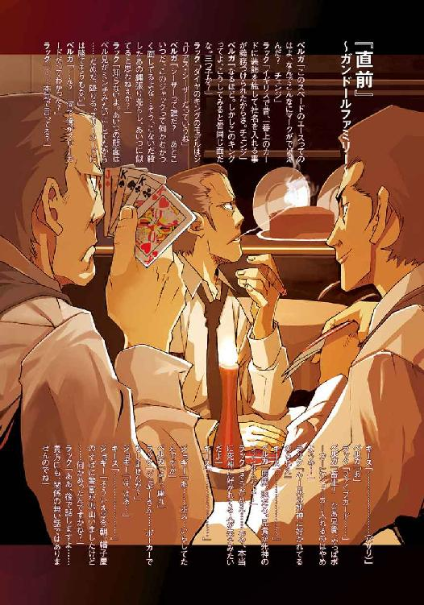
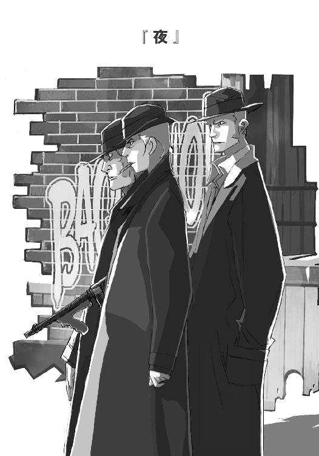

| バッカーノ！ The Rolling Bootlegs | |
| 成田 良悟 | |
| (2014) | |

本書（電子版）に掲載されているコンテンツ（ソフトウェア／プログラム／データ／情報を含む）の著作権およびその他の権利は、すべて株式会社ＫＡＤＯＫＡＷＡおよび正当な権利を有する第三者に帰属しています。
法律の定めがある場合または権利者の明示的な承諾がある場合を除き、これらのコンテンツを複製・転載、改変・編集、翻案・翻訳、放送・出版、公衆送信（送信可能化を含む）・再配信、販売・頒布、貸与等に使用することはできません。
２００２年 夏 ニューヨーク・マンハッタン島
何故、こんな事になってしまったのだろう。
「Face to wall !!」
フェイスは顔で......ウォールってのは壁だから...ああ、トゥーってなんだったけか。
だが奴らは、私が英語ができない事などまったくのお構い無しだった。何というか.........奴らは警告（だと思う）を発する前から、私の頭を石壁に押しつけていたのだ。
始まりは、地元商店街の福引だった。
「おぉめでとう御座いまぁああす！ 特等、ニューヨーク三泊五日旅行───っ！」
血管が切れそうな叫びと共に、ガランガランと鐘が鳴り響く。
ガランガランガランガランガラン............
その音が耳に響いている間に、私はアメリカに来てしまっていた。
私はただ、二等のゲーム機が欲しかっただけなのに。
摩天楼の森の中を、マンハッタン・ブリッジの方に向かって進む。チャイナタウンで中華料理を食べる事にしたからだ。飯に迷ったらラーメン。これは世界の常識だろう。
特等と言っても最低限の旅費しかでなかったので、今回の旅ではあまり贅沢はできない。本来ペア旅行だったところを、片割れの旅券を金券ショップに売っぱらってようやく小遣いをひねり出したぐらいだ。
日本の牛丼チェーンがＮＹにまであるのには（金銭的に）随分と心惹かれたものだが、名前がローマ字になっているのがなんとなく気に入らなかった。まだＮＹに来てから１日も経っていないというのに、私は既に、漢字を久しぶりに目にしたいという気分で一杯だったのだ。
そんな事を考えながら歩いていると、何やら喧騒の声が耳に入って来た。
５～６人の少年達が、大通りに繫がる細い路地で騒いでいた。何かを囲んではしゃいでいるようだったので、少し近づいてみた。すると、その中で一番年下と思われる少年が、私の手を摑んで「ルック、ルック」と笑いかけてくる。
なんだろう。
興味を引かれた私は、路地裏に入ってその円の中心を覗いてみた。
────なんだ、何も無いじゃないか。
そう言おうとした瞬間、私はギョっとした。子供達がはしゃいだ声をあげたまま、全員で一斉に飛びかかって来たではないか。
後は、冒頭の通りだ。
こうしたトラブルに巻き込まれても、自分で判断して対処できると思っていた............しかし実際はどうだ、判断する暇すら与えられなかったではないか。
その後は、何をどうされたのか解らない。気がついたら陽射しで生暖かくなったアスファルトの上に転ばされており、何とか起き上がった時には、連中は既に路地の角を走りながら曲がっている最中だった。
殺されなくて良かった。取り合えずそんな感想が浮かんだが、手荷物が全て奪われていることに気がついた。...やはり全然良く無い。命の存続に感謝すべきなのだろうが、人間喉元を過ぎれば何とやらだ。今思うと、殴り返してやれば良かったとさえ思える。まったくもって都合のいい考え方だが、そうでも思わないとやっていられない。
動物カメラマンの駆け出しである私は、わざわざ高級なカメラセットを持ってこの旅行に臨んでいた。結果、それらは全て奪われた。
くそっ、あのカメラ何十万すると思ってるんだ？ 私は憤慨せずにはいられなかった。
⇔
行き場の無い怒りを押さえながら、私がした事はホテルを通じて警察に連絡を取るだけだった。結局映画やドラマに出てくるような『典型的な日本人被害者』と同じ道を辿る事になろうとは、ある意味強盗にあった事以上に気が重い。
そして、警察の対応も予想していた通りだった。
私が渡された物は、保険を申請するために必要最低限な書類だけだった。同行してくれた日本語が少し解るホテルマンの話によると、やはり警察はこの程度の事件では本腰は入れないそうだ。私がもっとはっきりと怪我をしていたり、銃器で脅されたとなれば話は変わってくるとの事だが。
しかし、あのカメラは私の生活と引き換えに手に入れたような高級カメラだ、そうそう簡単にはあきらめ切れない。そもそも保険に入る金すら無かったのだから。
このままでは逆恨みのあまり、日本に帰った直後にこんな旅行を商品にした商店会長に延髄斬りをかましてしまいそうだ。
膝をついた所にシャイニングウィザードを入れる事を想像しながら、私は必死に食い下がった。警官は同情はしてくれたものの、やはり殺人などの凶悪犯罪を優先せざるを得ないという雰囲気である。
...と、一度報告書を見直した年配の警官が、奪われた場所を見て呟いた。
通訳が訳すには、次のような内容だったそうだ。
「...もしかしたら、戻るかもしれんよ、そのカメラ......お勧めはできない方法だがね」
⇔
「いやいや...この度はとんだ災難でしたねぇ......」
待ち合わせ場所に現れたのは、まだ若い優男だった。
栗色の髪に丸眼鏡。典型的な銀行員みたいな格好をした男だ。余りに流暢な日本語なので、最初は日本人かと思ったが...顔をよく見ると、日本人とは全く違うという事が解った。
中年の警官は何処かに電話をかけ、あとはただこの場所を示して『ここで会う男に助力を請え。通訳はいらんぞ』と告げただけだった。やけに複雑な表情をしていた事が印象に残っている。
「運が良かったですね...貴方の対応をしたポール・ノア巡査部長とはちょっとした顔見知りでして......対応したのが彼でなければ泣寝入りするところでしたよ」
『泣寝入り』なんて単語を使っているあたり、この男の日本語のレベルが相当なものだと解る。発音にもまったく違和感は無い...いや、むしろ現代人よりも古風な雰囲気すら漂わせている。
「話は聞きましたが......貴方から荷物を奪ったのは恐らくボビー達ですね...いや、このあたりで最近はしゃいでいる悪戯小僧どもなんですがね」
......あれが悪戯と言えるレベルなのだろうか。
どうにもこの男は胡散臭い。恐らく探偵か何かなのだろうが、どうにもカタギの人間とは違う空気を全身に纏っているように思えた。
まあしかし、言葉が通じるというだけでも随分と心強いものだ。
.........そう思ったのも束の間。
「どうです？ 貴方が奪われた今の荷物......その価値の１割を頂けるというのでしたら、私が彼らと『交渉』して、そっくりそのまま取り戻してきますけど？」
......なるほど、どうやら彼が強盗団の親玉らしい。利益が１割になる代わりに、必要以上に騒がれる心配も少ないし、品物を現金に換える手間も省けるってわけか。
しかしまあ、１割なら随分とましな方だろう。そう考えた私は、男に気を許さないようにしながら承諾した。
「ＯＫ、商談成立ですね」
男はそう言って、私をどこかに案内しようとした。
臓器でも切り取られて売られてしまうのではなかろうか。そんな不安がよぎったので、少しでも怪しい所に入ろうものならヘルプと叫びながら逃げ出す所存だった。
それにしても、殺されて臓器を売られるのも一応は『人身売買』と言うのだろうか。
くだらない事を考えているうちに、大通りの一角にあるバーに案内された。
看板には蜂の巣の絵の中にアルファベットが並んでいたが、読めなかったので便宜上『蜂の巣の店』と呼ぶ事にする。
店内に入ると、蜂蜜の甘い匂いがした。外観に比べて内部はかなり広く見える。バーというよりも、高級レストランといった方がしっくりくるかもしれない。
ぼったくるつもりじゃ無いだろうな。そう思って周囲を見回すと、確かにカタギに見えないような男達の姿もあったが、老人や子供連れ、カップルなどの姿が見えたので取り合えず安心する。
男は店の奥に行って、別の男に何やら話しかけている。相手は黙って頷くと、荷物も持たずに店を後にした。ついでに言うなら勘定も払っていない。
「ああ、彼に事情を話しまして.........今、取り返しに行ってもらいましたから。いや、あの小僧どもはこの辺じゃ顔が知られてますからね......すぐに見つかると思いますよ」
グルのくせして白々しい。無論、口には出さなかったが。
「まあ、待ってる間に何かお話しでもしましょうか」
そうは言われたものの、何を話せばいいのか解らなかった。私は、とりあえずその達者な日本語の理由について聞いてみた。
「ああ.........組織の上の人に日本人がいまして......矢車さんって言うんですけどね、その人に色々教えてもらったんですよ。まあ、現代口調は映画や日本のコミックで学んだような感じなんですけど」
組織。やはりマフィアか何かだろうか。ここまでくればマフィアでもなんでもいいやとヤケになっていたので、率直に聞いてみる事にした。
「いや......マフィアじゃありませんよ。一般には同一視されてますが.........『カモッラ』って言うんですけどね、解りますか？」
聞いた事の無い単語だった。
「イタリアのシチリアを発祥とするのが『マフィア』...もともと農村部の武装警備隊...まあ、自警団のようなものが元になっている組織です。『カモッラ』は、同じイタリアでもナポリの出です。刑務所の中で生まれた組織と言われてますが、はっきりとした事は私にも解りません」
刑務所が発祥の地とは。それだけ聞くと、カモッラとやらはマフィアより性質が悪そうに聞こえるが、それは心の中にしまっておいた。
「私は自分の組織の中では『出納係』の役についてます。まあ、金の計算係のようなものですが......マフィアの場合は計理士がやるんですがね」
どちらにしろあまり変わらないように思える。
「はは...まあ、今じゃ皆『マフィア』で統一されてしまってますからねえ。麻薬マフィア、チャイニーズマフィア、ロシアンマフィア、密輸マフィア......でも、ナポリではカモッラが主流ですよ。我々はアメリカで派生した上にナポリとの直接的な関わりを持たない『はぐれ』なんですけどね」
その他にも色々な知識を披露してくれたが、私にはどうもピンとこないものばかりだった。日本で暴力団に会ったことすらない私だ。目の前に、カモッラだかマフィアだか.........とにかく、裏社会に生きる人間がいるという実感が湧かなかったのだ。
「それも当然ですよ。ニューヨークの皆さんだって、マフィアに会ったことがある人間なんて１％もいないんじゃないですかね。無論直接的に被害にあった人もね。私がでしゃばりな性格をしていて、たまに貴方のような人に名乗ったりはしますが。私が声を掛けたのは、その１％の内の微々たる人数でしょうけど」
...本当に、自分の運に泣けてくる話だ。
しかし、その時わたしは既に男の話術に引き込まれてしまっていた。なんというか、もう何年来の知り合いと話をするような感覚になってきてしまうのだ。実際は、その時点で互いの名前すら知らなかったのだが。
「いや...実際にはもっといるのでしょうが、マフィアの存在を感じた人は滅多にその事実を口にはしませんからねえ......」
それは映画等で聞いた事がある。確か『沈黙の掟』とかいう奴だったか、民衆は復讐を恐れて事件を見なかったふりをするという奴だ。
しかし...そうすると初対面の人間に組織の事を話すこいつは一体何なんだ？
「ハハ。まあ他の組織はともかく、うちはそれ程厳しくないってだけの話です。それほど大それた事もしちゃあいませんしね。......そもそも、シチリアのマフィアの場合は自分がマフィアの構成員だって事すら話しやしませんが、カモッラや...一昔前のアメリカンマフィアもそうですが...この場合は、結構自分から名乗ったり...ボス自らが雑誌の取材に答えたりしますからねえ」
目立ちたがり屋ってことか？ そう聞いたら、一瞬沈黙した後、声をあげて笑いだした。
ひとしきり笑った後、男は私の顔を興味深そうに見つめながら口を開く。
「...よくもまあ、カモッラ本人の前でそういう事を言えますねえ...怖くは無いんですか？」
全然。
「...もしかして、私がギャングスターだって事、疑ってます？」
全然。仮に噓だとしても、わざわざカモッラなどと騙る必要性が解らない。
「......貴方は変わった人ですね......ポールの奴に聞いた時には、典型的なカモネギの日本人だと思ってたんですが」
大きなお世話だ。それにそこまで日本語に流暢なら、年上の人間にはちゃんと『さん』をつけろと言いたい。ポールさんってな。アメリカは年功序列が少ないといっても、年上に対する最低限の礼儀ぐらいはちゃんとある筈だぞ。...ガイドブックの受け売りだが。
この何気ない一言が、私の人生の歯車を狂わすスイッチになろうとは、その瞬間はまったく想像もつかなかった。
先刻よりも長い沈黙の後、男はクックと笑いながら呟いた。
「偶然ってのは...こう...面白いものですね......」
何を言っているのだろう？ 私が困惑していると、男はまるで子供のような笑いを浮かべた。新しい玩具を見つけたような......、何か悪戯を仕掛ける直前のような、そんな笑顔をこちらに向ける。
そして、何かを言おうか言うまいか迷っているような素振りを見せた後、小声になって私に答えた。
「ポールは、私よりも年下ですよ」
はあ。.........ん？ ちょと待て、今何て言った？ さっきの警官はどうみても中年の峠を過ぎていたように思えるが。......あの警官、そんなに老け顔なのか？
「そうですね......さっきの話に戻りますが......この60年程の間に、だいたい百人程ですかね。私がカモッラだという事を名乗ったのは。もともと知っている人や警官は除いてですが......そもそも、今回みたいな事がないと、カタギの観光客と知り合う機会っていうのもないんですよ。ハハ」
私はその時、自分が聞き間違えたのだと思った。60年。目の前にいる青年は...私は白人の外見年齢は解らないが、どう見ても60歳の半分も満たないように思える。
不思議そうな顔をして見つめると、男は眼鏡をかけ直しながら照れくさそうに言った。
「いや、私ね、不老不死っていうんですか。死なないんですよ」
ほほう、これがアメリカンジョークという奴か。
「あ、信じていませんね。いや本当に、斬っても焼いても死なないんですよ」
アメリカンジョークはしつこいのが特徴らしい。
私が適当に相槌をうってやると、男もニコニコとしたまま──────
懐からナイフを取り出し、男自身の手に突き刺した。
一瞬何が起こったのか解らなかった。ナイフの突き立った男の手から、赤い血がダラダラと流れ始める。呆然としてる私に対し、男は笑いながら言った。
「大丈夫ですよ......ほら」
ゆっくりとナイフを抜く。血が噴き出るものと思ったが、血はすっかり止まっていた。
それどころか、私は信じられないものを見た。
テーブルの上に流れ出た男の血が......まるで、意志を持った生物のように蠢きだし.........自らの宿主に戻るように、男の傷口へと吸い込まれていった。全ての血が戻ると、傷口自体が消え去ってしまったのだ。テーブルには、染みの一つすらも無かった。
これがスクリーンに映写された出来事ならば、陳腐な特撮と笑って見れただろう。だが、残念ながらこれは目の前で起こってしまった出来事だ。
重力に逆らって液体が動くのも、傷口があっという間に塞がってしまうのも、ＣＧの方が綺麗なのではないかと思えるほど陳腐なものに見える。それが逆に不気味だった。
店内に...いや、この世界で起こった異常事態に気がついているのは私だけなのだろうかと思えた。少しクラシックな雰囲気を持つ店内で、今、一人の男が物理法則を捻じ曲げてしまった。にもかかわらず、客も店員もこちらの方に目を向けてすらいなかった。
少し考えて、私は言った。目の前にいる......何者かに対して。
俺を殺す気か？ と。
すると男は、すこしキョトンとした顔をしてから、再びニッコリと笑った。
「その反応は初めてですね......今までこれを見せた人の中には、十字架をつきつけてくる人や、いきなり銃を発砲する人なんてのもいましたけど......ああ、もちろん後者の方は警察に連れて行かれてましたが。いやいや、可哀想な事をしました。そういえば、ナイフを出した時点で逃げた人もいましたね」
当たり前だ。
「......何故、私が貴方を殺すと？」
化物だと思ったからだ。私は正直に答えた。それから化物扱いして悪かったと詫びると同時に、本物にしろトリックにしろ、人を驚かせるのは止めた方がいいとも言ってやった。
「.........貴方は珍しいタイプの人ですね。こんなに落ちついた人は始めてですよ」
落ちついているというよりも、鈍感と言った方がいいかもしれない。他人によく言われるが、どうも私は北海道で羆に食われかけて以来、そのショックで恐怖という感情が欠落してしまったようだ。戦場カメラマンになったらどうかと言われたが、戦場を渡る知識が無いので確実に死ぬだろう。私は死にたいわけでは無かったので、相変わらず動物カメラマンのままだ。
それを言うと、男は愉しそうにこちらの目を見つめてくる。
「...貴方は本当に面白い人だ。そうだ、せっかくですから、私の昔話を聞いてみる気はありませんか？ この不老不死の力を得た時の話と、それにまつわる数奇な物語を......時間を潰すには丁度良いと思いますが？」
確かに興味深い話だが...初対面の私なんかが聞いていいものなのだろうか？
「構いませんよ。どうせ貴方が他人に話したところで、誰も信じはしないでしょうし」
私は彼に、宗教とは関係無いだろうな、と念を押した。目の前に不老不死の人間がいるのに何を落ちついているのだろう。今思うと自分はあまりにも間抜けだったようだ。
「ああ、ご安心を。そんなのとは関係ありません。本当にただの暇つぶしなんですから。...まあ、この話には『悪魔』が一人でてきますがね」
カモッラの『出納係』と名乗った男、そしてどうやら不老不死らしいその男は、ウェイトレスに料理を注文すると、ゆっくりと『伝説』を語り始めた。
「...それでは、始めましょうか...悪魔の酒を飲み、不死を得てしまった男。その哀れな男の辿る孤独な孤独な物語。舞台は禁酒法の時代のニューヨーク。突如として現れた『不死の酒』を巡る数奇な運命、それに取り込まれた人々の螺旋の物語を............」
１７１１年 大西洋上 アドウェナ・アウィス号────
錬金術。
古代エジプトより発祥したとされる学問であり、技術であり、同時に文化でもあった。
エジプトの技に端を発したそれは、ギリシアの哲理、ヘルメス思想による宗教的概念との融合を続けながら、アラブ世界を経て西欧ルネサンスの中に深く浸透して行く。
その所業は、時には名の示す通り卑金属から金を為す事を求め、またある時は神の手を離れた人造の生命を求め、果てには永遠の生命を追いかける。...いや、それですらも『果て』とは言えないだろう。術師達の求める究極に終わりは無い。彼らは不可能な事を可能とすべく日々研鑚を重ねているのであり、もしそれが叶ったとすれば、それはもはや『可能』な事。究極の目的からは色褪せてしまうのだ。彼らは更に不可能な事を求めながら己の知識と欲望、あるいは使命感の中に埋没して行くのだろう。
燕雀鴻鵠な現実渦巻く近世、錬金術師達は周囲から阻害され、時には羨望の眼差しを受けながらも、様々な技術を追い求めては挫折して行った。しかしその行為は決して無駄なものでは無く......錬金術師ニュートンが発見した万有引力をはじめ、近代科学における様々な貢献を為している。錬金術は、決してまやかしの学術体系ではないのである。
だが、時には────魔術や神術と呼ばれる、科学とは一線の隔たりをなす分野との融合を図る者達もいた。
一般的には錬金術と魔術は同一視されがちだが、それは全く異なるもの。錬金術師達の中は、そうした魔術や祈りを『他力本願の非科学的な物』として軽く見る風潮もあったが.........中には、積極的に手を出す者も存在したのである。
魔術や悪魔とて、存在を確認してしまえばそれは『可能な事』であり、次なる『不可能』を打開する為の道具に過ぎないのだ。
⇔
その船は、夜の闇に包まれていた。
闇の中...彼らは『声』だけを聞いていた。
故郷を離れ、新天地を目指す錬金術師達。
彼らはその船上で、ついに『悪魔』の存在を具現化させることに成功したのである。
「俺を『悪魔』と呼ぶか。まあそれもいいだろう。しかしお前らは神や天使を見た事があるのか？ 『悪』なんて単語は、比較する対象があって始めて生きてくると思うのだがな。まあいい、わざわざ呼び出されたのは１０３年ぶりだ。あと３年早ければキリが良かったんだがな.........まあいい。ああ、『まあいい』というのは俺の口癖だ。気にするな......お前達の頭に直接語りかけているのに口癖というのも変だがな。まあいい」
やけに饒舌な『悪魔』は、自らに課した誓約に従い、自分を直接的に呼び出した錬金術師に『知識』を授ける事を約束する。
錬金術師はこう言った。『不老不死の全てを知りたい』と。
「それは......暗に不老不死にしてくれと言っているのか？ まあいい。」
船の甲板上...錬金術師達の中心に、一つの器と、その中に満たされた液体があった。
「それを飲めば不老不死になれるから、それからお前らで勝手に判断しろ。俺も不老不死だが、感想なんてものは千差万別だからな。......まてまて、ここから落ちついて聞けよ.........俺は気前がいいんだ、その薬はちゃんとここにいる全員分ある。喧嘩しないで分けろ。......それからな、もしお前らが不死に飽き、死にたいと思ったら...」
悪魔は続いて、不死者が死ぬ為の方法を授けた。
「...他に薬を飲んだ奴の所に行け。そして、訪ねられた奴は、そいつの頭に右手を載せて、『食いたい』と思え。まあ、強く思うだけでいい。死にたかった奴は、右手の中に吸い込まれてその生涯を終えるだろう。『食う』という事は、相手の知識の全てを受け継ぐという事だ。最後の一人は、ここにいる三十人程の知識を溜め込む事になるな......最後の一人が生きる事に飽きたら、俺をまた呼べ。その時は、俺が『食って』やろう。俺は三十人分の知識が得られて得だしな......あと、言っておくが......リスクはあるぞ。......この薬を飲んだ奴は、『偽名』を使う事が出来なくなる。お前らの精神にそういう制約がつくのさ......普通の人間に一時的に名乗るぐらいなら問題はないが、不死者同士では本名でしか会話できないし、偽りの籍を世間に定着させる事も体が拒否するだろう。.........そうしておかないと、相手を永遠に探す事ができなくなってしまうからな......」
錬金術師達は少し考えると、全員でその薬を分け合って飲んだ。薬は、酒の味がした。
「そうそう...全てを教えるという約束だったな......何をもって全てと判断するのかは知らんが、とりあえず今の薬の調合法は教えておいてやろう。これはここにいる全員には教えてやらんぞ。俺を呼び出したこの男だけだ。知りたければ後でこいつに聞け」
姿の見えぬ『悪魔』はそう言うと、自分を呼び出した錬金術師に『知識』を与えた。まだ若いその男は、何が起こったのか解らなかった。ただ、今まで自分の知らなかった『知識』が記憶に植え付けられたのは理解した。
悪魔の声は、もう聞こえなくなっていた。
『知識』を得た男は、一晩考えた。
船に同乗した弟に、不死の薬の秘密を教えてやろうとした。半分程告げたところで、ふと思いたった事があったのだ。
そして翌日、彼は言った。
「...この知識は、永遠に封印しようと思う」と。
錬金術師達からは反対の声があがったが、彼の決意は固かった。
そしてその夜、事件は起きた。
知識を得た男は、警戒していた。夜中に何者かの気配を感じ、目を覚ますと..................船室の中に、仲間の一人が立っていた。
仲間は反対側のベッドに眠る弟の頭に手を載せており......
一瞬にして頭が冴えたが既に遅く、弟の全ては、仲間......いや、今この瞬間までは仲間だった男の右腕の中に、それこそ魔術のように吸い込まれて行った。
「...まさか、もう始まるとは思わなかったな」
その様子を、何処かの闇から眺めながら、『悪魔』がひとり呟いた。
「俺が煽ったようで何だが......これだから人間という種族は欲深い。これを見るのも愉しくはあるんだが......」
『悪魔』と呼ばれたその存在は、少し寂しそうに言葉を続けた。
「今度こそは、とも思ったのだがな」
『悪魔』の声はもう聞こえない。そこには、無限とも錯覚できる闇が広がるのみだった。
そして、時は流れる。
一九三〇年 十一月 ニューヨーク
クリスタルクレアと呼ばれる水晶のような空。澄んだ朝日が都市を照らし出す。
赤や黄色に色どられた煉瓦の建造物が、街自体を塗りつぶすかのようにひしめき合っている。しかし、街を歩く者には決して窮屈な印象を与えない。
むしろ近年はばをきかせ始めた自動車の方が、よほど歩行者達を強く圧迫していた。
時は禁酒法時代。様々な時代の流れが絡み合い、この国は『酒の無い社会』を選んだのだ。だが、その結果はかえって酒の魅力を高め、それまで酒を飲まなかった者達さえも闇酒場に通い詰める......つまりは、『犯罪者』を増やすという皮肉な結果となってしまった。
雑貨屋の店頭に蒲萄の汁が置いてあり、そこには注意書きとしてこう書かれている。
『これを暫く置いておくと発酵して酒になります。そうなる前に飲んでください』
この『蒲萄汁』は飛ぶように売れた。つまりはそういう時代なのだ。
ジャズ・エイジも最盛期を過ぎ、前年にはアメリカを大恐慌が襲った。街の中に溢れる赤煉瓦の建築物が、何やら色褪せているようだった。
だが、その街の闇には恐慌を撥ね退ける力を持つ『主役』達がいた。彼らは一般には『マフィア』の呼び名で括られ、密造酒の販売を足掛かりに大きな力をつけていた。
つまり政府のとった『禁酒法』という政策は、法律の敵である彼らが社会の中で躍進するための、ていの良い温床となってしまったのである。
アル・カポネやラッキー・ルチャーノを筆頭として、彼らの間には大小含めた数々の『伝説』が生まれる。────１９３０年とは、そんな時代であった。
⇔
彼らの伝説は、いつも路地裏から始まる。
「お恵みを、お恵みを下さい」
銀行の非常口、密集するアパートの合間、レストランの残飯捨て場...ぶっちゃけた話、狭く薄暗い道であれば何処でもＯＫだ。人通りの多い少ないは関係ない。もちろん季節も時間も関係無い。
「この憐れな男を、僅かばかりのお気持ちで救う事が出来るのですよぉ」
帽子屋の裏手で聞かれる物乞いの声。路地裏に響いたその声が、あるいは全ての始まりだったのかもしれない。
みすぼらしい格好をした中年の男が、裏路地に人が通る度に『お恵み』を欲して食い下がる。表通りに出る頃には諦めて元の位置に戻る......単調な繰り返し。
「主は貴方の行いを見ておられます、その行いはやがて貴方に主の御加護を......」
「俺が言いたいのは───」
その繰り返しの輪が、唐突に絶ち切られた。
物乞いに声をかけられていた男...まだ少年と言ってもいいかもしれない。彼はふと足を止めると、自分に取りすがろうとする髭面に顔を向けた。
「何故、お前はそう簡単に神の名を出すのか、という事だ。」
年齢に見合わぬ口調と態度。その突然の問いかけに、物乞いは戸惑いの表情を浮べた。
「どういう事です？」
「お前は敬虔なクリスチャンか？ 今までに一度でも日曜の礼拝に顔を出した事はあるか？ 失業する前、教会に寄付をしたか？ カトリックとプロテスタントの違いは言えるのか？ もしそうならば、お前はこんな所で神の名を出して物乞いなんかしているべきじゃあない。とっとと教会に行ってシスター達のやってる奉仕活動に協力するか、もっと必死に働き口を探すか、さもなくばお前をこんな境遇に導いた神の仕打ちを怨んで、悪魔崇拝者にでもなるべきだ」
静かにまくし立てる少年の口調に圧倒されていた物乞いだが、話が途切れると同時に反論を叫びたてた。
「そんな！ なら教会への寄付なんてどうなりますかぁ！ あいつらぁ神の名を使って、それこそ私なんぞの万倍億倍もの『恵み』を享受しているじゃないですか！」
「お前は自分のお恵みの事しか考えてなかっただろうが。...そんな自己中心的な奴は神が見捨てるわけだ。おおかたこの恐慌で路頭に迷った口だろうが、だったら表通りで『仕事を寄越せ』って看板を掲げた連中の方が、お前よりよほど真剣に生きてるってもんだ」
物乞いは何か反論しようとするが、上手い言葉が思いつかない。その間にも、少年は自分なりの身勝手な講釈を続けた。
「もっとも、物乞いにも技術がある。それで食ってる奴の中には、わざわざ金を持ってるのに破けた服を纏って辻に立つ奴もいる。わざわざ自分の腕や歯を折ったりして『演出』する連中すらいる。奴らの物乞いときたら、本当の怪我人以上に人の涙腺をくすぐるときてる。そいつらに比べると、お前はまだまだ素人だな」
そこまで言うと、少年は目を軽く上に反らし、懐から皮の財布を取り出した。
「はあ？」
わけがわからないのは物乞いだ。今の話の流れからすれば、当然ながら『お恵み』にありつけよう筈も無い。ではなぜ目の前の男は財布を取り出すのだ？
「───本来なら、お前のような素人は放って置くところだが......」
財布から数枚の硬貨を取り出す。が、物乞いはその財布の札入れに覗いた札束の厚みに目を奪われた。この恐慌の時代に、しかもこんな少年が持つ額ではない。いや、まっとうに職を持っている大人でもそうそう持てはしない...それほどの札束がひしめき合っていたのだ。
「今日は、俺にとって記念すべき日だからな、すこぶる機嫌がいいんだ。俺に声をかけたのが幸運だと思って受け取っておくといい」
数瞬の間を置いて、物乞いの男は顔をくしゃくしゃにして喜んだ。
「おお、おおぉぉ、ありがとうございます旦那ぁ！ この御恩は一生忘れませんよぉ！」
「いや...、別に忘れてもいいからとっとと受け取ってくれ」
掌に広がった硬貨を持て余しながら、少年が物乞いに促す。
「ああぁ、主もきっと貴方の行いを祝福して下さいますよ」
「だから都合のいい時だけ宗教家になるのはやめろと......」
「そうだぁ！ 私ね、今朝がた積んだ花があるんですよぉ。貴方が私にお恵みを下さった印だ。是非とも持っていって下さいよぉ」
言うが早いか、物乞いは金も受け取らずに、手に持っていた汚い紙袋をまさぐり始めた。
「どうせもう萎れちまってるだろう」
「いやいやぁ、きっと神様がまた奇麗に咲かせてくれますよぉ...」
喜びに歪んだ顔のままで、物乞いは紙袋の中を覗く。そして...
「真っ赤な真っ赤な、大きい花をねぇ...！」
それは、一瞬の破壊だった。
憐れな紙袋の身の上に起きた、小さく、そして猛々しい破壊。
無残に破かれた紙袋の中から飛び出したのは、鈍く光るボーイー・ナイフ。
「────っ！」
物乞いの髭面が何かを叫ぶ。本当に、本当に嬉しそうな顔のままで。
興奮による奇声が止むか止まぬかのうちに......
その絶叫は、痛みと驚きによるものへと取って代られた。
「───っがあああぁっがっグア...あっ！」
刃の先端が少年の腹に届くか届かぬかというところで、少年はナイフを握る男の手を払い、同時に身を軽くよじった。ナイフは空を斬り、少年の脇へと素通りする。そして次の瞬間には伸び切った相手の腕を取り、あっさりと捩じ上げてしまった。
絶頂が悲鳴に変わるまでの間に起ったのは、せいぜいこれぐらいの動きのみであった。
「よっと」
男の背に寄りかかるように、徐々に体重を載せていく。
ナイフが地面に落ちる音が聞こえたが、少年はそんな事はまったく気にかけない。
何かが軋むような音が、男の腕の関節あたりからはっきりと聞こえてくる。
が、その音もまた、男自身の悲鳴によって搔き消された。
「うあ...うああああぁぁぁぁっぁっかっうぁっややややややっやめっやめてくれれ...！」
男の意志が痛みに支配されているのを確認すると、少年は男の体を赤暗い煉瓦の壁へと叩きつけた。鈍い音と共に、男はガクリと膝をついた。それからゆっくりと体を倒すと、低いうめき声と共に地面を転げ回る。
少年はその様子を横目に、短い荒事の間に散らばった小銭を拾い集めた。
そして、男の動きが止まるのを確認すると、
「ほら...立てよ」
あくまで用心深く男の腕を取り、自分より一回り大きい体を引き起こす。そして、そのまま赤煉瓦の壁へと男をもたれかけさせた。
「信仰心の薄い俺に声をかけたのが間違いだったな......生憎と、黙って刺されてやるほどの自己犠牲精神は持ち合わせてはいないんでね」
男は肩で息をしながら少年の皮肉を聞き流すと、目だけを素早く動かした。こんな状況下ではあるが、何とか自分の逃げる方法を模索しているのだろう。
「逃げるつもりか？ そう焦るな」
少年は拾い集めた小銭を掌の上に広げると、男の目の前に突き出して、
「言ったろ？ 幸運だと思って......」
そのまま、広げていた手を小銭ごと堅く握りしめる。
「......ありがたく、受け取っとけってなあっ」
それほど大きく振りかぶったようには見えなかった。だが、繰り出された少年の拳は、男の前歯をへし折るには充分な威力だった。
「～～～～～～～～～っ！」
男は殴られた衝撃で、赤煉瓦に後頭部を強く打ち付ける。前歯の痛みも伴い、声にならない悲鳴をあげると───ずるり...と、壁に背中をこすり付け───だらしなく地面に崩れ落ちた。
先刻と違い完全に意識を失っているため、地面を転げ回りはしなかった。
少年は、堅く握っていた拳をゆっくりと緩める。その中から次々と硬貨がこぼれ落ち、鼻と口からの出血にまみれた男の顔面へと降り注いだ。何枚かがだらしなく開かれた口の中へと入り込む。地面にこぼれた分の乾いた金属音が、路地裏を退廃的な空気に包み込んでいた。
「......ん？」
見ると、少し離れた所にさっきのナイフが落ちている。何処にでもあるような型で、大した価値も無い一品だ。
（川にでも捨てとくか......）
一瞬降り返ると、男は確かに気絶していた。だが少年は、念には念を入れて凶器を回収しておくことにした。
鈍く光る安物に手を伸ばした瞬間、少年の名を呼ぶ声が。
「フィーロ・プロシェンツォ。その手を止めろ」
ナイフに触れかけた手を静かに引き、少年────フィーロは声のした方向...路地裏の出入口...大通りの光の方へと目を向けた。
逆光の中に立つ青年の姿が見える。20代半ばといった年頃の青年が、褐色のスーツの上に、膝まで隠れる黒コートを羽織っていた。
「困るな...証拠品に勝手に触られちゃ......」
青年は嫌味ったらしい目をフィーロに向けながら、白い手袋でゆっくりとナイフを拾い上げた。
「エドワード...これは、どういうことだ？」
「『エドワードさん』だろう？ 目上の人間には『さん』ぐらいつけろよ......小僧。なんだったら、『エドワード警部補殿』でも構わんがな」
黒コートの男......エドワード・ノア警部補は、高慢な笑みを浮かべながら静かに右手を上げた。
すると、彼の背後から数人の男が現れ......破けた紙袋、散らばった硬貨、気絶している間抜けを次々と『回収』し始めた。フィーロの事などまるで気にかけない。頭一つ背の高い彼らにとっては、文字通り『眼中に無い』のであろう。
「おいおいお前ら、そのガキを踏み潰さないように気をつけてやれよ」
上司のつまらないジョークを聞き流し、男達は黙々と作業を続ける。
「...ふん、つきあいの悪い連中だ」
「説明しろよ、エドワード...さん。これじゃ俺がただの阿呆みてえだろう」
それまで沈黙を続けていたフィーロが、静かに口を開いた。
物品が粗方持ち去られ、作業に勤しんでいた男達の姿はもう見られない。先ほどの出来事の痕跡は、物乞いの残した僅かな血痕のみ。
エドワードはその問いかけに対し、顔はおろか、目線すら向けずに答えた。
「そうだな、お前は阿呆じゃない。クズ野郎で、町のダニではあるがな」
「はぐらかすな...」
フィーロの言葉に、不快の意がこもり始める。エドワードはそれを嘲るような笑いを浮べると、葉巻に火をつけながら赤煉瓦の壁にもたれかかった。
「ま、そう怖い顔をするな......今しがたお前がのした男だがな...あれは、俺達が目をつけてた容疑者だ」
「何の？」
「殺人だよ。お前にやったのと同じ手口だと思うが、路地裏で物乞いのふりして、親切な紳士淑女の身なり...あるいは財布の中身を確認する、そんでもってリスクに見合う金を持ってそうだったら、紙袋に隠したナイフでブスリ！......ってわけだ。もっとも、紙袋はさっき初めて知ったんだがな」
「何だってそんなのを野放しにしてた」
「目撃証言はあったんだが、いまいち決め手にならなくてな。手っ取り早く警官を囮にして、現行犯逮捕するつもりだった」
エドワードは葉巻を大きく吸い込んだ。
「そこに、俺が現れたってわけか」
「まあな。ぶっちゃけた話、お前ら以外ならそれとなく人を通らせて安全を図るつもりだったが」
「...最初っから、ずっと見張ってたってわけか。随分と大層な御趣味だな。人が殺されるかも知れない瞬間を、ボクシングの観戦気取りで見てたってわけか。...そいつはさぞかしポップコーンの手が進んだんだろうな？」
「そう思うからこそ、お前の過剰防衛を見逃してやるんだよ」
「......ありがたくて涙が止まらないな」
「それにしても、俺としてはお前が刺されて死んでくれりゃ良かったと思ってたんだが......よくもまあ、避けられたもんだ」
「あんな人気の無い所で物乞いをしてれば、警戒はして当然だろう。そこへ、あのあからさまに怪しい紙袋だ。...中身が銃じゃなくてよかったよ」
「ほお？ なら無視すりゃ良かっただろ？」
当然といえば当然の事を聞いてくる。
「今日はそんな気分だったんだよ。万が一ただの物乞いだったら、金はくれてやるつもりだった......おい、なんでそんなにつっかかる？」
「言っただろう？ 犯人は財布に金が詰まってる奴しか相手にしない。それこそ、まだ明るいうちに人を刺し殺して逃げるっていうリスクに見合う金しか狙わねえ。二十歳前のガキがそんな大金を持ってるとは信じられなかったんでなあ？」
明らかに、持っているのを知っている上での皮肉であった。
「.........俺を、脱税か窃盗の容疑で調べようってのか？」
フィーロの目が、鋭い光を放ち始める。
「は！ 冗談だろう？ 誰がお前みたいな小物の為に、そんな回りくどい真似をする必要がある？ 仮にお前が組織の頂点だったとしても、あんな弱小組織、周りに喰われるだけのエサじゃねえか！ 今だに残ってんのは、不味そうでどこも見向きすらしてくれねえからだろうが！」
「────それ以上は侮辱と受け取る」
フィーロはただ一言、短く言いきった。
少年がどうやってこいつを追っ払おうかと考えていると、再び自分を呼ぶ声が。エドワードの時とは正反対の、優しく、落ちついた声。
「フィーロ、こんな所にいたんですか」
先ほどエドワードが現れた場所、大通りとの境目に立っていたのは、眼鏡をかけた長身の優男であった。大通りから洩れる光を浴びて、栗色の髪が金のように輝いている。一見エドワードと同じぐらいの年齢とも受け取れるが、その男の持つぼやけた雰囲気が、彼を年齢不詳たらしめている。
「ここの帽子屋で待ち合わせって話でしたよね？ 来ないんで心配していたら、外の方から貴方の声がしたものですから」
何が嬉しいのか、驚くほどにこやかな笑みを浮かべている。
しかしその笑い顔が見えると、入れ替わりにエドワードの高慢ちきな笑みが消え去った。
「お前は......」
「マイザーさん！ あ...すみません、ちょっとゴタゴタに巻き込まれてしまったもので...」
フィーロの態度が、警部補であるエドワードに対する時と正反対のものとなる。慌てて襟元をただし、猫背気味だった背筋も今はしっかりと伸びている。
一方エドワードは苦虫を嚙み潰したような顔をして、葉巻を赤煉瓦に押しつけた。
「マイザー・アヴァーロ......これはこれは、『マルティージョ・ファミリー』の『出納係』に、こんな所でお目にかかれるとはな......」
緊張を含んだエドワードの声に対し、マイザーは気の抜けるような笑顔で挨拶を返した。
「えーと......あぁ、エドワード警部補殿ではありませんか。今日はまた一段と御機嫌がうるわしいようで」
明らかに不機嫌な男に対して随分と嫌味な挨拶を行うが、その恵比寿顔のためか、エドワードはあまり皮肉を言われているように感じなかった。
「......ふん...流石にガキとは違って、まともな挨拶ぐらいはできるようだな」
「いえいえ。今のうちでないと『警部補殿』とは言えませんからね」
「......？」
「来週頃からは、エドワード『捜査官殿』になるらしいじゃないですか」
それを聞いた警部補の目は大きく見開かれ、数回口をぱくつかせた後に返事を返す。
「な...んのことだ...」
「おや、私の勘違いですかね？ なに、町の些細な噂話ですよ」
エドワードの目が憎々しげに見開かれた。確かに自分は来週から捜査局（五年後に連邦捜査局...ＦＢＩと改名）の研修期間に入る。恋人や同僚にすら知らせていない事を、何故...よりによって一番知られてはならない種類の人間が摑んでいるのだ。
若い警部補は情報の漏洩元を探る決意をすると共に、自分自身への気まずさから、フィーロに目線を戻す事にした。
「...ともあれだフィーロ、よく覚えておけ。今更お前が誰かに金を恵んだところで、周りには偽善としか受け取られないぞ。無駄な事はやめてとっととこの町から消えるか、刑務所に入る覚悟を決めておくんだな」
突然話を振られたフィーロは、一瞬戸惑ったが、やがて面倒臭そうに答えた。
「知るか。ポーズだろうが自己満足だろうが、俺の募金した分を受け取る奴にとっちゃ同じだろうが。俺のその偽善とやらで、一体何処の誰に迷惑がかかる？」
「お前の稼いだ汚れた金で、誰もが喜ぶと思うなよ」
「...そういう意味では、共同募金とか慈善団体への寄付ってえのは良くできたシステムだよな。どんな金が誰の元に回ったのか、確認しようがない」
フィーロは、『汚れた金』という部分を特に否定しなかった。
「もっとも、普段は寄付なんかしないがな」
「またそれか......今日はお前にとって何だってんだ？」
エドワードが尋ねたところで、マイザーが割って入った。
「フィーロ、そろそろ行きましょう。...もうよろしいですかね、警部補殿？」
「......あ、ああ......」
「あ...すいませんマイザーさん、お待たせしちゃって」
その場を去ろうとする二人の背を見て、若い警部補は考えた。
組織の有能な若者と、幹部の上役の一人。特別な日。
ある事を思いつき、少年の背中に声をかけた。
「フィーロ、お前まさか......」
少年の歩みが止まる。背は向こう...大通りの方に向けたままだ。
「...まさか...幹部か？ ...昇進するのか？ 『若衆』のお前が」
眉をひそめながら、自分の言葉を疑うように尋ねる。
自分もこの町に住んで長い。フィーロが『組織』の中で有能であった事は認めるが、幹部に昇進するには若すぎる。二十歳までまだ１年半も残し、外見はそれよりも更に３～４歳は若く見える『少年』が、弱小とはいえ社会の裏側の...いや例え表側だとしても、一つの組織の幹部になるなどとは考えられなかった。
しかし、幹部になるには特別な儀式があると聞いた事があった。そして、普段決して目にする事の無い大幹部と、帽子屋で待ち合わせをしていたという事。......『特別な日』、対象の人物が必ず帽子屋もしくは服屋に立ち寄っているということも解っている。解ったからといってどうする事も出来ないが、組織においてどの人間が幹部なのかを知るいい目安にはなっていた。
「なあ...そうなのか？」
少年は答えない。しかし否定もしない。黙ったまま再び歩き出そうとする。
エドワードはその態度を肯定と受け取った。酒場でホラ話を聞いた時のような呆れた笑いを浮かべると、念を押すようにまくし立てた。
「本当か？ 本当に幹部になるのか？ お前が？ お前みたいなガキがか？ 冗談だよな？ おいおい...早く否定してくれよ、笑っちまうじゃねえか。じゃあ、なにか、お前らの組織ってのはそれほどに人手不足なのかよ？」
二人は無視して歩き出す。それに構わず、エドワードが笑いながら続ける。
「それともなんだ、女みてえな顔だと思ってたけどよ...............一体何人の幹部と寝れば、そんなに手際良く出世できるんだ？」
足が静かに止まる。
少し脅しつけるべきか、フィーロは腰のナイフに意識を移した。
「警部補殿」
しかし、先に振り返っていたのはマイザーの方だった。
あくまでにこやかな顔のままで、警部補に向かって淡々と告げる。
「それ以上は、我々への侮辱と受け取ります」
エドワードの笑いが凍りつく。嘲りの声もそれ以上は出てこなかった。
マイザーは純朴な笑顔のままで、言葉遣いも先刻とは何ら変わりは無い。
しかしこの哀れな警部補は気がついてしまった。
（殺される）
何か一言でも『組織』やフィーロに関する単語を口にした途端、自分は目の前の男に殺されるだろう。相手の声の奥にある冷淡な感情を感じ、そう確信できた。
何がそう思わせるかといえば、あの目だ。目の奥から、何か得体の知れないものが入り込んで来るような......そんな恐ろしい何かを感じさせるのだ。
エドワードが口を閉じ、脂汗を流し始めたのを確認すると、マイザーはフィーロの肩に手を置きながら言葉を続けた。
「......確かに、我々は喰われるだけの組織かもしれませんが......」
一瞬間を置いて、
「せいぜい、毒にやられないようにお気をつけて......」
くそったれが、やっぱり立ち聞きしてやがったのか。
エドワードはそう思ったが、口にまでは出すことが出来なかった。脂汗の感触が、背中にまで感じられ始める。
いまだに警部補を睨み続けるフィーロの肩を、そのままポンポンと二度叩くと、マイザーは何事も無かったかのように大通りの方に足を踏み出した。つられるように、フィーロの足も大通りへと向かった。
「......おぼえて......覚えておけ......例え殺されようが、俺は貴様らのようなマフィアの存在は認めないぞ......いつか俺が...お前らを排除してやるからな.........！ 絶対にだ！」
二人の背後から、やっと搾り出したと思われる警部補の声が聞こえて来る。
「あー、我々は『マフィア』ではありませんよ」
もはや振り返りもせず、手を軽く振りながらマイザーが答える。
その後をフィーロが続けると、二人はその姿を雑踏に紛れ込ませて行った。
「俺達は───『カモッラ』だ」
二人の去った路地裏で、警部補が拳をワナワナと震わせている。
「あの......警部補殿、そろそろ署に戻りましょう」
そこへ、先ほど証拠品の押収を行っていた警官の一人がやって来た。
「......今まで何処に行っていた」
「あ......いえ...車の中で皆と待っておりましたが、中々お見えにならないもので......」
「ふざけるな！ あの出納係にビビって、今までここに入って来れなかっただけだろう！」
「そ、そんな事は......」
警官の顔色が青く染まる。それが、警部補の推測の正しさを伝えていた。
「貴様らそれでも警察官か！ 俺達の仕事は何だ？ 合衆国の法と市民の安全を護る事だろうが！ その両方を脅かす連中に、俺達まで怯えちまってどうするつもりだ！」
新品に近い革靴を、何度も何度も赤煉瓦の壁に蹴りつける。
今の言葉は、自分自身にも当てはまる。それが彼を一層苛立たせていた。
「マイザー・アヴァーロ.........フィーロ・プロシェンツォ.........前々から気に入らん奴らだったが、いつか必ずこの手で破滅をもたらしてやるぞ！」
いきり立つ警部補を静めようと、愚かな警官は余計な冗談を付け加えた。
「その科白、まるで小説に出て来るマフィアみたいですね」
エドワードはボロボロになった革靴で、部下の脛を思いきり蹴り飛ばした。
⇔
「俺達、排除されちゃうらしいですよ」
「いや怖い怖い、ああいうタイプの人間は本当に執念深いですからね。まあ、警官は執念深い方が信用できますけど」
フィーロとマイザーの二人が、顔を見合わせ小さく笑った。
「俺らが警官信用してどうするんすか」
路地裏から抜け出した二人は、リトルイタリーとチャイナタウンの間を通って、マンハッタン橋の方へと向かっていた。帽子を買う為にあの店で待ち合わせたのだが、「ケチがついた」という事で別の店に向かう事にしたのだ。
「どうせこっちに来るんだったら、いい店を知ってますよ」
このマイザーの言葉により、二人は小一時間程歩く事となる。
「ミュージカルはいいですよねえ......オズの魔法使いに出て来る『いい魔女』って、普段何をやって暮らしてるんでしょうねえ」
マイザーという男は、実に『カモッラらしくない』男であった。
喧嘩はしない、怒鳴りもしない、いつもニコニコしている、誰に対しても敬語を使う。およそ暗黒街の住人の要素を持ち合わせない人間に思えた。普段の街中だけならば、本当の自分を世間に隠しているのかとも思えるが、組織の集会や部下に指示を伝えるときですらこの調子である。
カモッラとマフィアが比較された場合、『カモッラの方がより暴力的である』と言われる場合が多い。だが、マイザーからはそんな荒廃した雰囲気の片鱗すら窺えない。
組織の中で読み書きと計算が一番達者だったということで『出納係』に任命されたという話だが、幹部以前に『組織』にいる時点でおかしい人間なのだ。少なくともフィーロはそう感じていた。
組織の下っ端の中には、彼の事を『臆病者』とか『白旗計器』等と言って蔑む者すらいる。フィーロは彼の事を嫌いではなかったので何かと庇い立てもするが、いかんせん本人がこれでは説得力の欠片も無い。
「ああ、見えて来ましたよ。あそこはちょっとした馴染みの店でしてね」
マンハッタン橋が見える大通り、その中に佇む古びた帽子屋があった。
中に入ると年老いた店主が一瞥を寄越したが、いらっしゃい等といった声がかかる事はなかった。大通りにある店の割には無愛想な店主だったが、店内の品揃えの多さを考えればどうでもいい事だと思えた。そこは帽子とベルトの専門店だったが、あまりの品物の多さに、フィーロは軽く驚嘆の声をあげた。
「すごいっすね.........」
壁という壁に帽子がかけられていた。いや、帽子によって壁が見えなくなっているので、本当にその裏側に壁があるのだろうかと思える程の量であった。無論壁だけではなく、店に並ぶ棚にも大量の帽子が陳列されており、レジの周囲には、ベルトがまるで壁紙のようにびっしりと垂れ下げられていた。
「本当に、いつ見ても凄いですね......この中から君に一番選ぶ帽子を見立てろっていうんですから。......すみませんが、ちょっと時間がかかるかもしれませんよ？」
「滅相も無いです。いつまでだって待ちますよ」
軽く頭を下げると、自らも帽子の山に見入り始めた。
通常カモッラという組織において、『カモッリスタ』と呼ばれる幹部に昇進する際、当該者には『昇進の儀式』の夜まで知らされる事は無い。だが、彼らのファミリーには他のカモッラとは違う風習があった。当該者には前日に知らせが届き、『儀式』の日の朝に、特定の幹部と共に帽子屋へ赴く。そして、幹部は今晩から自分達と同列に並ぶ幹部の為に、その者に一番似合う帽子を見立てるのだ。
別に特別な意味があったわけでは無い。現在の組織を束ねるモルサ・マルティージョがこのニューヨークでファミリーを旗揚げした際に、初期のメンバーの一人ひとりに帽子を贈った事から始まった慣例、それだけの事だった。
それでも、これから幹部になろうというフィーロにとっては帽子選びも重要な『儀式』の一端であり、軽い緊張と高揚感を持ってこの場に望んでいた。
マイザーと帽子を見ているうちに、先刻の事件や、いけ好かない警部補の事はすっかり頭の中から消えてしまった。今の彼にあるのは、今夜行われる儀式に対する期待と緊張の交錯のみだ。
「これなんか、いいんじゃないですか」
フィーロの頭に帽子が被せられる。
パールグリーンの中折帽。ドアの方からの光が反射して、淡く輝いて見える薄い緑色。それは少年の色白な肌と調和して、まるで一枚の絵のような印象を与える。一転して光が当たらない場所に移動してみると、光を失った緑は急に暗い色へと変貌し......白い顔とのコントラストがはっきりとして、見た者に引き締まった印象を与える。
「これは...いいですよマイザーさん！ これ、きっと俺にピッタリです！」
それは『出納係』に対する気遣いなどではなく、純粋な喜びだった。店内の大きな鏡で見ると、自分がまるで別人になったように思える。コートも同じ色で揃えたいと思った。少々...いや、かなり目立つかも知れないが構うものか。
鏡を覗く少年は、実に嬉しそうに笑った。その顔からは、先刻強盗の物乞いに皮肉を言ったり、顔面に容赦無く拳を放る姿は想像できなかった。
彼がこんな顔を見せたのは、頭領にファミリー入りを許された日以来であった。
帽子を購入する時も、相変わらず店主は無言だった。黙々と商品を袋に入れ、帽子の値札をもとに金の受け渡しは行われた。マイザーが軽い時節の挨拶をした際でも、無言のままジロリと一瞥をよこすだけだった。
しかし二人は気にもせず、儀式の後に行われるパーティーの献立は何だろうとか、帰りにスピークイージー（闇酒場）で酒を買って帰りましょうよ、等といった雑談を交わしながら店を出た。
その時、入れ替わりで男女の二人組が入って来た。
男の方はマイザーよりも更に長身で、入口で頭を上にぶつけそうになっていた。女の方はフィーロより少し低いぐらいの背丈で、両手には宝石の入ったブレスレット、指の何本かには銀に輝く指輪が嵌められていた。
二人ともやけに気取った格好で、男の方はノーネクタイのタキシードに黒い皮手袋。女の方も黒く染まったワンピースに、真っ赤なベルトを腰と腕に巻いていた。当時の女性としてはかなり珍しい服装で、ミュージカルの中に出て来る魔女のような印象を受ける。
要するに、物凄く世間から浮いた、よく目立つ二人組であった。
「おっと、失礼」
肩がぶつかったので、マイザーが即座に謝った。
「おいおい、気をつけてくれよ」
「気をつけてくれよ！」
男の言葉を追いかけるように、女も同じ言葉を紡ぐ。
その場はそれ以上何も無かったが、フィーロはそのブロードウェイから抜け出して来たような男女を見ながら思う。
（二人とも二十歳ぐらいだが......この不景気に、何処の富豪のボンボンだ？）
自分の財布の中身を棚に上げた事を考えながら、店の外へと出て行った。
フィーロ達が去った後の帽子屋。タキシードの男......アイザック・ディアンは、隣にいた女...ミリア・ハーヴェントに声を掛けた。
「いいか、ミリア...もう一回だけ確認しておくが、決して目立つような行動はするなよ」
「解ってるよ。地味に、地味に動けばいいんだよね」
「その通りだ。解ってるならいい」
服装と比べてあまりに説得力の無い会話をすると、二人は帽子に埋め尽くされた壁を見回した。男は右手に旅行用の大きな鞄を持っていたが、旅行だとは到底思えぬ格好だ。
「凄いな、選り取り見どりだ」
「買い放題だね！」
「帽子で世界が征服できそうだ」
わけの解らない例えを持ち出すと、男は適当な帽子を手に取り、指でくるくる回し始めた。
「どんな帽子にする？」
ミリアが尋ねる。
「まあ、最初は普通のでいいだろう。...いや、奇抜な方が攪乱にはなるか？」
店の奥に行くに従って、帽子の種類にも幅がでてくる。
冬だというのに麦わら帽子が並べてあったり、インディアンの羽飾りが置いてあったり、イギリス王室の衛兵が被る長丸い黒帽子までが陳列されている始末だった。
「...これって勝手に売っていいのか？」
アイザックが手にしているのは、ニューヨークの制服警官の装備品であるヘルメットであった。一方ミリアの方は、合衆国の軍用ヘルメットを被り始め、ただでさえ奇妙だった格好が珍妙と言えるレベルにまで達してしまっていた。
「うわ、こりゃ凄い」
棚の上段に、一際輝く商品があった。金属で出来た帽子の周囲が堅い布のような物で囲まれており、所々に金糸が使われている。そして、額の部分には金色に輝く......
「なあにこれ？ ブーメランかなぁ？」
「これで頭突きとかするのか？ 痛そうだな」
妙な形をしたナイフのような物が２本、Ｖ字型に取りつけられていた。
その奇妙なヘルメットの下には『JAPAN』と書かれた紙が添えられている。
「はーん...日本の王冠かな」
「きっとそうだよ。なんだかピカピカしてるし！」
王冠の下の段には、なんとか文明の仮面だの怪盗用絹製山高帽だのと、もはや胡散臭いを通り越した品揃えが並んでいた。
「......ちょっと奇抜過ぎるか？」
「強盗する格好には向かないかもね！」
ミリアがニッコリと笑いながら、さらりと恐ろしい事を口走った。
「まあいいや、まとめて買ってこう」
ミリアの科白を特に気にした様子を見せず、結局アイザックは黒い中折帽と、女性用のレースハット、それと日本の王冠とヘンテコな木製の仮面をレジまで運んでいった。年老いた店主の前に、かなりの質量がドサドサと落とされる。
それでも、店主は無言だった。目でちらりと品物を見ただけで、紙にさらりとそれぞれの単価と合計金額を書き連ねた。
紙には、銀行員の給料二ヶ月分程の額が示されている。男はバッグの中から無造作に札束を取り出すと、大雑把に数えて店主に差し出した。
一分後、多く出しすぎた十数枚の札と、釣りの分の小銭が手の中に返って来た。
「いいか爺さん。俺達がこの店に来たって事は、奇麗さっぱり忘れるんだなぁ」
「忘れるんだなあ」
余計な事を言う二人。ただでさえ目立つ格好でこの言動では、場合によってはその場で通報されかねない。どうにもこの二人、外見と違わず少々抜けているようだ。
「もし警察なんかに通報したら.........したら......どうする？」
自分が犯罪者だと告白しながら、ミリアへ堂々と助け舟を求める。
「んーと、殴るとかでいいんじゃないかな？ 具体的に決まってなければ」
「そうか。ともあれ爺さん！ 通報したら...ぶつ！」
「ぶつ！」
どうやら外見以上に酷いようだ。色々と。
二人の微妙な科白を聞いているのかいないのか、店主は目線だけでじろりと二人をねめつける。
男女は途端に無言になると、レジに置かれた品物を抱え、足早に店を出て行った。
店主は新聞に目をやると、今しがた来た客の事など奇麗さっぱりと忘れてしまった。
「はあはぁはぁ......こっ.........ここここ怖かったぁ」
「怖かったぁ」
帽子屋から逃げるように走り、二人は近くの路地裏に辿りついた。
「くそう......あの爺さん、きっとかなりの強者だぜ。ひと睨みで俺をその...なんだ、いや、ビビっちゃいねえが......ええと...逃げさせる...いや...追い出されさせる...？？？」
「退かせる」
「そう、それだ...ひと睨みで俺を退かせるとはな......いや、もちろん戦えば勝てたけどよ、ほら、なんだ、相手も強いから、ミリアに怪我でもあったら大変だと思ってよ」
「本当に？」
ミリアが嬉しそうに尋ねる。
「ああ本当さ！ 強盗行脚を始めてからこの１年、サンフランシスコからニュージャージーまで色んな所を八十七ヶ所強盗して廻ったけどよ、俺が今までお前を危険な目に合わせた事があるか？」
「八十七回ぐらい」
「.........」
「.........」
「そらみろ！ まだ百回以下じゃねえか！」
「本当だ！ すごおい！」
心の底から感動の声をあげる。この調子では、危険だと認識すらできなかった危機も数あることであろう。
「そうさ！ このニューヨークで最後の大仕事をして、後はマイアミあたりでのんびりと暮らすんだ。そうなりゃもう俺達に危険なんて言葉は無縁だぜ！」
「無縁だね！」
「大きい家を買おう。そこにプールを作って、朝から晩まで泳ぎ通そう」
「夜は寒いよ」
「大丈夫、ストーブを十台ぐらいつけりゃプールも暖まるだろ」
「十個も！ 凄い凄い、アラブの王様だってそんなにつけないよ！」
確かに砂漠の夜は冷え込むが...どうにも頭の悪さが滲み出る発言である。
「それで、庭には鉄道を走らせようぜ。家から門まで、毎日汽車に揺られるのさ」
「わあ、でもそれじゃ切符代が大変だよ」
「それもそうだ。よし、鉄道はやめよう」
「でも凄いねえ、私達、そんな大金持ちになれるの？」
「なれるさ。俺はミリアと一緒なら大統領にだってなれる！ アメリカの王様だぜ王様。ああ、俺はキングにだってクイーンだってジョーカーにだってなれるさ！」
クイーンは物理的に無理だろう。
「よく解らないけど、凄ぉい！」
いつしか二人は感極まって、ジャズミュージックを口ずさむ。路地裏はいまや彼らのステージ、手に手をとって踊り出す。愛する二人は夢の中────────
そして、車に撥ねられた。
⇔
「──死んだか？」
車の後部座席から、老齢な男の声がする。
「いえ.........速度が速度ですから......あ、動いています。おそらくバランスを崩して転倒しただけでしょう」
運転席から返って来たのは、若い女の声だった。
「なら、さっさと行け」
「はい」
何事も無かったかのように、車は速度を上げて走り出した。路地裏を抜け大通りにまで出ると、ようやく男が話題を続けた。
「......気をつけろ。何故撥ねた？」
「申し訳ございません。避けるつもりだったのですが、突然道の中央で踊り出しまして...ブレーキが間に合いませんでした」
男は少しの間沈黙する。そして、運転する女は今までくだらない噓を言う事はなかった事を思い出す。
「......踊り出した？」
「はい、男の方はタキシード、女の方は黒いドレスを着ていましたから......恐らく舞台の稽古でもしていたのではないでしょうか」
「.........ブロードウェイには少し遠いぞ」
「あと...男の方は右手に帽子と...日本製の兜を抱えていましたが」
男は流石に眉をしかめる。
「...近頃の若い者はわからんな......」
運転席からの返事は無い。
「ふん......もっとも、昔から若い奴の考える事など理解できなかったがな」
ゆっくりと目を瞑り、独り言を続ける。
「そうだな......２００年程前......あの若造が血迷った時からだな。私が年下の人間を信用しなくなったのは」
「...セラード様に比べたら、世界の全ての人間が年下になります」
運転席からの声が耳に入る。独り言を邪魔された形になるが、特に気に触った様子も見せずに返答をする。
「無論だ。だから私は誰も信用していない」
その言葉を最後に、車内は沈黙に包まれた。
女の運転する黒い大型車は、グランド・セントラル駅の南にあるビルの前に止まった。
周囲を見渡すと、来年完成予定といわれているエンパイア・ステート・ビルが見えた。建造中であるにも関わらず、堂々たる威圧感をもって町を見下ろしている。
女運転手が先に降りて、後部座席のドアを開く。後部座席の方に余裕があり、当時としては珍しいタイプの車だった。
セラード・クェーツは不機嫌そうに降り立つと、ただでさえ皺の多い顔を更に歪めた。ビルの谷間から覗く晩秋の太陽が、老人の顔をくっきりと照らしていたからだ。
「......眩しいな」
女運転手が即座に日傘を広げた。車からビルの入口までのたった５メートルの距離を、急ごしらえの日陰と共に移動する。
扉の前に来ると、運転手は傘を持たない方の手で鍵を差し込んだ。そのままドアが開かれるのを無言で待つ間、セラードは一切運転手の方を見なかった。
ビルの中には、何も無かった。ただ部屋の仕切りがあるだけで、生活の匂いなどは欠片も感じさせない建物だった。しかし、一概に廃墟だとも言えない。床にはゴミ一つ無く、壁や電球も、まるで昨日内装工事が行われたような新しさを感じさせたからだ。
セラードは登り階段の横にあるスペースに行くと、その床に何度か踵を蹴りつける。
数秒の間を置いて、階段に吊ってあった電球が点灯した。それを確認すると、先刻より一回多く踵を蹴りつける。
少し前の床が持ち上がったかと思うと、中から初老の男の首が覗く。
「これはこれはクェーツ様、お久しゅうございます！」
「たかが20年だ。そう久しくも無い」
「ははは...貴方様と我々では、時の流れが違い過ぎますからな」
「時は常に一定だ。感じ方が違うのは認めるがな」
そんな会話を交わしながら、二人の老人と一人の女が階段を降りて行く。
老齢を思わせぬ足取りの先に、彼らがいた。
「おお、クェーツ様」
「お元気そうで何よりです」
「何一つお変わりが無い...」
「やはり貴方は素晴らしい存在です...」
十数人の男達が、20年前と何ら変わらぬクェーツの姿に感嘆の声を洩らす。
男達の年齢は様々だったが、一番若そうな人間でも40歳前後に思えた。上は...90歳ぐらいでは無いかと思えるような高齢者が三人程。
囲まれた老人が囲む老人達を見回して、つまらなそうに言った。
「バーンズとスタージェンの姿が無いな」
老人達は互いに顔を見合わせ俯いた。セラードを案内した執事風の老人が、悲しそうな顔をしながら報告を行う。
「バーンズ様は現在『蒸留所』の方におります。......スタージェン・ハイム様は...昨年、永眠なされました」
「そうか」
特に感情を抱いた様子は無かった。
「老衰ではどうしようも無い......あと１年もてば、今日を迎えられたものを......」
死因が老衰であると断言する。そして、異議を唱える者はいない。
彼らは理解しているのだ。自分達は、事故や病ではまず死なないという事を。
「出来そこないの酒では、お前達に魂の永続まで与える事は出来なかった......突発的な死が無くなった分、老いに対する諸君の怖れは尋常では無かっただろう。だが、それも今日で終わるのだ」
小さな歓声が、地下の広間に響き渡った。
「...しかしだ、何やら問題が起きたようだな」
歓声が、一瞬にして静寂へとすりかわる。
「調合師が死んだというのは本当か」
セラードの言葉に、執事が慌てて報告をする。
「は、はい......昨日、強盗に刺し殺されたようで.........」
「犯人はどうした？」
すると、40歳ほどの男が一歩前に踏み出し、執事の『報告』を引き継いだ。
「セラード様。犯人は捜査官の囮捜査により、つい先ほど捕縛されました。物乞いに扮装しての犯行だったようですが.........どの組織にも属さない、麻薬中毒の気があるチンピラだったようです」
「......偶然か...。こんな事なら...名前も知らんが、その調合師もメンバーに加えておくべきだったな。...出来そこないとは言え、あれさえ飲んでいれば強盗ごときで死ぬ事は無かった」
何か思うところがあるのか、セラードは軽く舌打をした。
「お言葉ですがセラード様...その者は調合と錬金術しか能の無いつまらぬ男。我々の同志に加えるには少々.........」
執事が恐るおそる進言する。
「そうか......そうだな」
貴様らも大して変わらんと思うがな。心中で周囲の老人達を嘲りながら、口では一応頷いて見せる。
「...調合師はまた探せばいい。問題は『完成品』だ。バーンズが確保しているのだろう」
「はい、瓶が３ダースほど残っているようです」
「奴一人で大丈夫か？」
「あそこは名目上小麦の倉庫となっておりますから、鼠以外の者が侵入する心配はございません。......それに、メンバー以外の人間をボディーガードにつけて、あの酒のことを知られたら厄介ですからな......」
だったらお前らが行けばいいだろうに。所詮、万が一の時に責任を被るのが嫌なだけなのだろう。内心で蔑みつつも執事の言葉に頷くと、セラードは背後の女に声を掛ける。
「エニス。車で酒とバーンズを迎えに行け」
「はい」
エニスと呼ばれた女運転手は、セラードと老人達に恭しく一礼すると、キーを片手に階段を登り始めた。その背中に、セラードが命令を追加する。
「それとな、もしバーンズが１滴でも手を出したりしてたら......構う事はない、殺しておけ。それと、保存にしくじって酒をダメにしていた場合も、殺せ」
「......了解しました」
老人達の背に冷たい汗が走る。
自分達は怪我や病気で死ぬ事は無い。煮えたぎる溶岩の中に落ちたとしても、老いぬ限りは再生を望む事ができる。
だが...例外として、簡単に『殺される』ことはある。
自分達を殺す事ができる存在は、目の前にいる二人。
逆に、自分達は絶対に二人を殺す事ができない。
逃れる事の適わぬ、絶対的な恐怖。
老いの恐怖は今回出来た『完成品』で克服できる。しかし目の前の恐怖は終わらない。
彼らの振るう『死』という刃を見たくなければ、忠誠を誓うしかないのだ。
生きている限り。つまり、永遠に。
死なぬ限り抜けられぬ死の恐怖。
それは、どこか矛盾した螺旋構造だった。
⇔
「だからよ、オイルをこう...皮手袋に塗るんだよ。で、マッチの火を近づけると...」
イースト・ヴィリッジの路地裏で、瘦せた男の右手が青白い炎に包まれる。
「おい、よせよ！ 手が燃え尽きちまうぞ！」
対象的に、丸々と太った男が肝を冷やす。
「大丈夫だって......ほれ、こうやって手を壁に押し付ければ」
男が壁に手を押し付ける。酸素を奪われた炎は、一瞬にして消え失せてしまう。
「な？」
「おお......マジ凄ぇな」
マルティージョ・ファミリーの構成員である『ゴースト』ランディと『ミートボール』ペッチョの二人は、今晩行われるであろう祝宴の準備に追われていた。
燃料用のオイルを買いすぎてしまった為、一本開けて危険な遊びに興じているようだ。
「ああ、まだかなり余ってんな......やっぱ下手に開けなきゃ良かったか」
「ところでよ、あとは何を買やいいんだっけか？」
「そうだな......デザートに果物でも欲しいところだ」
一番近い青果屋は何処だったかな。ランディが考えている横で、ペッチョがオイルの容器をもう一つ開いた。
「おいペッチョ、何してる？」
「いや、俺もさっきの手ぇ燃やすのをやりたくなってよ。ほら、今夜のパーティーの余興に使えるかもしれねえだろ？」
「馬鹿！ 新しいの開けてどうすんだ！ こっちのがまだ余ってるっつってんだろうが！」
「いいじゃねえかよ。どうせこんなにあるんだから」
ペッチョが腕に抱えている紙袋には、十数本のオイル缶が詰められていた。店のサービスだったのか何だか知らないが、缶切りも十数個詰め込まれている。
「ったく、オイルはともかく、こんなに缶切りばっかどうすんだよ...ランディが買いすぎるのが悪いんだぞ」
「しょうがねえだろ。買えば買うほど割り引きだっつうんだからよ。ひでえ不況なんだからよ、買える時に買いだめしとかねえと」
「ったってよぉ...俺が止めなきゃ、有り金が全部オイルになっちまうところだったぜ」
ペッチョはそう言って笑いながら、自らの手袋にオイルをかけていく。
「ランディ、ちょっと火をつけてくれや。紙袋を抱えたまんまじゃ上手くつけられねえ」
「しょうがねえな......」
ランディがマッチに火をつける。まだ手袋にオイルが残っているかもしれないので、点火と同時に素早く両手の間を離す。
「ほれ」
相棒の手袋に火を近づけた時、ランディはふと気がついた。
（こいつの手袋、布製じゃねえか────）
時既に遅し。種火はペッチョの大きな手袋に燃え移ると、ゴウゴウという音が聞こえるかと思える程の勢いで猛り狂った。
「うっぁ、ちょっと燃えすぎじゃねえか？」
予想より大きい炎に驚いたペッチョは、慌てて右手を壁に押しつける。
しかし、掌の方は消えたものの、壁に触れていない部分は相変わらず青白く燃え盛っていた。
「おい！ 消えねえじゃねえかぁっ！」
「ああァーっ！ この馬鹿！ 手の甲の方にまでオイルを垂らしやがったな！」
手を壁から離すと、消えた部分にも再び火が燃え広がった。
慌てて手を振り回すが、火は一向に消える様子は無い。布の繊維に染み込んだオイルの量は相当なもので、ペッチョの右手はまるで巨大な蠟燭の芯のようになっていた。紙袋が投げ出され、開封済みの容器の中身が木製の白壁にぶちまけられた。
「やべえ！ 熱くなって来た！」
「落ちつけ！ とっとと手袋をはずせ！」
ランディの言葉に慌てて手袋を脱ぎ捨てると、手を狂ったように振り回す。
手の甲に軽い水ぶくれができている他は、特に異常なところは見られない。
「あああ...死ぬかと思ったぜ...」
「ったく...俺ぁ手前の丸焼きなんか食うのは御免だからな」
「違ぇねえや」
「ハハ...」
二人はほっと安堵の息を洩らすと、ぶちまけた缶を回収しようとして............
凍りついた。
脱ぎ捨てた手袋は見事にぶちまけられたオイルの上に着地しており......その炎はオイルはおろか、木造の建物自体にも燃え移っていた。違う所があるとすれば、炎の色が青から赤へと変化していたことだろうか。
ランディは素早く周囲を見回し、誰も居ないことを確認する。
ペッチョは運良く燃えていなかった紙袋を拾い上げ、オイル缶を手早く回収する。
絶妙のコンビネーションを発揮した二人は、無言のまま互いの顔を見つめると────
────二人同時に力強く頷き、風のように現場から走り去ってしまった。
⇔
ようやく、ようやく私の悲願が叶う時が来たのだ。
永遠の命。伝説や寓話で耳にした時には、陳腐な夢物語などと鼻で笑ったものだ。しかし今思えば、それは自らの憧れを...決して叶わぬ事と理解させる為の、表層的な嘲りだったのかもしれない。
こうして眼前にその『現実』を目にすれば、その嘲りすらも、この瞬間の喜びを形作る為の素材だったと思う事ができる。
机の上でもがく一匹の白鼠。ここにあるのが私の求めていた現実だ。
この鼠とて、セラード様の錬金術により生み出された一つの『種』だ。異常な繁殖力と引き換えに、７日分の魂しか持たぬ短命種。
だが、目の前にいるこの個体は既に15日も生き長らえており、反面、『酒』を投与した三日目からの成長は一切見られない。『できそこない』では成長する変わりに『老衰』という現象を止める事ができなかった。それを踏まえれば、この酒はまさしく『完成品』と見ていいだろう。
ハンマーを振り下ろしてやった。嫌な音がして、赤いものが机上に飛び散った。
無残な姿になった小動物を、沈黙と共に眺める事にする。何度見ても、この奇跡が起こるまでの瞬間というものは長く感じられる。確実に起こると解っている奇跡ならば、なおのこと待ち遠しいものだ。
実際には数十秒ほどの沈黙だったが、私には何時間...いや、この日を待ち続けた数十年とも感じられた。
机上に飛び散った血液の一滴一滴が、まるで独立した意志を持っているかのように蠢き始めた。木製の机の繊維にまで染み込んだ血液さえも、日の光に吸い寄せられる蟲のように這い上がってくる。これを奇跡と呼ばずしてなんと言おう？
血の行軍はやがて目的地...私がハンマーを振り下ろした点、グロテスクな肉塊と化した白鼠の元へと辿りつく。
まるで時が遡っているかのような錯覚を覚える。いや、この机の上、鼠の『死』という事象においてのみ、確かに時は逆に流れているのだ。
時の流れが変わるとすれば、それは奇跡、神か悪魔のみが行える所業に他ならない。私もまた、その奇跡というシステムに組み込まれる日が来たのだ。
そう...奇跡を私のもとに呼び込んで下さったあの御方は、既に２００年以上も前に、この『奇跡』に組み込まれておられた。
20年前、不動産屋に過ぎなかったこの私を『メンバー』に加えて下さったセラード様。
当時私は不動産の世界でのし上がりいい気になっていたが、今思えばくだらん称号だ。そんな俗世的な肩書きなど、この奇跡を得るための道具に過ぎない。
知り合いの議員（もちろん彼も『メンバー』だ）に紹介されたセラード様を、最初は信じる事ができなかった。セラード様が自ら指を切断されるまでは。
その再生を目の当たりにした私の中に、『永遠』という子供じみた欲望が蘇った。
そしてある日、私はついに『酒』を手に入れた。セラード様が『できそこない』と呼ぶものではあったが、私はそのお陰でこの不滅の肉体を手に入れた。しかし、唯一の例外だったのは『老い』による死。それすら克服した『完成品』と比べれば、なるほど確かに『できそこない』だ。
そのできそこないの『酒』を飲んだ私は、『完成品』を作るために調合師を雇い、管理するという仕事に任命して頂いた。何故専門の知識に乏しい私がと疑問に思ったが、セラード様が言うには『錬金術に詳しすぎる奴は信用できん』とおっしゃられた。理由は解らなかったが、セラード様の言う事ならば間違いはあるまい。
それから30年の間、調合師に指示を出して、完成した『酒』を白鼠に与えるという日々が続いた。調合には劇薬も使うので、調合師が飲んでしまうという怖れは無かった。事実、完成品以外の『酒』を与えた鼠は即死するか...『できそこない』と同じように、老衰による死を迎えるかのどちらかだった。
それにしても、一番辛かったのは禁酒法だ。無能な連中が作った法律だとは思ったが、結果として支障は多大にでた。『酒』と渾名される通り、この薬品はアルコールを触媒として利用するため、大掛かりな工場を持ったり、材料を大量に仕入れたりすることが出来なくなってしまったのだ。
だが、そんな苦労も今では良き思い出だ。やはり、調合師を適度に交替して雇ったのが正解だったか。無論、用済みになった方の調合師には事故死していただいたが。
今回調合を成功させた調合師だけは、今後の量産に引き続き利用できる事と、もしかしたらセラード様が必要となさるかもしれないと思い、取り合えず褒賞を払ってやった。
ところが、大金に浮かれたのか知らないが、強盗にあって金と命を奪われたそうだ。
まあ、所詮その程度の奴だったのだ。
もう我々は奇跡を手中に収めている。後はセラード様にこの成果を見せるだけだ。
完全な姿に戻った白鼠が、手足を貫く釘の痛みにもがき始める。まったくもって幸運な鼠だ。この私より一足先に『永遠』を手に入れるとは。
私は少し嫉妬して、再びハンマーを振り下ろした。
嫌な音に続いて、この地下室の天井......つまり、一階の床から何かを叩くような音が聞こえて来た。ああ、これは『メンバー』の合図だ。即座にスイッチを入れる。これで一階の部屋の電球がついた筈だ。
少しの間があって、再び床を打つ音が聞こえる。
ああ、とうとうセラード様がやって来られたのだろうか。この地下にある３ダースの『完成品』を見たら、いったい何とおっしゃって下さるだろう。そして、その後私もいよいよ『老い』の恐怖から解放される時がくるのだ。
期待に胸躍らせながら、階段を登り天井を開いた。
床から顔を出した私の顔に、むせ返るような熱風が吹きつけた。
何だこれは？
床を叩く音の正体を知り、私は愕然とした。
壁の棚などが燃え上がり、崩れ落ちた部分が次々と床に叩き付けられていた。
部屋の片側が、燃え盛るような赤に彩られている。
何故だ。何故今でなければならない？ 何故、こんな時に限って火事だなどと！
燃えるような物など何もなかった筈だ！
酒を...酒を運び出さなくては......。私は慌てて階下に降り、『完成品』の箱を持ち上げ.........駄目だ！ 重くてとても全部は持ち上がらない！
不滅の肉体を得ても力の強さは変わらなかったというのか。
あと少し...特別な存在に進化を遂げるまで、あと少しだというのに.........進化前の私は、こんな...たかだか36本の酒瓶すら持ち上げられない矮小な存在だというのか！
──ああ────誰か──誰か来てくれ──誰か────！
⇔
「あ......ちょっと来てくださいよ、マイザーさん！」
外から聞こえるフィーロの呼びかけに、マイザーは青果屋の外に顔を出した。
「どうしたんですか.........あっ」
向かいの店の屋根越しに、灰色の煙が大きく立ち昇っていた。そう距離は離れていない。恐らく二つ先の通りぐらいであろう。
「俺、ちょっと見てきます」
「あっ、野次馬はよしなさい。警察が来たら.........」
フィーロの腕には、今しがた闇酒場で購入した密造酒が抱えられていた。別の商品の木箱に隠してはいるが、警官......特にエドワードなどに見つかった日には目もあてられないことになる。
「大丈夫ですよ、そんなドジはしませんから」
フィーロは特に不安な様子も無く、マイザーに軽く手を振りながら走り去ってしまった。
「ああ、ああいうところは『儀式』の後には控えて欲しいものですね......」
マイザーは軽い苦笑を浮かべると、自らも歩いて現場に向かう事にした。
⇔
「そんな...」
車から降りたエニスは、立ち昇る煙を眺めながら、自分が道を間違えたのではないかと考えた。いや、寧ろ間違っていて欲しかった。
しかし悲しい現実は、燃えかけの建物の二階に掲げられる『バーンズ社用穀物倉庫』という小さな看板を、呆然と立つ彼女にまざまざと見せつけていた。老人達の前で見せたクールな表情は完全に吹き飛んでしまっている。それ程の異常事態が起こっているのだ。
「一体何が...バーンズさんは...？」
若い女運転手は、人ごみを搔き分けながら野次馬の列の先に立つ。押しのける度に嫌な顔をされたが、皆すぐに火事の方に目を奪われ、彼女の進行を引き止めてまで文句をつける者はいなかった。
建物の内部が崩れ落ち始めているのが見えた。遠目にも、一階の床が数ヶ所抜けているのが確認できた。『完成品』が地下に保管されていたのだとすれば、今から飛び込んだとしても......恐らく回収は不可能な状態だろう。
絶望的だ。主であるセラードになんと報告するべきだろうか。彼女自身には一欠片たりとも責任は無いはずだが、それでも重い気分になった。セラード自身が激昂するという事は無いだろうが、不機嫌な顔を見せるのは間違い無い。それ以上に、老人達の顔に自分の幾倍もの絶望が浮かぶであろうことが辛かった。
「.........さん、お嬢さん」
肩にかかる手の感触で、エニスはハっと我に返る。
目の前に、自分と同じか、少し年下ぐらいの外見に見える少年が立っていた。
「大丈夫か？ 顔色が真っ青だが......」
容姿に見合わぬ大人びた言葉遣いだが、どうやら自分の事を気遣っている事がわかる。
自分はそんなに感情を顔に出していたのだろうか。慌てて取り繕うと、少年に対して素っ気無い返事をする。
「あ...いえ、なんでもありません...お気遣い、感謝します」
彼女はそれだけ言うと踵を返し、再び人ごみを搔き分け、火事場を取り囲む野次馬の円の外側へ向かう。
もしかしたら、バーンズさんだけでも脱出しているかもしれない。そう考えた彼女は、周囲の街路を探索すべく、足早に路地の一つへと消えて行った。
随分と素っ気無い返事だったが、本人がそう言うのならどうしようも無い。
フィーロが火事場に辿りついた時、横に黒い大型常用車が停まった。
大型車の運転席から降りたのが、若い女性だった事にまず驚いた。更にその女性...外見が１、２歳上に見えるが、実年齢は自分と同じぐらいであろう女の服装にも目を奪われる。女性であるにも関わらず、黒いスーツの上下を身に纏っており、足には軍人か警察官が履くような頑丈なブーツがあてがわれていた。およそ女性らしからぬ格好ではあったが、布地がよほど薄手なのか、スーツにも関わらずごわついた印象を与えていない。短めに切り揃えられた頭髪も、当時の女性としては異端とも言えるものだったが......それが逆に服装と奇妙な調和を見せていて、妖艶な色気すら感じさせていた。
その反社会的とも言える格好に、少年は僅かとはいえ惹かれていた。
しかもその女性が、何やら火事を見て必要以上に驚いたような顔をすると、急に人を搔き分け現場へと近づこうとするではないか。
そして、火事の様子がより鮮明に解る位置...つまり野次馬の先頭に立った彼女は、絶望......いや、とても深い悲しみに囚われているような顔で、その場に立ち尽くしていた。
見かねた少年は、自らも人ごみを搔き分けて声をかけたのだが、その結果が今の返事であった。少し残念そうに彼女の行く先を見ていたが......
（あ...？ 車の方じゃ無いのか...？）
女が乗ってきた車は、新たに押し寄せた人々の波によって囲まれていた。しかし彼女は、そんな車の状態を確認する事も無く、まったく別方向の路地へと向かっていた。
やはり何かあるのではないだろうか。興味を持つと同時に、彼女ともう少しだけ話がしたいと思った。ぶっちゃけた話をすれば、『ひとめぼれ』という奴だ。
フィーロ・プロシェンツォの頭の中にある火事と女のバランスが完全に女の方に傾いた時、彼は既に人ごみの流れを逆に泳ぎ始めていた。
⇔
「おかしい......やはりさっきの道を右だったか.........」
網の目のように張り巡らされるニューヨークの街路。規則正しくはあったが、その膨大さゆえに、幾何学的な並びが逆にこの町を迷路たらしめている。
女の後を追ったつもりだったが、いつしか都市の迷宮にはまってしまったようだ。もっともこの町に長く住んでいる彼にとっては、家路、アジト、闇酒場......あらゆるゴールへの道筋は頭の中にあった。しかしゴールが移動する人間ではどうしようも無い。
それに、この場所はたしか『ガンドール・ファミリー』の縄張りだ。
ガンドール・ファミリーは、ニューヨークの中に数あるマフィア組織の一つだが、規模と縄張りの広さはマルティージョ・ファミリーと大差は無い。ただ、組織をしきるガンドール三兄弟は冷酷な武闘派として知られている上、構成員も喧嘩っ早いゴロツキ揃いという事で有名だった。
「やれやれ......あの娘、さらわれたりしてなきゃいいけど」
物騒な心配をするが、決して比喩ではない。彼らの『シマ』では本当に起こってもおかしくない出来事だ。
（ガンドールの『直属』ならまだしも、見習いのチンピラ連中は兄弟に直接どやされてない分、歯止めが利かないからな......）
周囲の様子を窺っていると、何やら男の叫び声のようなものが聞こえた。他にあても無かったので、フィーロはとりあえずその場に向かう事にした。
路地裏の角を曲がると、そこに数人の人影が見えた。４人の若い男達が、一人の老人を取り囲んでいるようだった。
近づくにつれ、男達の会話が聞こえてくる。どうやら、こちらの存在にはまだ気がついていないようだ。
「.........謝れっつってんだろ、糞爺ぃ！」
「ふざけるなぁ......！ 足を引っ掛けたのは貴様らの方ではないかっ！」
老人の怒声に対し、男の一人が腹部を蹴りつける。
低い呻き声を洩らし、老人の体がくの字に折れる。
「舐めんなよ爺さん、俺らが『重そうな箱を抱えてるな？ 持ってやろうか？』って親切に聞いてやったらよぉー、手前、何て言ったか覚えてるか？」
蹴りを放ったのとは別の男が、苦しむ老人の頰を軽く叩く。
「あんときゃ『失せろ低俗なクズどもが』とかさ、随分な事言ってくれたよなぁ？」
もう一発。今度は反対の頰を叩く。痛みは無いだろう、あのビンタは寧ろ精神的なプレッシャーを与える為のものだ。
「おかげでついつい足が出ちまったけどよ...その足に手前が引っ掛かったせいで、俺の足に汚ねえダニが移っちまった。痒くて今にも死にそうだが、どうしてくれるんだ？」
「何をくだらん事を...」
「手前に意見は聞いてねえよ」
老人の脛が、リーダー格の男のつま先によって蹴り上げられる。
激しい痛みとともに、老人は素直に謝って金をくれてやった方がよいと判断した。
今はこんなクズどもに関わっている暇は無い。自分には果たさなければならない使命があるのだから。
「わ、解った、私が悪かった。金なら...」
男の親指と人差し指が、まるでゴルフボールをつまむような形で、老人の喉に突き立てられる。悲鳴をあげたくとも、声が出ない、息もできない。
「意見は、聞いてねえ。何度言わせる？」
あまりの痛みに、老人は手に持っていた木箱を落しそうになる。だが、呼吸を整える間を惜しんで、全神経をその箱を持ち続ける事に集中させた。
「......なんだ...爺。その箱はそんなに大切なもんか？」
男達の一人が、その箱に手を伸ばす。すると老人はどこにそんな力を残していたのか、男から箱を護るように抱え込むと、その場を走って逃げ出そうとした。
だが、再び足を掛けられ転倒する。
うつ伏せに倒れたところで、脇腹を強く蹴り上げられる。そしてそのまま、足でもって仰向けにひっくり返された。
「この箱は、俺らが貰っておいてやる。だからって手前を許すわけじゃねえがな」
老人の腹を足で押さえつけながら、リーダー格の男が腰を屈め、箱に手を伸ばす。
それでも老人は抵抗しようとした。何か言おうとするその頭を、横に構えていた薄着の男が蹴りつけた。
脳味噌が激しく揺さぶられたような感覚に襲われると、老人はそのまま意識を失った。
「さて......なんだこりゃ。酒か？」
箱を開けると、そこには深緑色の瓶が２本入っていた。珍しい形をした瓶の中に、何か水では無い液体が揺らめいている。水では無いと思ったのは、揺れた時の動きが、微妙にとろみがあるように見えたからだ。
この液体が酒だとして、何故この老人は体を張ったのか。もしかしたら物凄い高級酒なのではないか。リーダーがそんな事を考えていると、少し離れたところで様子を窺っている少年に気がついた。
「......なんだ、ガキ。何見てんだょ」
声をかけられたフィーロは、どうするべきか少し迷った。
今の会話にあった事の顚末が本当なら、それは爺さんの自業自得であるから仕方の無い事だと考えていた。少しやりすぎではないかとも思ったが、自分が今朝の強盗にやった事を考えると似たようなものだ。もっとも、中傷と殺意ではきっかけに随分と大きな差があったが、フィーロはそんな事には特に気を回さなかった。
「いや............確かに初対面の爺に『低俗なクズ』呼ばわりされちゃ、誰だって怒って当然だ。だが、その後に強盗をやるからには、警察にマークされる覚悟はできてるのか？ ...それとも、その爺さんを始末して、痕跡を綺麗さっぱり消す自信でもあるのか......とか色々と考えてたもんでな」
少年の意外と大人びた口調に対し、男達は不信げに目を見交わせる。
その内に、リーダー格の男が不機嫌そうに口を開いた。
「......おいこらガキ。目上の人間には敬語を使えって、手前のママは教えてくれなかったのか？ それとも夜辻に立つのが忙しくて、お前に乳を与える時間なんてなかったか？」
低俗なジョークを飛ばすが、リーダー格の男の目は笑っていなかった。
敬語について言われたのは今日二度目だな。フィーロはそんな事を思いながら、ウンザリした目つきで小さく溜息をついた。警官ならともかく、こんな連中に礼儀の事を言われるとは。
「......確かに俺は二十歳前のガキかもしれないが、お前らはどうだ？ 言ってる事とやってる事を考えると、とても俺より年上には見えないんだがな」
男達が静かになる。怒らせてしまったようだが知った事ではない。
「......てめえ、この辺の奴じゃねえな？」
「同じニューヨーク市民だよ。マルティージョ・ファミリーの若衆、フィーロだ」
取り合えず軽く自己紹介をすまし、最低限の礼儀を果たす。
「マルティージョだぁ？ 聞いたことねえな...お前ら、どうだ？」
リーダーの取巻き連中が、嘲るような笑いを浮かべながら首を横に振る。
「...ハン！ よほど小せえ組なんだな...それとも、学校のままごとの集まりか？」
「.........あんたらの上にいるガンドールと、規模じゃ大した差はねえと思っているがな」
兆発を返したつもりだったが、事実とはいえ連中が怒り出す様子は無かった。
「はぁ？ 俺達が誰の下についてるだぁ...？」
こいつらはガンドールとは無関係なのだろうか？ それにしては随分とでかい面をしているようだが...。フィーロはそう思いつつも、取り合えず相手の言葉を待った。
「俺達をあんな雑魚どもと一緒にして欲しくねえな。俺達は誰の下にもつかねえ、群れるってのは所詮手前らが弱いって事を証明してるようなもんだぜ？ その証拠に、俺らがこの辺でのさばったところで、ガンドールの連中に文句をつけられた事は一度もねえ！」
ああ、そういう事か。フィーロは何となく理解した。
彼らは本当の意味で、ただのチンピラなのだ。組織につかないのではない、相手にすらされないレベルだ。
「そうか。じゃあもういい。消えていいぞ」
フィーロのその物言いに、男達のにやついていた顔が無表情に染まる。
「.........なんだぁ？」
「もういいって言ったんだ。聞きたい事はあったが、手前らじゃ教えてくれそうもないし、そんだったら自分の足で探し回った方がずっと楽だ。寧ろお前らなんぞに構った事で時間をロスして非常に腹立たしいが、殴らないでおいてやるから消えろ。ここまで言わないと解らないか？」
一息にまくし立てる。
そのまま歩き出そうとするフィーロに、男達の一人が足早に寄って来た。
「このガキ、何様のつもりだ！」
フィーロの襟首を摑み、引き寄せる。
少年は小さな溜息をつくと、それをきっかけとして攻めに転じた。
左手を素早く相手の喉に持って行く。男は右手で襟首を摑んでいたため、咄嗟にそれを阻止することができなかった。
フィーロは手を男の首にやると、その喉元...丁度喉仏の下あたりに、人差し指と中指を揃えてズブリとめり込ませる。
「────っっっ！」
声にならない悲鳴があがった。男はフィーロの襟首から手を離し、両手で喉元を押さえながら身をうずくまらせる。
「てめえらがさっき爺さんにやったことだぜ？」
「クソ野郎ぁ！」
横から別の男が殴りかかってくる。
それを軽く上半身を捻って避けると、そのまま相手の伸び切った左腕を取る。すると、慌てた男が反対側の手で殴りかかってくる。だが、不安定な体勢で放たれた拳では思うようにスピードが出ない。その腕もまた、フィーロの片手に摑まれる。
両腕を取られた。この事態を打開しなければと、男は体を揺さぶらせながら蹴りを放とうと考えたが.........遅すぎた。
一瞬のうちに、フィーロが両腕を摑んだまま後ろを向いている。男の腕は両肘のあたりで交錯し、フィーロの左肩の上に重ね置かれている。
そしてそのまま、フィーロは重心を調節しながら、勢い良く体を前に倒しこんだ。肩の上に重ねられた肘が、ミシミシと音を立てたような気がした。男は、その両腕の痛みに耐えられず、思わず相手の動きに抵抗する事を忘れてしまった。
そのまま男の両足がふわりと浮き上がり、彼の中で、世界がぐるりと回転した。
次の瞬間、背中...いや、体全体に衝撃が走る。全身に何かが走り回っているような痺れを覚えたかと思うと、それは徐々に痛みに変わって全身を蝕んでいった。
「おお...こうなるのか...ちょっと感動だな」
苦しむだけの男と比べ、寧ろ投げ飛ばしたフィーロの方が驚いた顔をしていた。組織内の日本人に教えて貰った技だったが、上手く投げる事ができたのは初めてだった。
「グア......あああ......」
短いうめきをあげる仲間を見て、残った二人のチンピラが息を吞んでいる。４人がかりでくれば良かったものを、相手を舐めていたのか、いまだに老人の横につっ立っている。
このガキはヤバい。リーダーは目の前の少年の実力に気がつき始めた。
もう片方の男は既にナイフを取り出しており、指し示すような形で刃先をフィーロの方へと向けていた。
「......あー、抜きやがったな......」
困ったような表情を作りながらも、フィーロは内面では余裕だった。
フィーロは自然な動きで男達との間を詰めると、両手をあげながら口を開く。
「おいおい...こんなケンカに得物を出すことは無いだろう？」
「うるせえ！ 今更下手に......」
言いかけたところで、男のナイフを持つ手に衝撃が走った。フィーロがつま先で的確に蹴り上げたのだ。思わずナイフを落としてしまう。地面に小さく跳ねた金属を、フィーロの足が遠くへ蹴飛ばしてしまった。
「あ......」
男の目が、ついナイフを追ってしまう。
その視界の下方から、何かが迫って来た。
それがフィーロの拳だと気付いた時には既に遅く、鼻の下あたりに強い衝撃を受けると共に、腹に蹴りを食らって地面に転がされてしまう。
「で、どうする？」
リーダーの方に向き直って尋ねる。リーダーは、相変わらず懐に手を入れたままだ。
「これからは、ままごとは学校でやれよ」
先刻の侮辱をそのまま返す。リーダーは聞いているのかいないのか、最初にフィーロの胸倉を摑んだ男の方に歩いて行く。男は立ち上がってはいたが、まだ苦しそうに喉をさすっていた。二言三言何か会話をすると、それぞれ倒れている男達の方にかけより、肩を貸しながら引き起こす。
男達は最後にフィーロを憎々しげに睨みつけると、逃げるようにその場を去って行ってしまった。
後に残されたのは、フィーロと、失神している老人のみであった。
「おい、爺さん、爺さん！ ......大丈夫か？」
頰を打つ掌の感触に、バーンズは意識を取り戻した。
慌てて上半身を起こす。痛みはない。内出血や骨折は完全に『回復』したようだ。
目の前には、先刻の連中より年下と思われる男の顔が見える。屈み込んでこちらの様子を窺っているようだ。そして────木箱は、自らの腕に抱えられていた。
バーンズはそれだけ確認すると、一旦安堵の息を漏らし...そして、フィーロに対して訝しげな視線を投げかける。
この少年が自分を助けてくれたのだろうか。さっきの連中をこいつ一人で追い払ったとは思えないが、ともあれ木箱は無事だ。中身が心配だったが、薄く開けてみるとちゃんと『酒』の入った瓶も大丈夫だ。中身もちゃんとある。
「自分よりも大事なのか？ その木箱の中身は」
興味深そうにフィーロが尋ねる。するとバーンズは途端に蓋を閉め、先刻以上に強く箱を抱き締めながら叫ぶ。
「う、うるさい！ お前のような輩には関係の無い物だ！ 貴様もこの酒を狙っているのか！ 金が目的ならいくらでもくれてやる！ だからさっさと失せろ！」
「おいおい、命の恩人に対して何て言いぐさだ......こりゃさっきの連中の気持ちも解るな」
そう言って顔をしかめるが、それ程怒ってはいないようだ。
「ところで爺さん。黒の薄いスーツを着た女を見なかったか？」
突然わけの解らない事を尋ねられたバーンズは、一瞬混乱してしまった。スーツを着た女など、どこぞの芝居小屋ぐらいにしか.........そこまで想像して、思い当たる人間がいる事に気がついた。
（セラード様の運転手......）
エニスとバーンズは、セラードとの連絡をとる為に接触した事が何度かあった。セラード以外の存在で、自分のことを殺すことができる唯一の存在。
「いや......知らんな」
「そうか......じゃあいい、邪魔をしたな」
フィーロはそれだけ言うと、老人に未練など無いように、さっさと歩いて行ってしまう。
その背中を見送りながら、バーンズは考えた。何故、あの男がセラード様の運転手のことを探しているのかと。そこに気を取られてしまったため、彼は気付く事ができなかった。何故、フィーロが自分の物言いにそれほど腹を立てなかったのか。
彼がそれに気付いてさえいれば、彼自身はともかく......フィーロ達の運命は、大きく変わっていたかもしれない。
残念な事に、バーンズは永遠に気付かぬままであった。
運命の軌跡は、静かに螺旋を描き始める。
そして今、バーンズは路地裏を一人で歩いていた。
大通りを歩けば絡まれる事も少ないだろうが、今は遠回りしている暇は無い。一刻も早くあの御方の待つビルに向かわなくては.........永遠を手に入れたら、さっきの連中にはすぐに事故死してもらうとしよう。
いや、果たして自分は永遠を手に入れられるのだろうか？ 事故とはいえ、たったの２本しか『完成品』を護る事ができなかった。罰として私はセラード様に殺されるかもしれない。いや、恐らく殺されるだろう。しかしそれは仕方の無い事だ。私はあの御方の使命を果たす事ができなかったのだから。
だが、もしかしたら──────
その絶望的な希望だけが、バーンズの足を動かしていた。
もう何も考えなくていい、ただ目的にさえ辿りつけさえすればいい。
だが、非情な運命は人間の手に具現化し、バーンズの背後に迫っていた。
襟首を後ろから摑まれ、そのまま引き戻される。
無理矢理振り向かされた顔の前から、怒声の籠った声が聞こえてくる。
「一人か、クソ爺」
そこに立っていたのは、事故死してもらう筈の四人組だった。
「余程、俺達にその酒を飲ませてえらしいな」
両手足を折られ、痛みに失神したバーンズがゴミ捨場に捨てられている。
エニスがそれを発見した時、まだ骨は再生しきっていなかった。
⇔
そのゴミ捨場から程近いジャズホール。その地下に、この縄張りを仕切る『ガンドール・ファミリー』の本拠地とも言える事務所があった。
天井から洩れてくる、上の店のジャズ・ミュージック。それをＢＧＭにしながら、十数人の男達が酒を飲み、笑い、怒り、混沌とした雰囲気を作り出していた。
見るからにカタギでは無い男達が、狭い店のあちらこちらで好き勝手な事をしている。
だが、一ヶ所だけ統制がとれている箇所が存在した。
中央の円卓の周囲に四人の男が座り、それを取り囲むように十人程の男が立ち並び、円卓の上の様子を窺っている。どうやらポーカーに興じているようだ。
卓についている者のうち、三人は何事も無く場の雰囲気を楽しんでいるようだったが、残った一人は、妙に緊張した面持ちを見せていた。
その男が、小さく震えながら口を開く。
「あ...ああ...あの、め、珍しいっすよね......ボスが三人とも揃ってポーカーだなんて...」
この組織で金の管理の一端を任されているジョギーが、同じ卓に座る三人の『兄弟』に対し、御機嫌を伺うように言った。
「............」
向かって左側、組織のボスである『ガンドール三兄弟』の長男、キース・ガンドールは、沈黙を保っていた。ジョギーはこの組織に入って５年になるが、この男が口を開くのを見た事がなかった。
「うるせえぞジョギー！ ポーカーの時は黙って喋れ！」
対面に座って無茶苦茶な事を言っているのは、次男のベルガ・ガンドールだ。次男ではあるが、体軀は兄弟の中で一番頑強であり、長男のキースよりも二回りは大きかった。そして、よく怒る短気な男だ。
「まあまあベル兄、落ちついて......怒鳴るとツキが落ちるって言うよ......すいませんね、ジョギーさん......」
右に座っている落ちついた青年は、末弟のラック・ガンドール。二十歳前後の若さではあるが、持ち前の計算能力と社交力で、色々と重要な仕事を担っている男だ。
常時薄笑いを浮かべており、例え部下であろうと年上の人間には敬語を使う、この国にしては変わった男だ。しかしジョギーは知っていた。その笑顔で本当に笑っているのは口元だけで、彼の目は常に冷徹な光を放っているという事を。
「あ...いや......どうも......」
それ以上は言葉を発することができず、ジョギーは黙々とカードを揃えた。
この面子で勝ってしまったら、後々恐ろしい事になりそうな気がする。ジョギーはそう割り切ると、ブタのままで手を進める事にした。
「そうそう！ 面白い事思いついたんだけどよぉ！」
全員のカード調整が終わったところで、黙って喋れと言っていたベルガが大声を張り上げた。
「ドベの奴はよ、金払う他にこれをやるってのはどうだ！」
そして、無造作に取り出した黒い塊を円卓の上に放り出す。
それは、リボルバー式の拳銃だった。
長男と末弟は、それぞれ無言のまま自分の手札を見つめている。
「あ...あの......ベルガさん？」
「ロシアン・ルーレットって奴だ！」
ジョギーは、自分の目の前が少し暗くなった気がした。
「え......その......冗談でしょう......死人が出ますぜ？」
「大丈夫だ！ 当たらなきゃ死なねえから！」
「そんな無茶な.........」
救いを求めるようにラックの方を見るが、カードを見つめたまま何の反応も示さない。
「さて......それじゃ、一斉に札を晒そうぜ」
ジョギーの震えの幅が、今までの倍に膨れ上がった。このまま札を晒せば、まず間違い無く自分がこめかみに銃を突き付ける事になる。
すり換えるしかない。ジョギーは、イカサマには多少の自信があった。念の為に袖口に仕込んでおいたカード。それを使えば、少なくともスリーカードにすることができる。
自分のファミリーのボスを相手にイカサマをする事は気がひけるが、ロシアンルーレットをやらされるよりはずっとましだ。
相手の隙を窺おうとして目を上げると......ジョギーの体は一瞬、凍りついたように動かなくなった。
視線。
十数対の目が、ジョギーの手元へ冷たい視線を浴びせていた。
キースも、ベルガも、ラックも、周囲を取り囲んでいた冷やかし達も、それまでポーカーの卓に近づいていなかった連中さえも、皆それぞれの作業を止め、ジョギーの方向に顔を向けていた。
皆一様に動きを止めているため、地下は沈黙に支配されかけていた。唯一抵抗していたのは、天井から僅かに流れてくるジャズ・ミュージックのみであった。だが、その中途半端な音量が、ジョギーの恐怖を逆に煽ってしまう。
恐怖の余り、震える事さえもできなかった。時間の流れがおかしく感じる。気が狂いそうな中で、何とか自分の意思を保ちつつ、声を振り絞った。
「.........か......あ.........いや......ど...どどっどっどどうしたんすか......みんなして......俺のててて手になななな何かつつつつつついてまますすかかかかか」
押し込められた体の震えが、声に乗じて体外に放出されているかのようだ。そんな滑稽なジョギーを見つめながら、ベルガが...彼にしては珍しく、冷静な口調で返答をした。
「...ん？ いや...お前がイカサマをしねえか、皆で見張ってるだけだ。気にすんな」
ジョギーは心臓が止まりそうになった。
まさか、まさか、ばれているのか？ いやまさか、そんな筈はない。
彼は必死に冷静を装おうとした。ここで慌てふためいては、気付かれていない事まで勘ぐられてしまうかもしれない。
「は...はは...やだなあ、ベルガさん......俺が何でイカサマなんか...ねえ、ラックさん」
「いやあ、イカサマぐらい、貴方なら簡単にできるでしょう？」
ラックが口元を歪めながら言う。目は、相変わらず笑っていない。
「組織の金を、２年間もちょろまかしていた貴方ならねぇ......」
今度こそ、ジョギーは完全に動けなくなった。
ばれていた。ばれていた。ばれたばれたばればればばバ殺される殺される殺さ───
何か言おうとしても、顎がカクカクと上下するのみで、息を洩らす事すらままならない。背中に感じる汗の量だけが、自身の感じる恐怖を正確に具現化させていた。
「我々の目が節穴だとでも思いましたか？ いや、２年間も気がつかなかったんですから、節穴なのには間違い無いんですがね......」
唇を激しく振るわせるジョギーを見下しながら、ラックが淡々と言葉を繫ぐ。
「...ここ最近、麻薬中毒者がこのあたりにうろついてるって話でしてねえ......まさかうちの組の人間が関わってるんじゃないかと思い、それなりに探ってみたんですよ」
ガンドールやマルティージョのような小さな組が麻薬に下手に関われば、周囲の組織を無用に敵にまわす事になりかねない。もっとも、その麻薬を扱わないという事実が、ショバ代を払ってくれる人々に対してクリーンなイメージとして作用する事もあるのだが。
「......ところが、その過程で全然関係の無い事に気がつきましてね......。ジョギー...貴方の帳簿...金の流れが一定過ぎるんですよ......不自然な程にね...それで、ちょっと帳簿を片手に聞きこみをしたら......後はもうわかるでしょう？ ジョギー。貴方は頭がいいんですから......」
もはやジョギーは聞いてはいない。虚ろな目は宙をさまよっている。
「...結局、その麻薬中毒者は今朝警察に捕まって、うちの縄張りとは無関係だと解ったんですがね.........聞いてますか、ジョギーさん？」
ジョギーの耳にはもはや何も聞こえてはいない。滝のように流れる汗が、ジョギーの心情を如実に表している。
これ以上は時間の無駄だと判断し、ラックは手札をテーブルに晒す。
「エースのファイブカード」
続いて、ベルガが手札を叩きつける。
「ッガー！ 負けた負けた！ キングのファイブカードだ！」
最後に、キースが静かに手札を見せる。
「........................」
ジョーカーが、５枚揃っていた。
「兄貴の一人勝ちかぁ」
「キー兄にはかなわないよ」
物凄く露骨なイカサマに対して、卓を囲んだ男達がゲラゲラゲラと笑い出す。笑っていないのは、ジョギー一人だけだった。
卓上にある７枚のジョーカー。そこに描かれている死神が、ジョギーの方を見てニヤリと笑ったような気がした。
そして、男達の笑いが静まったころに、ラックが静かに宣告した。
「ジョギーさん。早く見せてくださいよ.........」
ラックの言葉に促されるように、ジョギーの手札が動かない彼の手からハラハラと舞い落ちた。裏返った２枚をラックがひっくり返す。......５枚揃ったその結果は、誰が見ても明らかな『役無し』だった。
「さて......さっき言ったルールは覚えてるな、ジョギーよぉ？」
卓の中央にあった拳銃が、ベルガの手によってジョギーの前に投げ出される。弾丸は......６発、薬室は全て埋まっていた。
「さ、ロシアンルーレットだ。１００％当たるルーレットだぜ？ せいぜい儲けてくれや」
ジョギーは、自分が死ぬかもしれないという段になって、やけに冷静になっていた。
何故、自分が死ななければならないのか。俺がやった事は、ただ腕力しか能の無い連中に渡る金を、俺が代わりに使ってやっただけじゃないか。それを考えれば、俺は余程世の中の為につくしている筈だ。こんな......金の儲け方も知らない馬鹿どもに殺されるというのか。納得できない。俺にはまだ生き残る道がある筈だ。
頭の中に浮かんでくるのは、反省や後悔では無く、自業自得の運命に対する憎しみ。
そして、彼は目の前にあるリボルバーを見た。そして、周囲の人間達を見回した。誰も、自分の銃やナイフに手を掛けていない。
それ見たことか。だからこいつらは馬鹿だと言うんだ。
ジョギーは、ゆっくりとリボルバーを手に取り、自らのこめかみに持って行くと──
「──────────っ！」
咄嗟に銃を前に突き出し、引鉄を引いた。眼前の三兄弟、自らのボスに対して。
引鉄を、１回...２回......３回４回５回６回.........。
ガチン
ガチ ガチン
ガチガチガチン
火は、噴かなかった。
静かな地下室に響いたのは、撃鉄が打ち下ろされる金属の響きだけだった。それは階上から漏れるジャズと重なり、奇妙な合奏となってジョギーの耳にまとわりついた。
「......残念です。ジョギー」
ラックが、悲しそうに言う。この男としては珍しく、本当に悲しそうな目だ。
「よく見ろ...そりゃ全部空薬莢だ...」
ベルガは、無表情のまま淡々と告げた。
わけが解らずに呆然としているジョギーに対し、ラックが『判決』を言い渡す。
「...私達はね、ジョギー。貴方の今までの働きには感謝していました。だから、三人で話し合って決めたんですよ。もしも貴方が覚悟を決めて引鉄を自らに引いたなら、何も言わずに組織を抜けてもらう。もし泣いて命乞いをしたのなら、半殺しで済ませて組織を抜けてもらう。あくまでとぼけるならば、その舌を切り取って組織を抜けてもらう。そして.........あなたは、最悪の結果を選んでしまった。私にはそれが悲しくてなりません」
ラックはそこで首を振ると、それ以上は何も言わなかった。
ジョギーは今度こそ絶望し、後悔した。せめて、命乞いだけでもしておけばと。
今からでも間に合うかもしれない。何か言おうと彼が口を開けたその時────
その口の中に、巨大な靴が突っ込まれた。
ベルガが咄嗟に卓の上に飛び乗り、子供がボールを蹴るような感じで、ジョギーの顔面につま先を叩きこんだのだ。
「......これ以上、弟と兄貴を悲しませるんじゃねえ」
眉間に皺を寄せながら、床に倒れる背徳者を見下ろした。ベルガの頭のすぐ横で、吊り下げられた電球が大きく揺れている。
ジョギーは歯を何本か飛ばし、薄く開いた瞼の下に白目が覗いていた。どうやら、今ので完全に意識を失ったようだ。
それを確認すると、ポーカーを見物していた数人が動き出す。ジョギーの体を持ち上げ、麻袋の中に詰め込んだ。そしてそのまま、麻袋を二人がかりで抱え上げ.........地上へ向かう階段を登っていった。
この後、麻袋は車にゆられながら都市部を離れ、海の見える場所へと運ばれる。
今はただ気絶しているだけだが、ジョギーは永遠に目を覚ます事は無いだろう。
その運命を知る男は、滅多に使う事の無い声帯を静かに震わせる。
「............馬鹿野郎が......」
キースのその小さな呟きを聞き取ったのは、二人の弟達だけだった。
麻袋が出て行った数分後、ジャズホールにいた構成員が下りて来た。
「ラックさん......ダラス達が会いたいと言って来てますが」
ダラス......誰だったろう？ ラックの頭の中で、幾つかの名前と顔が交錯する。
そして、この辺で可愛く暴れてるチンピラどもの顔が思いあたった。
「構いませんよ。一応武器は回収しといて下さい」
暫くして、くたびれたような四人組が入って来た。
その様子を見て、ラックは『ああ、こいつらは喧嘩に負けた後だな』と何となく感じ取る。となると、何の用で来たかは大体想像がつく。
そして、その想像は概ね当たっていた。
「────ですから、そのフィーロってガキを何とか......」
「お断りします」
ラックは話の途中で断言した。相手の年齢は自分と同じぐらいに思えたが、とりあえず敬語で受け答えをしておく事にしたようだ。
「一体なんの義理があって、私達が貴方がたの仕返しを手伝わなければならないのですか」
「それは.........いや......その......余所の奴がここで好き勝手やってるんですよ！」
「構成員でもない皆さんが、我々の『事業』のことを心配する必要はございませんよ。もっとも、我々に寄付をして下さっている皆さんに相談されたら、我々は骨身を惜しまず事にあたりますが」
それは事実だった。このような小さい組は、ショバ代を払ってくれる市民の信頼（場合によっては恐怖ともなり得るが）の上に成り立っているのが普通である。
「......俺達だって、あんたらの闇酒場に金を落としてますよ」
「引き換えにお酒をあげたでしょう。それでチャラの筈ですが？」
「じゃあ、こうしましょうやラックさん......我々に力を貸して下さるなら、我々は貴方の組織の下につきますよ......悪い話じゃ無いでしょう？」
ラックは全身の力が抜けそうになった。一体どうしたら自分達の事をこうも過大評価できるのだろうか。しかも、たった一人にぶちのめされた直後だというのに！
それ以上話し合うのは無駄と判断したラックは、正直に全てを打ち明ける事にした。
「あのねえ、ダラスさん.........正直な話、我々がどうして皆さんに声をかけなかったのか、不思議に思った事はありませんか？ 貴方がたの傍若無人な行いに目を瞑っていたのは、まさか我々が皆さんを恐れているからだと思ったわけじゃないでしょうね？ はっきりと言っておきますが、貴方がたを組織に誘わないのは、利用価値が砂の欠片程も見出せなかったからです。せいぜい警官と銃撃戦になった時に弾除けに使うぐらいですが、我々は弾除けなんかに毎週給金を払いたくはありません。そして貴方がたに手を出さなかったのは」
そこで一息をつく。
「警察の目を引きつけておく為です。貴方がたが追い剝ぎ紛いの事をやってくれている間は、その分こちらに対する捜査の手数が減りますから」
そんな事は考えていなかったが、このぐらい言ってやった方がいいだろう。こんな連中を仲間にしたところで警察のマークが厳しくなるだけだし、足手まといになる事も確実だ。
見ると、四人とも顔を赤くしてこちらを見ている。まさかマフィアのアジトの中で暴れるほど愚かでは無いと思うが、油断はできない。
「......おい......随分とうたってくれたみてえが、あんたに俺らの何が解る？」
「少なくとも、明らかに年下に見える少年一人にコテンパンにされたという事は解りますが。さっき貴方がたが自分で言った事ですから間違いは無いと思いますよ？」
「てめえ！」
いきり立つ仲間を、リーダーのダラスも止めようとはしなかった。自分達の度胸と実力を見せ付けようというのだろうが、それは最低限の礼儀を守ってこそ効果的な方法である。
「ふがぁは」
最初に立ち上がった一人が、派手な音を立てて倒れ伏した。見ると、拳を握ったベルガが横に立っていた。
「ベル兄」
「ラック......なんだこの礼儀知らずどもは」
少し考えて、弟は答えた。
「知らない人」
「そうか、知らない人か。じゃあ不法侵入罪だな」
「あやうく殺されるところだったよ」
「そうか、じゃあ正当防衛だな」
間接をペキパキと鳴らすベルガを前に、三人は一瞬立ち竦んでしまう。
「そうだ、ベルガ兄さんを倒せたら貴方達の実力を認めても構いませんよ、ダラスさん」
機嫌の悪いベルガは、フィーロと違って倒れたところで攻撃を止めてはくれない。最初に倒された男の顔面に、太く長い足が何度も踏みおろされている。
３分後...。来る時以上にくたびれた...というかボロボロになった四人は、ほうほうの躰で事務所を逃げ出す事となってしまった。
四人を追い出した後の地下室、ラックがある忘れ物を見つける。
「なんですか、この木箱は......酒？」
木箱の中に酒瓶が２本入っている。さっきの連中の物だろうか？ だったら捨てるなり飲むなりしてもいいのだが、もしも違ったら一大事だ。
明日みんなが集まったら、誰の物か聞いて見ることにしよう。
ラックは木箱を金庫の上に載せると、兄達と共に出かける準備に勤しむ事にした。
運命の螺旋は、静かに回る。
⇔
目が醒めると、目の前にあの御方がおられた。
セラード様。私の主人であり、最も敬愛する方でもある。
周囲を見渡すと、何処か見覚えのある場所だった。そうだ、ここは確かグランド・セントラルの......『メンバー』の会合所だ。
「エニス.........何故殺さなかった？」
私の方を向いて下さらない。入口の所にいる女運転手を叱責しているようだ。
「はい......何が起こったのか確認してからでも遅くは無いと考えたからです」
セラード様の後ろに、メンバーの老人達が並んでいる。皆、絶望に打ちのめされたような顔をしている。いい年をして泣いているものもいる。私の方を憎々しげに睨んでいる者もいる。悲しみにしろ憎しみにしろ、年齢に比例して激しくなっているような気がする。
ああ、そうか。皆、私が『完成品』を守れなかった事を嘆いているのだろう。あと１年持たなそうな政治家に至っては、大声を上げて泣き喚いていた。
「ふん......詭弁を言うな。...お前は他人は何の躊躇いも無く殺せるくせに、多少顔見知りになった途端に殺すのを嫌がる。確認など......」
セラード様の手が、私の顔に迫ってくる。
ああ、やはり私は殺されるようだ。
しかしそれはしかたの無い事だ。私は使命を果たせなかったのだから。
最後の希望だった２本の完成品も、よりによってあんなクズどもに奪われてしまうとは。セラード様に直接処刑していただけるだけでも光栄に思わなければなるまい。
「確認など......こうすれば済む事だろうが...」
セラード様の掌が、私の頭に載せられた。
そして、途端に私の中から奪われていった。何がと聞かれれば、『全てが』としか答えようが無い。身体中の血が、頭の方に集まって行くのが解る。血だけでは無い。足先の方から、肉が干からびていくのが解る。干からびた肉が砕け、身体の内側に吸い込まれるのが解る。ああ、もう足が無くなった。
記憶が...記憶が吸われて行くのが解る。......ああ、考えてみれば、私の全てがセラード様の一部になるのだ。ある意味私は永遠の命を得る事になるのではないだろうか。だが、えいえんの命を手にいれて、私はいったいなにをしたかったのだろう。
ああ、もう腹まで無くなってしまっている。早く、早くおもいださなくては。しかしどうして腹がないんだ？ ああ、目の前にいるのはセラードさまだ。そうだ、わたしはセラードさまに罰をあたえられているのだ。しかし、どうしてわたしが罰をうけなくてはならないのだったかな。ああ、そうだ、しめいをはたせなかったからだ。しかしどんなしめいだったのか、もうおもいだせない。そうだなにかをおもいださないといけなかったはずだ。
ああ、そうだ、おもいだした、ぜんぶおもいだした。
わたしがえいえんのいのちをほしかったのは。
しんわやでんせつにでてくるようなえいゆうになって。
このくにをまもろうとおもったからだ。
いや、ちがう、このくにじゃない。
ママだ、ままをたすけるためだ。ままをまいにちなぐってたあいつから。
あいつってだれだったっけ。おもいだせない。じこでしんだのはおぼえてる。
あいつはじこでしんだんだ。ままといっしょに。
ままってなんだっけ。おもいだせない。
おもいだすってなんだろう
あー
あー
ー
それは、異様な光景だった。
セラードがバーンズの頭に手を載せると、途端にバーンズが干からび出したではないか。
いや、干からびたという表現はあてはまらない。何しろ、水分が消えたと思われた部分から、肉が砕け、砕けた肉はその断面に吸い込まれ.........一言で表すならば、
『右手に食われた』
そういう表現がピッタリだった。
足の先から遡るように、バーンズの肉体がこの世から消滅していく。
最後に残った頭は、砕け散ると共に...まるで掃除機に吸い込まれるように、セラードの右手の中へと消え失せてしまった。
部屋の中にいた老人達が、一斉にその顔を青褪めさせる。泣き声などもう聞こえない。この部屋を一歩出ればそれなりの地位や名誉を得ている男達も、今はただ、目の前で起きた恐怖に支配される老人達の集まりに過ぎなかった。
「さて、諸君」
その沈黙を破ったのは、恐怖を生み出したセラード本人であった。
「彼の記憶を読んだが、彼は私に最後まで...そう、殺される時でさえ、私に敬意をはらい、忠誠を誓っていた。......実に素晴らしい！ 諸君らも是非見習って欲しいものだ！」
その結果が、床に転がる衣服や靴の塊である。
笑えないジョークに思われるような科白だが、彼は大真面目に語っていたし、もちろん笑っているものは誰もいなかった。
「そして喜びたまえ。彼は火災の現場から、２本の『完成品』を持ち出す事に成功しているようだ」
一瞬の間を置いて、老人達の間にどよめきが起こり......絶望と恐怖に包まれていた部屋が、一転して歓喜の色を浮かべかける。
「奪われたようだがな」
歓喜の色は瞬時に色あせる。
「まあ、奪われた場所と、奪った連中の顔も判った。運が良ければ取り戻せるだろう」
再び老人達にどよめきが戻る。彼らにとって、今回の機会を逃すというのは『死』を受け入れなければならなくなるという事だ。すでに『不老』を得ているセラードにとっては薬の完成が遅れるだけで済むが、老衰に追われ、既に年老いてしまっている者にとってはまさしく死活問題だ。
目をギラつかせる老人達を前に、セラードは別の事を考えていた。
仮に『完成品』ができたとして、この役立たずどもにくれてやることはない。せめてバーンズ並の忠誠心があったら考えもしたが、結局彼も死んだ。自分が殺したのだが。
私が欲しいものは、中途半端な地位や金では無い。絶対的な忠誠と......完全なる知識。それだけだ。『完成』した暁には......彼らは取り合えず役立たずだ。私の知識の糧となって果てるがいい。............ふん。不味そうな知識ばかりで、脳味噌がもたれそうなのが気がかりだがな。
忠実な『道具』達に完成品を造らせている間、セラードは独自に別の研究を進めていた。
彼自身の『肉体』についての研究である。その過程において、幾つかの重要な事が解った。...いや、証明されたわけではないので、まだ『推察』の域を出ないのだが。
（まず、肉体が再生する理由についてだが...どうやら、あの酒を飲んだ時点で我々は死んだらしいな......いや、死んだというよりは...生まれ変わった、という方が正しいか...）
多種多様にわたる実験を繰り返した結果、彼は不死の肉体が『群体生物の集合体』のようなものだと推測した。たとえバラバラにされたとしても、個々のパーツは元の集合体を構成しようとする......。
（細胞レベルでというよりも......分子...いや、原子の個体ごとが『生物化』するようだな）
以前に自分を食いに来た錬金術師を燃やした事があったが、煙は風に流される事なく燃え続ける男を取り巻きつづけて、鎮火・再生と共に消え去ってしまった。灰からすらも再生するところを見ると、もはや分子レベルを通り越している事象のようだ。
１８９７年にイギリスの学者トムソンが電子を発見した事を皮切りに、１９１１年にはその弟子のラザフォードが原子核を発見...原子より小さい粒子の存在が、世界に広く知られるようになり始めた。
（奴らのペースならあと２、３年程でまた新しい粒子を発見するかもしれんな......ともあれ、この『生物化』はどこまで細かくなるものなのだろうか？ ......もっとも、あと百年たったところで、常識的な社会に身を置く科学者達にはこの『不死』は理解できまい......これには、明らかにこの世界の科学を越えた法則を感じる。......そもそも、悪魔などを呼び出して得た力を科学に当てはめられるかというのも、甚だ疑問ではあるがな）
しかるにあの酒は、科学反応を促すものではなく、異世界の『法則』をこの世界に『召喚』するための媒介なのではなかろうか？ その方面を研究していた同朋の『知識』を元に『完成品』の製作を進めさせたが.........今回精製に成功したところを見ると、どうやらその推測は的を射ていたようだ。
そしてもう一つ、この群体化こそが、『食う』ことと『偽名を騙れない』事の理由になる。この不死者の『知性』に集う粒子大の生物達は、強い力で互いに引き寄せ合う。つまり、食うという行為は、右手を通じて一つの知性体の元に融合するという形で行われるのであろう。蜂のコロニーに女王蜂は二匹も必要ない。知性は、一方だけしか残らない。
そして偽名の問題.........。普通の人間には偽名を名乗る事ができた。だが、不死者に対してそれを行おうとしたり、書類に名を書こうとすると......
（...どうしても偽名を騙る事ができない......。悪魔は『精神的な制約』と言っていたが......まるで体の隅々にわたる細胞から命令されている気分だった。頭ではない、体から直接『震え』のような波動を感じる......恐らく、この群体細胞の一つ一つが欲しているのだろう......同種との融合を...だから、己の身を完全に隠すような真似はさせんというわけか...）
だが、『できそこない』を飲ませた仮初の不死者には、偽名を名乗る事ができた。
（どうやら相手が融合すべき同種ではなく、単なる『餌』だと理解しているようだな......ククク......まったくもって良くできたシステムではないか）
しかしながら、『食った』人間の質量がどこに消えるのかなど、今だ解明されぬ事が多くある。セラードは、自分の欲する知識が補完されぬ事を苛立たしく感じていた。
せめて『完成品』の調合法が解れば、少しは完全なる知識に近づけるのだろうが......。
奴の弟は、調合法の知識を半分しか持っていなかった。
今日もまた、調合法を発見した男を食う為にニューヨークにやって来たが...結局は無駄足に終わってしまった。まあ『完成品』の実物さえ手に入れれば、調合法も自ずと解析できよう。順番はどうでも構わないのだ。最終的に『完成品』と『知識』さえ得る事ができるのなら。
いずれ私が完全な知識体系を手に入れれば、忠誠や富などは後からついてくる事だ......その為にも、まず酒の『完成品』が必要なのだ......。
悪魔を呼び出す方法と、不死の酒の完全な調合法。
その二つの知識を......私の知らぬ二つの知識を同時に持つ、あの忌々しい若造め...。
お前は一体、何処に潜んでいるのだ？
「それからな、エニス。お前のことを探している男もいるようだ」
主人の言葉に、エニスは少し戸惑った。心当たりがまったく無い。
「そうだな......お前には逆に知識を分ける事ができる......今、教えてやろう」
言うが早いか、セラードはエニスの頭に左手を載せる。老人達が目を見開いたが、エニスはそれを黙って受け入れる。少しの間を置いて、彼女の頭の中に顔が浮かんで来た。
チンピラ風の四人組。これが『完成品』を奪って行った者達だという事も判る。そして、次に浮かんだ男が、自分の事を探している男だという。何者だろう。何処かで会ったような気がするが、彼女は遂に思い出す事ができなかった。
「...とりあえず、その四人組の方を探せ」
「はい」
再び部屋を後にするエニスを見送りながら、セラードは少し心配になった。
まさかとは思うが、彼女を探しているのはかつての同朋達では無いのかと。
いや、それは無い。エニスの事は誰も知らない筈だ。彼女の正体を知っている者は全て『食った』。エニスを知っている錬金術師はもういないし、たとえ知らずに襲ったとしても、私には何の被害も無い。彼女をただの人間と思い、油断して『食われた』奴もいたな。
.........そういえば、それからだな。エニスが仲間を処罰することに躊躇いを覚えるようになったのは。余計な知識を取得し過ぎたのかもしれん。
まあいい。どちらにせよ、邪魔になれば消すだけの話だ。
彼女を殺すのは、『食う』より遙かに簡単なのだから。
エニスの姿が天井の穴に消えていった。
セラードはひとり目を閉じて、ニヤリと口を歪ませた。
⇔
「はっ...私がエドワード・ノア警部補であります」
エドワードは、署長に対する時以上の気概を持って敬礼を行った。
目の前にいる二人は、特別捜査官、『捜査局』の人間なのだ。別に階級が署長より上だというわけでは無いが、来週から研修に向かうエドワードにとって、言わば未来の先輩である。憧れだったという事も相俟って、二人の男の姿は署長の数倍は輝いて見えた。
「あー...、御苦労様です。えー...、私は、ビル・サリバン。で、こっちが...」
「ドナルド・ブラウンだ」
瘦身の男の言葉を遮る形で、隣にいた男が名乗りをあげた。こちらはがっしりとした体つきで、軽く握られていた拳は、エドワードの倍ぐらいはあるように見える。
話は事前に上司から聞いていた。この二人は、複数の州にまたがった連続強盗事件の容疑者を追って来たのだという。エドワードは、地元の警官として捜査に協力するように命じられたのだ。
「あー......、聞いているとは思いますが、軽く説明しておきますね。えー...、この写真を見て下さい...」
実を言うと『連続強盗並びに窃盗の容疑者』としか伝えられていなかった為、詳しい事を聞くのはこれが初めてだった。
手渡された写真には、身体中に包帯を巻いた男女が写っていた。女だと判ったのは、包帯の上からウエディングドレスを着ていたからだ。ちなみに男と思われる方は、包帯以外何も身につけていなかった。目と口以外は一部分たりとも露出していない程に巻かれていたので、別の意味で問題はなかったのだが。
「...............」
エドワードは数秒間沈黙する。
これは捜査局流のジョークなのだろうか？
反応に困っていると、ビルが苦笑しながら説明した。
「えー...、なんと申しますか。んー......、いや、その二人が容疑者なんですけどね？ その写真は、新聞記者がもの珍しさに撮影をしたものです。二人とも快く写させてくれたらしいですけどね？ あー......、それでですね、なんというか......」
相方の歯切れの悪さを見かねたのか、ドナルドがその後を続ける。
「こいつらはこの直後に強盗を働いている。警官がかけつけた時には、路地裏に包帯とウェディングドレスが落ちていただけだ。目撃者はみんな『包帯』としか言わないからな。有力な情報は皆無だった」
なるほどと、エドワードはとりあえず納得する。予め目立つ格好で襲って、その後変装をすれば逃走の成功確率は大分あがる。もっとも、この目だった格好である程度隠れることができればの話だが。
「その他にも、黒いマスクとマントを被ったりシルクハットとステッキを持ったりと、とにかく珍妙な格好で、これまでに八十件以上の強盗と窃盗を繰り返している」
「あの......なんで今までそんなのを捕まえられなかったんですか？」
失礼な質問だとは思ったが、聞かずにはいられなかった。
「えー...、なんと言いますか...被害が被害でしたんで......捜査局の捜査リストにも今まであがらなかったものでして......。えー......最初は確か時計でしたね。他には確かチョコレートやキャンディ............美術館の扉だけ奪っていくなんてのもありましたが」
エドワードは少し気が重くなった。捜査局というのはそんな気の抜ける犯人を追うために、この広大なアメリカ全土を駆けずり回らなくてはならないのだろうかと。
「だが、先月ニュージャージーでやらかした事は流石に問題だ。富豪のジェノアード氏の遺産を、そっくりそのまま奪いとって行ったんだからな」
エドワードにとって、そんな事件は初耳だった。
「......それにしては、新聞とかには載りませんでしたね」
「ジェノアード氏の遺族が公表を差し止めたからだ。一族の恥だと言ってな」
身勝手な連中だ。そういう奴らがいるからこの世に犯罪者がのさばるのだ。エドワードは憤りかけたが、別に新聞に載らなかったところで何も変わらないと思い、気を静めた。
「ですが、それ以前の事件は話題にはならなかったんですか？ まあ、盗まれた物が盗まれたものですけど」
「ああ、ここ最近は『スカーフェイス』やルチャーノの話題でもちきりだからな」
スカーフェイス。アルフォンス・カポネの有名な異名だ。
「あー...、スカーフェイスねぇ......彼がシカゴに移って、頂点に立ったと思われた時には...彼はまだ三十前ですよ......今だって確か三十一ぐらいですしねぇ。ブルックリン生まれの若造が、気がついたら『民衆の敵ＮＯ．１』のビッグボスとなっている.........いやはや、アメリカ史上希に見る伝説を築いてしまいましたねぇ」
「あんな奴の話はやめましょうよ...」
確かにカポネは、若くして裏社会の地位を駆け上がっていった。その意味では天賦の才があり、尚且つ努力家だったのかもしれない。だが、エドワードは犯罪者の才能も努力も認めはしない。
「んー...、もっとも、うちや政府のお偉方は『マフィアなど存在しない』という事にしておきたいらしいですけどねえ...カポネすら『単なるチンピラ』だとねえ......やれやれ、苦労するのはいつも我々下っ端ですよ。あー...、困ったもんです」
「ビル...滅多な事を言うな。そのお偉方に睨まれたら、お前の人生など簡単に破滅だぞ」
苦笑しながら上層部批判をする相棒を、ドナルドが軽く嗜めた。
「おー...、怖い怖い、カポネよりも怖い上司様ってのはどうかと思いますよ...」
ドナルドは少しだけ笑ってから顔を引き締めると、エドワードに向かって口を開く。
「まあ、カポネの敵は我々だけではない。このニューヨークのマフィア達も、カポネの事は快く思っていない筈だ......奴は殺しすぎるからな」
それも事実だった。ニューヨークを仕切る幾つかの巨大マフィアは、カポネの強行なやり方に不満を持っていた。穏健派のジョニー・トッリオに裏社会を仕切らせようという話も出始めており......カポネはまさしく、アメリカの表と裏を同時に相手取った戦いを始めていたのである。
ふと、エドワードの頭にフィーロの顔が思い浮かんだ。若くして幹部になろうとしているあの男。彼もそうなのだろうか？ 奴も、カポネと同じく裏社会でのし上がる事ができる男なのか？
いや、そんな事は自分がさせない。その前に必ず刑務所にぶち込んでやる。マルティージョ・ファミリーも壊滅させる。そう、確かに彼は若い............だからこそ、今ならまだ更正できるかもしれない。
その時は、協力は惜しまないつもりだ。
「──────あー......ところで、強盗の話の続きですが......」
現実に引き戻される。自分の今の相手は、カポネのようなビッグボスでも、マルティージョのような小さな組織でもない。包帯をぐるぐると巻いた、珍妙な二人組なのだ。
溜息をつくと、エドワードの気分はますます重くなった。
⇔
「ふうぅ。ようやく痛みがひいてきた」
腕にできた痣をさすりながら、アイザックが安堵の息を漏らす。
「ひいてきたね」
別にアイザックの痛みを感じているわけではないのだが、ミリアはそれに同意した。
車に撥ねられた強盗コンビは、奇跡的に無事だった兜や仮面を抱えながらブロードウェイを歩いていた。通行人達は皆、二人の姿を見てもミュージカルの関係者だろうと思い、さして気に止めることもなかった。
「それにしてもあの轢き逃げ車め、今度会ったら酷いぞ！」
「酷いぞ！」
「ぶつ！」
「手が折れちゃうよ？」
時折まともな突っ込みをいれるミリア。しかしアイザックは挫けない。
「じゃあ......運転してる奴をぶつ！」
「どうやって引きずりだすの？」
「じゃあ......車に唾を吐く！」
「わあ、それなら完璧だね！」
やがて二人は人通りの無い路地に入ると、今度の『計画』を打ち合わせ始めた。
「さて......俺達の旅もいよいよ大詰めだ」
「そうだね！」
「思えば長かったな...最初はそう、俺達は時間泥棒となった！」
「時計を盗んだ時だね」
「大仕事だったのはあれだな......美術館を丸ごと盗もうとした時だな」
「結局無理だって気がついたんだよね」
「だから、せめてもう他の奴が入れないように......入口を盗んでやった！」
「あのドアが一番重い獲物だったね！」
もはや二人を止める事は誰にもできない。この狂った会話が天然なのか、それとも現実逃避の為の一種のトランスなのか、見分ける事は不可能に近かった。
「時には悪人になろうと、子供達の栄養源を盗んでやった！」
「チョコレートを盗んだねぇ。きっとあの町の子供は餓死してるよ！ 可哀想！」
可哀想なのは彼らの方のような気がする。この二人は幼少の頃、チョコレートしか摂取していなかったのだろうか？ ...何となくそんな気もするが。
「反省した俺達が、これからはいい事をしようと思ってやったのが...この間のあれだな」
「あれだね！」
「大金持ちの遺産を盗んでやった！」
「これで遺産争いは起きないね！」
「俺達は一つの家族の平和を守ったんだなぁ」
「きっと今ごろ喜んでるよね」
そのお陰で捜査局が動く事になったとは夢にも思っていないようだ。そもそも捜査局という機関を知っているかどうかも怪しいところだが。
「そこでだ！ いい事をしたら気分が良かったので、最後の仕事もいい事をしよう！」
「どんな？」
「マフィアの黒い金を奪ってやるのさ！」
冗談でも洒落にならない事を言うが、幸い周囲に人は通らなかった。
「すごーい！ アイザック、モモタローみたい！」
「ももたろー？」
「中国だかのおとぎ話だよ！ カタナを持った奴が手下と一緒にオーガのアジトに殴り込んで、悪いオーガが集めたお金を横取りするの！」
色々と間違ってはいるが、真実を知らないアイザックは素直に受け止める。
「そうかそうか、ダークヒーローって奴だな！」
「アイザック、かっこいい！」
「死んだ子供達の事を胸に刻みながら生きようぜ」
彼らの中では、チョコを盗んだだけでえらい事になっているようだ。
「かっこいい！」
頭の悪い会話をしていると、前から四人組の男が歩いて来た。
アイザック達は道の端に避けたが、尊大な態度の四人組は、まったく道を譲ろうとしない。その結果...男達の腕がミリアに接触し、彼女が少しだけよろめいた。
「おいおい、気をつけろよ！」
「気をつけろよ！」
そして、運命の螺旋は再び回る。
ダラス・ジェノアードは不機嫌だった。
そもそもの始まりは先月、ニュージャージーにある実家に強盗が入った事だった。
彼の祖父が死に、莫大な遺産が転がりこむ筈だった時に。
母は既に他界しており、残る家族は兄と妹、父の三人だけだった。
彼は父を殺し、その罪を兄になすりつけるつもりだった。
そうすれば、父が相続する筈の遺産は殆ど自分の物となる。妹からは何とでも言って金を掠め取る事はできる。
計画は完璧の筈だった。今更内容を吟味する気もないが、もし実行していれば完全犯罪となっただろうに。
いざ実行せんと帰郷した夜、家に強盗が入った。
気がついた時には使用人が数名縛られており、金庫の中身...現金や権利書、宝石等は全て持ち出された後だった。警備の人間が誰も気付かぬ内にだ。
余程頭のキれる奴の仕業だと思えた。使用人の証言が『犯人は白人のインディアン』だった事や、金庫の中に『お前達の不幸の種は頂いた』とかいう書置きがあった事が多少気になるが。
結局遺産が転がりこむ事は無く、計画も実行しないまま戻るハメになってしまった。
土地の処理には時間がかかるし、地価の安い田舎なのであまり旨みは無い。...もし犯人が捕まらなかったら、土地だけの為だろうと危ない橋を渡るべきだろうか？
そんな事を悩みながらも、とりあえずこの町に戻り好き勝手にやっていた。手下と共に追い剝ぎをやらかしたりしたが、少し遊んだらすぐに無くなってしまう。
そんな毎日に苛立ちを感じていたところに、老人と...フィーロが現れた。
────あの忌々しいガキめ！
ダラスは自分より大分若く見える少年の顔を思い出し、強く歯を食い縛った。
────あんなガキに舐められたままでたまるか！
そうは思うものの、実際は四人がかりでもコテンパンにされたというのが現実だ。
────せめてもっと数を...いや、拳銃が一丁あれば......。
そのどちらも持ち合わせていなかった彼は、どちらも確実に持ち合わせている所に出向いた。他の組織の奴がデカイ顔をしていると言えば、向こうから積極的に動くと思ったのだが、それは大きな間違いだった。
結果として、彼らは身体中に痣を作って町をうろつくハメになった。
────畜生。あのガキもガンドールの奴らもぶっ殺してやる。
苛立ちながら歩いていると、周りに気を使う余裕が無くなってくる。もっとも、普段は気を使って歩いているわけでもなかったが。
腕が何かにぶつかった。
無視して歩く事にした。
背後から何か叫ばれる。
振り向くと、妙な格好をした男女が自分達に文句をつけている。
ダラスは腹いせにこの男をボコボコにし、女は襲う事に決めた。
罪の意識など、欠片も存在しなかった。
エニスは目標である四人を発見したが、手を出すべきか迷っていた。
四人だけならば問題無かったのだが、目標外の人間が二人いる。
しかも、どこかで見た事があるような二人だ。
男が持っている日本製の兜を見た時、はっきりと思い出した。
今朝方、自分の運転する車が撥ねてしまったカップルだ。
そして、その二人が目標である四人と行動を共に......
「このクソがぁ！」
四人組の一人が、カップルの男に殴りつけた。長身の男は為す術も無いまま腹に拳を受け、ドウと地面に倒れ伏す。それを皮切りに、三人がかりで蹴る、蹴る、蹴る────
「ひゃああ、アイザック───ッ！」
女の方は、残った一人の男に羽交い締めにされていた。
どうやら四人の仲間というわけでは無いようだ。それどころか、このままでは殺されてしまうかもしれない。
エニスは咄嗟に周囲を見回す。人が通る気配は無い。もっとも、通報されてあの四人が警察に捕まっても困るのだが。
かといって自分が出て行けば、あの男女に顔を覚えられる事になる。
少し迷った結果、彼女は路地の中に踏みこんで行った。
手が届く距離。女を羽交い締めにしている男が、こちらに気がついた。
「...なんだ姉ちゃん。変な格好し......」
言葉は途中で遮られた。
空中に綺麗な弧を描いた回し蹴りが、男のこめかみに直撃する。
セラードに様々な『知識』を与えられた時に、戦闘に関する知識も与えられた。しかも、知識はただ脳が理解するだけではなく、身体の各部も『理解』するようだ。
今の蹴りにしても、まるで何千回と鍛錬を積んだように、完璧なバランスで放つことができた。セラードが『知識』さえ与えてくれれば、恐らく乗馬や舞踏も一回目でこなすことができるだろう。
「......なんだテメエ」
蹴る足を止め、三人の男達がこちらを振り向く。回し蹴りを食らった男は地面に倒れたまま動かない。解放された女が、恋人？の元に駆けよって行った。
エニスは無言のままでダラス達に近づくと、一番手前にいた男の鳩尾に拳を繰り出した。
僅かに身を屈ませ、男の中心に鋭い一撃を加える。
女に覆い被さるように、男の身体がくの字に曲がる。倒れ掛かってくる男をさらりとかわし、女性とは思えないスピードで次の男に突進した。低い姿勢のまま、まるでスライディングのような足払いを仕掛ける。
一瞬にして間合いをつめる女の動きに翻弄された男は、足元に走った衝撃に思わず体勢を崩した。崩れたバランスは自身の体重に耐えることができず、とうとう尻餅をついてしまった。
起き上がろうとする男の顎に、女の靴が叩き込まれる。頭が後方に下がり、地面に少し近づいたところで何とか留まった。そこへ、女の足の第二撃が入る。勢いがついた男の後頭部が、鈍い音と共に地面に叩きつけられた。
ダラスはその光景を、ただ呆然と見ていた。昼にやられた記憶がまざまざと蘇る。
僅か十数秒の間に、三人の仲間が全員昏倒させられた。
「......今度は......今度は女かよ.........！」
今日は厄日だ。そう思いながら、自分はこの女に勝てないということも確信していた。ナイフは、ガンドールのアジトに入る際に没収されてしまっている。仮にあったところで勝てるとも思えないが。
「わかッ......わかったよ。そいつらは解放する。だから勘弁してくれよ」
彼にとっては恥も外聞も捨てた一言だったが、女は見逃してはくれなかった。
「いいえ、私が用があるのは貴方達の方です」
「は...？ あ...、がぁ...！」
ダラスの鳩尾に、女の拳が突き刺さる。女が身を屈めた時、ダラスには彼女が消えたように思えた。それほどの速度で突き込まれた一撃は、ダラスの意識を確実に奪っていった。
「.........」
無言のまま周囲を見渡す。四人の男は全て意識を失っており、あの男女はとっくに......
「すげえ！ 一人でやっつけちまった！」
「すごおい！」
逃げていなかった。
「ありがとう姉ちゃん！ 見ず知らずの俺達を助けてくれるなんてよ！」
「ありがとう！」
感謝の言葉を矢継ぎ早に浴びせてくる二人に、エニスは少し後ろめたい気持になる。車で撥ねた罪悪感から助けたとは言えなくなってしまっていた。
「まるでほら、何だ、ヒーローだ！」
「女の人だよ」
「ああ、そうそう......ヒロインだ！」
奇妙な会話だったが、本当に嬉しそうだ。エニスは逆に戸惑ってしまった。考えてみれば、セラードに生み出されてこのかた、人に感謝される事など初めての経験だった。
「姉ちゃんは命の恩人だ、何でも言ってくれよ！」
「何でもするよ！」
そんな事を言われて、エニスはかえって困ってしまった。こういう時、断ってもいいものなのだろうか。何か頼むとしたら、どの程度のことまで頼んでいいのだろうか。エニスには無い『知識』だった。
少し考えて、恐る恐る願いを言ってみる。
「あの...この四人を車まで運びたいんですが.........手伝って頂けませんか？」
車の助手席に一人、後部座席に無理矢理三人乗せて扉を閉める。
「ふうっと、これでお終いだな」
「お終いだね！」
「あの......本当にありがとう御座いました」
「なに言ってんだよ！ こんなんじゃ全然恩返しにならねえって！」
「もっと何でも言ってよ！ アイザックは凄いんだから！」
失神した男達の運搬を終えた三人が束の間の休息に浸る。エニスはこの後......おそらく四人の『処分』を行う事になるだろうと考えていた。一方男女の方はマフィアの金を奪おうというのだが、お互いそんな事は知らないままに会話を紡いでいた。
「そうそう......こんな感じの車だよな、俺達を撥ね飛ばしやがったのは」
「そうだね」
「あの車野郎、今度あったらコインで傷をつけてやる！」
「唾は？」
「唾も、吐く！」
そんな事で轢き逃げの罪が償われるのならば、いくらでもやってくれて構わない。エニスはそう思ったが、無論口には出さなかった。
「そういや姉ちゃん、この四人どうするんだ？」
「どうするの？」
「え...」
まさか正直に言うわけにはいかない。エニスは咄嗟に噓をつく事にした。
「ええと...警察に連れて行くつもりです」
言ってから、しまったと思う。最寄の警察はすぐ近くだ。一応被害者である二人が、走ってついて来ると言うかもしれない。
「そうか......じゃあ、残念だけど、ここでお別れだな」
「お別れだね！」
「？」
「ここだけの話だけどさ......俺達、警察は御法度なんだ」
「御法度なの」
エニスは二人をまじまじと見つめた。この二人が犯罪者とはとても思えない。きっと、家出か何かだろう。
「あの...お二人とも、何かなされたんですか？」
「そうだな......一番悪い事はなんだろうな？」
「うーん...やっぱり、子供をたくさん殺しちゃった事かなぁ」
エニスは二人が冗談を言っているのだと思った。もっとも、チョコレートを盗んだから子供達が餓死したと二人が勝手に思い込んでいるだけなので、冗談といえば冗談のようなものなのだが。そうと知れば、この二人の存在自体が冗談だとさえ思えるかもしれない。
「だから俺達は、償いの旅をしているようなもんかな」
アイザックは、小説で読んだ何となくカッコイイ言葉を真似た。『悪人になろうと思って』という理由でチョコを盗んだ割には、随分と大層な御意見だが。
「悪い事したから、その分いい事するの！」
一方ミリアは大真面目だ。この場合の『いい事』とは、遺産を盗んだりマフィアの金を強奪する事なのだろうが、結局は『悪い事』と紙一重だ。
「そう......そうなんですか......お二人は、強いんですね」
「え？ ああ、そう、俺は強いよ！」
「強いよ！」
「それに比べて...私は駄目です。自分の罪と向き合う事が怖くて仕方ありません...」
何故自分は、こんな事を会ったばかりの人間に話すのだろう。ああ、恐らく...この機会を逃せば、もう二度と誰かに話す機会は無いからだろう。
エニスはそう自分を納得させたが、流石に自分のやって来た事までは言わなかった。言ってしまったら、彼らも自分の運命に巻き込む事になるから。それは恐らく、この二人の死を意味する事になるだろうから。
「なんだよ、姉ちゃんも何かやったのかい？」
「悪人仲間だね！」
仲間。ああ、そうだったらどんなにいい事だろう。だが、もう遅い。私はあまりに罪を犯しすぎた。エニスは少し悲しくなった。
彼女がセラードに生み出された時に与えられた『知識』は、セラードが知る限りの言語と、戦闘知識、あとは食事の作り方や自動車の運転等......セラードの世話をする為の、最低限の知識と常識。探さなければならない者の顔と名前。それはマイザー・アヴァーロという名の若い男を始めとした、かつてセラードの同朋だった錬金術師達の顔だった。
倫理や宗教については何も教わらなかった。法律も、自動車の運転と金銭の取引に関する事以外は与えられなかった。
そして、最後に重要なこと。セラードは簡単に自分を殺す事ができるという事。同時に、死の恐怖というものを教わった。
本を読む事は禁じられ、エニスが生まれてから発明されたラジオなども聞かされる事はなかった。
彼女に転機が訪れたのは、セラードの命を狙う男を『食った』時だった。錬金術師と戦う時...つまり、セラードや自分と同じ『不死』の力を持つ者と戦う時の最後の手段として、『食う』という知識を与えられていた。自らの右手を用い、相手のすべてを吸いつくす。
初めて他人の知識を吸った時、彼女は様々な事を知った。自分の知らぬ知識が、頭の中にとめど無く流入してくる。まるで、彼女の世界が突然広がったようだった。
彼女はその知識について暫く考えた。そして彼女は理解した。自分の行った事の罪深さと...セラードという男の恐ろしさを。
だが、今更何ができるというのか？ 罪を感じたからといって、殺した者達は帰らない。
それに...自分がこんな事を考えていると知ったら、セラードは自分を始末するだろう。
セラードがそういう男だという事は、いやという程『知って』いた。
こちらが先に『食う』ことは不可能だ。エニスはそれを誰よりも理解していた。自分が彼を吸い尽くすよりも早く、あの男は自分を絶命させる事ができるのだから。
エニスが錬金術師を『食った』事を知り、セラードが尋ねた。
『そうか......どうかね？ 新たな知識を得た感想は』
『はい...私には、理解できない考えばかりです』
彼女には、そう答えることしかできなかった。
「......おい、姉ちゃん！」
「姉ちゃん！」
ふと我に返ると、男女が心配そうに自分を見ていた。
「......あ......」
「大丈夫か？ ボーっとしてさぁ」
「してさぁ」
「いえ.........すみません、大丈夫です...」
「まあ、あれだ、あんたが何をやったのか知らないけどさ、ほら、さっき俺達を助けてくれたっしょ、それでチャラ。チャラって事にしようよ」
「そうだよ、悪人はどれだけ悪い事しても、一個いいことすればね、みんな『あいつは実はいい奴かもしれない』って思っちゃうの。世の中なんてそんなもん！ あのカポネだって、たくさん人を殺してたっていうし、お酒も造ってるし、ダツゼーだってしてるけど、いい事もしたから、人気者なんだよ。マイアミに家を持ってるんだよ。ディンプシーと友達なんだよ。綺麗な奥さんもいるんだよ！」
一方で、聖者はたった一度の悪行で悪魔以上に蔑まれるという。世間の評価を中心に『世の中』が回るというのであれば、彼女の意見は正しいのかもしれない。もっとも、カポネはその後アルカトラス刑務所に服役することになるのだが。
「だからあれだ、あんたも俺たちを助けるっていう、すっげえいい事したんだからさ、人気者になれるし、あったかい土地に住めるし、ボクサーとも友達になれるし、いかした旦那と巡りあえるって！」
「そうそう、チャラ、みんなチャラ。それでも気が済まないんだったら、もっともっといいことすればいいんだよ！ それでチャラ！」
無茶苦茶なことを言っているように聞こえるが、彼らは彼らなりに、自分達の恩人を励まそうとしているのだろう。それが解るだけに、エニスはますます辛くなった。
「ありがとう......私、もう行きますね」
なんとか作り笑いを浮かべ、運転席に乗り込んだ。
「ああ、そうか...そうだよな...あー......俺はさ、アイザック・ディアン」
「えっとね、私は、ミリア・ハーヴェント！」
一瞬、二人が何を言っているのか解らなかった。それが彼らの名前だという事に気がついて、慌てて単語を脳に刻み込む。アイザックとミリア。
「あ......私は......エニス。名字は無いの......ただのエニス」
「そっか、名字は無いんだ。変わってるなぁ」
「覚えたよ、エニス、エニス、エニスだよね？」
子供のような笑顔を見せる二人に軽く手を振って答えると、エニスは車を発進させた。
ミラー越しに、二人の姿が小さくなって行くのが見える。
何か叫んでいる。エニスは耳を澄ましてみた。
「またなー！」
「また会おうねー！」
その声を聞いて、思う。
自分も、彼らとまた会いたい。恐らく無理だろうが、できる事ならもう一度だけでも。
短い出会いだったが、あの二人にだったら何度でも会いたい。
そう思った時、彼女は本当に...少しだけ笑った。作り笑いではない、自然な笑み。
自然に笑う事は、彼女にとって初めての経験だった。
それに気がついた時、彼女は少しだけ泣いた。
⇔
二十分後......セラード達のいる地下室に、四人の若者が並べられていた。
全員手を後ろ手に縛られており、まるで二人三脚をやるように、お互いの足が手錠で結合されてしまっていた。
四人は順次目を覚まし、自分達を取り囲む老人達に様々な罵声を浴びせ始める。そして最後にダラスが目を覚ました時、残る三人は一旦罵声を止めた。
「.........何だこりゃ。どうなってる？」
「いや...それがよ...ダラス、こいつらさっきから何も言わねえんだよ」
言われてダラスは周囲を見回す。自分達を遠くから眺めるように、部屋の奥に高級そうな背広を纏った老人達が座っている。殺風景な部屋で、老人達の中心にある円卓以外には、特に目立つような物は何も無かった。
「それとよ、ダラス.........俺達が寝てる間に、あの女に何か注射されたぜ...」
仲間の一人が不安そうに言う。針の刺激で目を覚まし、他の仲間が打たれるところを見ていたのであろう。注射と聞き、ダラスは腹の底から激しい不安がこみ上げて来る。自分の体内に、一体如何様な異物が混入されたというのか？
「気分はどうかね...いや、失礼。聞くまでも無かったな」
ダラス達がこの異常な状況に冷や汗を滲ませていると、唐突に後ろから声がした。上半身を捻って何とか振り向くと、紺色のスーツを纏った老人が立っていた。物腰から察するに、奥にいる老人達の中心人物だろうか。
「他の三人の様子から見ると、どうやら貴様がリーダーのようだな」
「......誰だてめえ。俺達をどうする気だ？」
「ん？ 私はセラード。君達には聞きたい事を聞いてから死んでもらうつもりだ。これで満足か？」
言いながら、ダラスの隣の男に手を伸ばす。
「なんだてめえ！ 殺すだと？ やれるもんなら......」
頭に手を載せられた男は、自分の肩越しに見える老人に罵声を浴びせようとして...動きが止まった。
「ああ、やるとも」
ゆっくりとした返事をすると、セラードは『食事』を開始した。
それは、悪夢としか言いようがなかった。
ダラスの目の前で、仲間の一人が消えて行く。足の先から、まるで身体が折り畳まれて行くように。まず、靴がゴトリと転がった。次に、自分の足首と繫がった手錠がガチャリと音を立てる。茶色いズボンが、裾の方から順に潰れていく。まるで空気の抜けた気球のようだった。
「おい......ジェームス......」
確かこいつの名前はジェームスだったよな？ あれ？ 俺とこいつって、名前も確信できない程度の仲だったっけか？
あまりの光景に、ダラスの記憶中枢が僅かに混乱しているようだ。
「待ってくれよ......おい！ 待てって！ おい！ ジェームスが消えてるじゃねえかよ！」
声ではセラードを止めようとするが、身体はその場から微動たりともできない。
そして、その言葉が終わる前に...四人組は、三人組になってしまった。ダラスの隣に開いた空間から、冷たい空気が流れて来たような気がした。
「......フン。ろくな生き方をしておらんな.........」
食事を終えたセラードが、ゆっくりと『知識』を味わっている。
「ほう......酒は......無事かどうかはわからんな.........」
その言葉に、部屋の奥にいた老人達がどよめいた。
「ならば、確認させるとしようか......。..................ダラス・ジェノアード」
放心しているダラスに向かって、セラードが屈み込みながら耳打する。
「取引をする気はないかね？」
何の事を言っているのかよく理解できない。
「......まだショック状態のようだな。続きは後にするとしよう」
首を横に振りながら立ち上がると、セラードはダラスに背を向けた。
「それからな、こいつはジェームスとかいう名前じゃなかったぞ？」
そのまま他の老人達と共に、隣の部屋へと消えていった。
取り残された三人。その内の一人が、虚空を見つめながら呟いた。
「ダラス......いま消えたのはスコットだ.........ジェームスは...俺だよ」
その言葉に返事は無く、三人の間に空しく響くだけだった。
「エニス......他人に戦闘する姿を見られたようだな」
セラードが問いかける。スコットから摂取した『知識』によると、彼らが男女の二人組を襲っていた所にエニスが現れたようだ。
「はい......下手に様子を見ると、さらに人が集まりそうでしたので」
エニスは咄嗟に噓をついた。
「その二人はどうした？」
「すぐにその場を離れたようです。確認しましたが、尾行などをされた様子はありません」
「そうか......ならば問題あるまい」
「はい」
セラードは無表情のまま、エニスに次の命令を下した。
「ふむ......『完成品』はガンドールとか言うマフィアのアジトにあるそうだ。下手に交渉してこちらの情報を与えるのもまずい。あの三人を脅して...いや、適当に報酬でもやると言って奪い取らせろ。わかるな？」
「はい...しかし、仲間を殺された直後ですが...動きますでしょうか」
「それなら心配は無い......今『食った』記憶を見るに......奴らは友情やら何やらよりも、個人の利益を尊重する連中のようだ。命と金をやると言えば、喜んで動くだろう」
己のこめかみを軽く指で叩きながら、セラードはニヤリと笑う。
「もっとも、自分達の肉体ができそこないとは言え『不死』になったのだと知れば、感動で仲間の事などすぐに忘れるだろうがな......つまりは、そういう奴らだ。問題は無い」
「...はい」
エニスは機械的に一礼すると、足早に部屋を出て行った。
その様子をみていた老人達が、悲鳴のような声をあげる。
「セラード様！」
「や...やはり先程の注射は.........未完成品......」
「何故、あのような低俗な連中などに...ッ！」
「五月蝿い」
「............」
セラードが一瞥すると、噓のように静まり帰った。
「安心しろ。ただ、マフィアと喧嘩になるかもしれんからな。その為の道具を作っただけだ。用が済んだらとっとと『食う』つもりだしな...。それとも、お前らにギャングと潰し合って勝てるほどの体力があるのか？ ならば、お前らにやってもらうまでだが」
老人達は、それ以上何も言わなかった。

マンハッタンから眺める水平線。その間際は既に夜の色に包まれ、所々星が浮かび始めている。水晶の空が砕けたように、町に闇が訪れる。その闇を打ち払うかのように、大通りを中心として色艶やかな光彩が花開く。家屋を彩る赤煉瓦に反射した光は、町に昼とは異なる賑わいを呼び起こしていた。
ニューヨーク未曾有の大恐慌。活気こそ損なえど、町はまだ死にはしない。
夜の訪れを待ち焦がれたかのように、ニューヨークに存在する三万二千軒に及ぶ『もぐり酒場』が目覚め、蠢き始める。
マンハッタンは人々の欲望を飲みこんで、別の顔を曝け出そうとしていた。
マルティージョ・ファミリーの仕切る数少ないナイトクラブの一つ。リトル・イタリーとチャイナタウンの間に位置する店『アルヴェアーレ』。表向きはその名の通り蜂蜜の専門店だったが、店のレジの奥、覗き穴のついた頑丈な扉をくぐると、そこは法の目を潜る事を選んだ者達が集まる『ＳＰＥＡＫＥＡＳＹ』。男も女も酒を求めてここに来る。時には子供も訪れる。街と法律の狭間に仕立て上げられた社交場だ。
当時のニューヨークでは、このように偽装されたもぐり酒場がひしめき合っていた。ある店は洋服屋の奥に、ある店は薬局の地下に、果ては教会や葬儀屋の内部にさえ、こうした法の抜け穴が存在していた。
このアルヴェアーレも、そうした抜け穴に築かれた聖域の一つだった。
その更に地下にある大広間。普段は人を寄せつけぬ開かずの間だが、今日は十数人の男達が集まっている。多人数にも関わらず、場は静寂と共に緊張した雰囲気に包まれていた。
電球は点けられておらず、円卓の中央に置かれたランプの炎だけが眩しかった。
「──フィーロ・プロシェンツォ──」
沈黙は静かに破られる。広間の半分を占める巨大な円卓。その周囲を男達が均等に囲んでいた。声を発した男だけが席についており、その他の人間は全て起立していた。
声の男.........マルティージョ・ファミリーの『頭領』であるモルサ・マルティージョ。五十を超える年齢に見合った貫禄と、年を思わせぬ体格の良さが印象的な男だった。
彼の両隣には、上級幹部の二人......『年寄り』の役についている日本人、カンシチロウ・ヤグルマと、『秘書』であるロニー・スキアートが控えている。『出納係』であるマイザーは、ロニーの一つ隣、モルサから二人分離れたところにに立っていた。
別に年寄だからそうした名の役職についたわけではないが、ヤグルマの年齢は六十をとうに超えており、一見した限りではチャイナタウンの漢方薬屋のような雰囲気だった。
一方ロニーの方はまだ若く、狐を思わせるような切れ長の目が特徴の男だった。
カモッラというイタリア発祥の組織ではあるが、モルサは特に国籍などにはこだわらない。その為、構成員の中には様々な人種が含まれていた。
モルサの正面に位置していたフィーロは、緊張を含んだ声で返答をした。
「...はい、ここにおります。我らが頭領よ」
「......お前は、これから下す問いに噓偽り無く答える事ができるか？」
「はい」
数秒間の沈黙を挟んで、『問答』が開始される。
「お前は、カモッリスタになる事を望むか？」
「はい」
「我々『カモッラ』は、遠い祖国...イタリアの監獄で生まれた組織だ。ここから先に足を踏み入れるならば、時には牢獄に自由を奪われる事もある。あるいは、理不尽とも思える戦いの果てに、命の火が潰える事もあるだろう。それを理解しているか？」
「はい」
「お前の右足は監獄の中に、左足は棺桶の中にある。それでもお前は、その目で自らの道を見据え、時には右手で名誉を摑む事を望むか？」
「はい」
「我らの為に必要とあらば、己の命を左手で消す事ができるか？」
「......はい」
「フィーロ・プロシェンツォ。お前の父が我らの仲間を殺した時、お前は父を殺し仲間の復讐を果たす事ができるか？」
この問いには、少しの沈黙を要した。
フィーロは父の顔を知らない。ヘルズキッチンにある、イタリア系の移民達が集まるスラム。彼はそこで生まれ育った。父はイタリア人で、母はイギリス人を祖先に持つアメリカ人だった。父は、イタリアのナポリにいた頃『カモッラ』の一員だったらしい。向こうで組織同士の抗争があって、その戦いに組織が破れた結果、アメリカという地に降り立つ事となったのだそうだ。
父は、フィーロが生を受けるのと入れ替わりで死んだ。結核だった。
父の顔を知らずに育った彼だが、10歳の誕生日を迎える前に、母も死んだ。
やはり結核だった。周囲から隔離された母の死に様は、とても寂しそうだった。
それからの数年間は、とりあえず生きる為に何でもやった。善行と悪事の区別などつけて生きる余裕は無かった。ニューヨークの各地を転々としていた時、この組織の『年寄り』であるヤグルマからサイフをスろうとした。その年老いた東洋人の懐に手を伸ばした瞬間、フィーロの世界が一回転する。それ以来彼は何百回もヤグルマに投げられる事になるのだが、それが記念すべき最初の一回目だった。
以来、フィーロはファミリーと関わりを持つようになった。彼にとっては、この『アルヴェアーレ』に出入りする構成員が家族のようなものだ。
自分の居場所がどうだとか、そんなに難しく考えた事は無い。
フィーロは彼らが好きだった。
それだけの事だが、フィーロにはそれで充分だった。
「.........はい。殺された者が真に我らの同朋ならば、私は肉親の胸にも刃を突き立てます」
「そうか.........いいか、フィーロ。お前がこれから進むのは......螺旋......そう、巨大な螺旋階段みたいなものだ......」
質問では無い。自らの子に言い聞かせるような口調で、ゆっくりと言葉を紡ぎ出す。
「俺たちの世界は、踏み込めば最後、降りる事しかできない螺旋階段のようなものだ。手すりを持ちながらおっかなびっくり降りる奴もいれば、螺旋の真ん中から派手に落っこちる奴もいる。その穴をパラシュートで優雅に降りて賞賛を浴びる奴もいれば、そのパラシュートのヒモをあっさり切られちまう奴もいる。俺達は、その階段を降り続けているちっぽけな存在に過ぎない。降りきった所にあるのは、人生の終焉だ。階段から落ちて叩きつけられて死ぬか、普通に降りて歩き疲れて死ぬか、満足しながら眠るように死ぬか、だ。最後に死ぬのはどの世界でも一緒だが、大抵の人間は山のてっぺんとか...まあ、あるかどうかは知らないが、天国に近い所で死ぬんだろうよ。だが、俺達に登りって事はまずありえない。カポネも、登ってるように見えるかもしれねえが...喝采を受けながら優雅に降りているだけだ。それこそ、大統領のパレードみてえにな......だが、結局降りてる事には変わりない」
そこで一度言葉を途切る。大きく息を吸い込んで、話を続けた。
「カポネぐらい眩しいとな......螺旋階段の外、普通に生きてる連中からもその姿は見える。だがな、大抵の奴は気づいてすら貰えない。地の底に続く階段に、何か自分達の理解できないもんがウロチョロしているとしか思われない」
モルサの目が大きく開かれ、フィーロの目を強く見つめる。
「フィーロ・プロシェンツォ。もう一度聞く。今ならまだ引き返せる。例え今までに悪事を働いていようが、余程の事じゃなけりゃ登り階段に向かう事ができる。ム所で何年か足止めを食らうかもしれねえが、そこからまた歩き出せる。だが、ここから先に進んじまったら、もう引き返せないぞ。今まで使われる存在だったお前が、カモッリスタとなって人を使う側にまわる。この裏社会の一部...本当に一部だが、その歯車をお前が動かす事になるんだぞ。そうしたらもう戻る事はできない。引き返そうとすれば、一緒に階段を降りてる奴らがお前を引きずり降ろし、螺旋階段の真ん中の穴に叩き込むだろう。正直な話、俺はお前なら表の道でも上手くやっていけると思っている。それだけの力がお前にはある。フィーロ・プロシェンツォ。それでもお前は、この階段に足を踏み入れるのか？」
そこでモルサの言葉は終わった。周囲は再び沈黙に包まれる。
ランプの中の炎が、大きく揺らめいた。
フィーロは次の言葉を...モルサに対する返事を紡ぎ出すのに、どれ程の勇気が必要だったことだろう。
「......はい。覚悟の上です」
この短い一言を言い終えた時には、彼の背中は滝のような汗が流れ、握り込んだ拳の中からは塩の雫が零れ落ちていた。
「............そうか......ならば、その覚悟を見せてみろ」
その言葉を聞くと、フィーロは一歩前に進んだ。
そして、自らのナイフを取り出し......机の上に突き立てた。以前の『儀式』の時のものだろう、その周囲に十数個の傷が存在していた。
突き立てられたナイフの少し前に、一丁の拳銃が置かれている。フィーロはそれを手に取ると、モルサに向けて構えた。次に、自らの心臓に銃口を向けた。
一連の動作を終えると、フィーロは銃を手にしたまま円卓の外周に沿って歩く。その際に男達のうちの半分とすれ違ったが、その誰もが真剣な眼差しでフィーロの事を見つめていた。
モルサの横に来ると、フィーロは恭しく跪いた。銃を丁寧に持ち替えると、自らの主へ静かに差し出した。
頭領は無言のままそれを受け取り、片手を挙げて『秘書』であるロニーに合図する。
ロニーは黙って頷くと、部屋の隅にある棚の方に向かった。そして、フィーロのもとに二つの瓶と一つのグラスを運んで来る。
一方の瓶はワインが満たされており、もう一方には液体状の毒薬が揺らいでいる。
モルサはワインをグラスに半分程注ぐと、グラスの残り半分が満たされるまで毒薬を注ぎたした。
無言のまま、その毒の入ったグラスをフィーロに差し出す。
フィーロは躊躇う事無くそれを受け取ると、ゆっくりと口元に近づけて行く。
淡く輝く硝子の淵が、少年の唇に触れる。
その瞬間、モルサはフィーロの手からグラスを奪い取り、床に叩きつけた。赤い液体と硝子の破片が、フィーロとモルサの足元に飛び散った。
これらの作業によって、フィーロの忠誠と度胸が表明された。ナイフを置くことで武器だけに頼らぬ度胸を、銃をモルサから自分に向けることで「頭領を撃つよりも、自らの死を選ぶ」という姿勢を、毒を口に運ぶ事で「頭領の命令ならば、死をも受け入れる」という忠誠心をそれぞれ表していた。こうしたカモッラの『昇進の儀式』は、カモッラの組織によって作業の内容や意味合いが違う。マルティージョ・ファミリーの場合は、今の一連の作業の後、最後の『儀式』が行われる。
「頭領......私の義務を試してください」
フィーロが言った。モルサは静かに頷くと、
「ヤグルマ、立会人になれ。マイザー、フィーロの義務を試せ」
二人の部下に指示を与えた。
円卓の奥に、少し広いスペースがあった。フィーロと二人の幹部がその場に移動すると、ロニーによって三本のナイフが運ばれて来た。一本は先刻フィーロが円卓に突き立てたナイフであり、それはそのままフィーロの手に渡された。
残る二本は、幹部達の手に一本ずつ握られる。
彼ら...フィーロとマイザーは、これからここで『決闘』を行う。
カモッラとマフィアの違いの一つとして、マフィアが銃の使用を好む事に対し、カモッラはナイフの腕前を『名誉』の基準とする。ナイフを上手く扱える者ほど、周囲の仲間から敬意を持たれるのである。
逆に言えば、カモッラにとってナイフが扱える事は義務であるとも言えた。
よって、その腕を試す事も『儀式』の一つとして組み込まれているのであり、意味合いまで同じかは解らないが、ナポリやニューヨークに存在する他の『カモッラ』の中にも、この『決闘』を儀式に取り入れている組織は多数存在する。
この『決闘』は、どちらかが相手の腕を傷つけた時点で決着とみなされる。もしもフィーロが負けた場合には、マイザー以外の幹部ともう一度戦う。三人連続で負けた場合には、ナイフの技量を磨いて、後日再び決闘の儀式が行われる、もちろんそれまでは幹部に昇進する事ができない。
「.........互いにわだかまりは無いな？ もし相手の胸を刺したら、儂がその場で刺した方を殺すが、よいな？」
ヤグルマが淡々と告げる。彼は日本から来た移民だったが、もう30年もこの国に住んでいるので言葉の違和感はまったく無かった。
フィーロとマイザーはそれぞれ上着を脱ぐと、手近な椅子の背にかけた。互いにワイシャツ姿となって、暗い室内に二つの白い色が嫌という程目立つ。
「ワイシャツは脱がんのか？ ...まあ、寒いとは思うが、切り刻まれる上に血で汚れるぞ？...............かまわんのか？ ならいい。では.........始めるがいい」
ヤグルマが一歩下がり、マイザーとフィーロが対立する形となった。
フィーロは、どう仕掛けるべきか悩んでいた。考えてみれば、マイザーがナイフを持つのを見るのは初めてだった。陰で『臆病者』と呼ばれている彼だが、幹部であるからにはある程度ナイフは使えるのではないだろうか。
そうは思ったが、フィーロはまったく負ける気がしていなかった。これで相手がヤグルマだったら解らないが、マイザーならば、まず間違い無く勝てるだろうと。
その甘い考えは、一瞬にして砕かれた。
目の前にいる長身が、僅かに身を屈めて前進を始める。ゆっくりとした足取りだった。
不意に、マイザーの手が伸びる。本当に腕が長くなったように見えた。
「............っ！」
フィーロは、即座に後ろに飛びのく。そして、今まで自分が立っていた所に、マイザーの姿があった。
（速っ......！）
ゆっくりとした踏み出しの直後、急激な加速を見せたのだ。その為、マイザーの身体が伸び上がったように錯覚してしまった。
マイザーは少し困ったように笑うと、再び間を詰め、ナイフによる連撃を浴びせてきた。
そのナイフの動きは、一撃ごとに様々な変化を見せる。弧を描く動きが続いたかと思わせれば、次の瞬間には直線的な鋭い突きが迫る。フィーロも負けじと手を出すが、無駄の無い動きで全て弾かれてしまう。そして、その隙をついて再び連撃が繰り出される。
強い。マイザーのナイフ捌きは、フィーロの知る中でもトップクラスの腕前だった。もしも傍から彼の動きを見ていたならば思わず感嘆してしまうところだろうが、戦いの最中にそんな余裕などある筈が無かった。
だが、フィーロも『若衆』の中では最もナイフの扱いに長けた男だ。マイザーの連撃を紙一重のところで避けつづけていた。
フィーロの強さは、鋭い動体視力と視野の広さにある。彼の目に捉えられているのはナイフの動きだけでは無い。マイザーの肩の動き、目線、足運びを細かく捉え、瞬時に自分がどう動くべきかを判断していた。
彼は組織の仕事として賭博場のイカサマ監視を行っていたので、動体視力と視野の広さは嫌でも鍛えられた。そして、暇な日にはヤグルマに格闘技の稽古を受けたり、ロニーやモルサにナイフの扱いを教わったりしていたため、戦闘における瞬時の判断力もあった。
それでも、結果としてマイザーに追い詰められている。
フィーロの観察力が、マイザーの奥、部屋の中の様子を捉える。向こう側に見える壁の位置から考えると、自分は間もなく部屋の隅に追い込まれる。壁に背を一度でもぶつければ、恐らくやられてしまうだろう。ならばいっそ────
フィーロはひとつの賭けにでた。自分から後ろに跳び下がり、その背を壁に大きくぶつける。マイザーが迫ってくる。フィーロは素早く身を低くして...そのまま壁を蹴り、自分からマイザーに肉薄する。相手は一瞬戸惑った表情を見せた────ような気がしたが、いちいち確認などしていられない。狙いをすまし、ナイフを相手に向かって突き出した。
腕を狙ったのでは、恐らく相手のナイフの方が先に自分の腕を斬るだろう。ならば──
マイザーの腕が急に止まる。
フィーロの突き出した刃先が、マイザーのナイフの鍔に突き刺さっていた。丁度ナイフを交互に重ね合わせたような格好になっている。フィーロのナイフの方が僅かに刃先が長かったようで、マイザーの刃はフィーロの鍔まで達していない。
ナイフ同士のクロスカウンター。その奇妙な光景は一秒と続かなかった。
マイザーが慌ててナイフを引くが、フィーロはそれに呼吸を合わせるように、ナイフをぐいと押し込んだ。
思わぬ力の働きに、マイザーは身体のバランスを崩してしまった。
フィーロはその瞬間を狙って、今度はナイフを強く引き戻した。無音のまま、刃先がマイザーの鍔から引きぬかれる。そしてそのまま、よろめいたマイザーの左腕に切り付けた。
数分間にわたる接戦は、実にあっけない幕切れとなった。
マイザーのワイシャツの袖が裂け、そこを中心として赤い血が滲み出している。
「......皆さん、勝負ありです」
マイザーはニッコリと笑うと、赤い染みのできた腕を高々と上げた。
一瞬の間を置いて、地下室に歓声がわき起こった。
それまで堅い表情で『儀式』を見守っていた幹部達が、贔屓の野球選手がホームランを打った時のような顔に変わる。そして、皆で一斉にフィーロへ賞賛の声を浴びせかけた。
「ひゃっはぁ！ すごいじゃねえかフィーロ！」
幹部の一人が、フィーロの肩に手を回す。
「あのマイザーから一本取っちまうなんてよ！」
どうやら幹部達は皆、マイザーの腕前を知っていたようだ。そういえば、幹部達がマイザーの陰口を言っているのは聞いた事が無かった。そんな事を冷静に考えられるまでには落ちついたようで、途端にフィーロの顔に汗が伝い始める。
「いや......自分でも......驚きましたよ」
「おめでとう、フィーロ」
力が抜けたフィーロを支えるように、マイザーがフィーロの身体を抱き締める。それに続くように、他の幹部達が次々と新しい幹部を抱擁していく。
そんなフィーロの背を叩きながら、ヤグルマが珍しく賞賛の言葉を贈る。
「成長したのぉ、長年『立会人』をやっておるが、マイザーに勝った幹部候補はお前が始めてだわい！」
最後に、モルサがフィーロを抱き締めながらその背を叩く。
「もう何も言わん。お前さんは立派なカモッリスタだよ。フィーロ」
そしてモルサは先刻『儀式』に使用した銃を取り出すと、
「新しい幹部の誕生を祝って、私はここに祝砲を撃とう！」
天井に向かって引鉄をひいた。弾丸は木の天井を突きぬけて階上に向かう。撃つ場所はいつも同じなのだろう。古い銃創が同じ箇所にいくつも存在した。
こうして儀式の全てが終了し、新しいカモッリスタが誕生したのである。
当の本人はというと......嬉しさからか、しきりに周囲を見回している。
「......あれ？」
そして、気がついた。
マイザーの腕にあった赤い染みが、きれいに消えていた事に。
どういう事だろうと思ったその時──────
ドサリ、と、天井の上で何かが倒れる音がした。それに続いて、女の悲鳴が響き渡った。
『ひゃあああああああ、アイザックが殺されたあああああっ！』
⇔
時は僅かに遡る。
灯りの燈り始めた街の中。アイザックとミリアが、相変わらずの格好で歩いていた。
「いやー、エニスってば、ちゃんと警察に四人を届けたかなあ」
「そのあと、うまく逃げられてるといいね！」
彼女が自らを罪人だと言っていたので、警官に捕まっていないか心配しているようだ。
「それにしても、エニスって一体何をやらかしたんだろうな？」
「家出とかじゃないかな！」
自分達の方が家出人だと思われていたとは知る由も無し。
「そうか...そうかもな。それにしても...ほんっと、強かったよなあ！」
「強かったね！」
「あれが噂に聞く『東洋のバリツ』ってやつか」
「バリツってなあに？」
「ふふふん、イギリスの人気小説の主人公、『ホウムズ』が使う東洋の格闘技さ。正確には『バートンリュウジュウジュツ』の略らしいぜ！」
「わあ、アイザックって物知り！」
「ふふふ、見るだけではなく観察すればバリツの意味ぐらいわかったはずだよミリア君」
どうやら彼は探偵小説が好きなようだ。観察してもバリツの意味は判明しないと思うが。そもそも見てすらいないのだし。
「でも、強い女の人ってカッコイイよなあ」
「トモエゴゼンって奴だね！」
どうしてこう二人とも、偏った知識だけは豊富なのだろうか。
「ところでアイザック！ これから何処に行くの？」
「ああ、それなんだけどな......」
小声になって、アイザックが説明する。
「マフィアの金を盗むって言ってもな、あんまりでっかい組の金をとったら、追いかけてくる奴が多くなって大変だろ？ そこで、どこにも属していない小さい組織を狙おうって寸法さ！ 事前に調べた情報によると......この辺だと、『マルティージョ・ファミリー』ってとこと『ガンドール・ファミリー』ってとこがそれに当てはまるらしい」
「うんうん」
「そこでだ、とりあえずこっから近いマルティージョ・ファミリーのアジトに行こうと思う。まあ、今日は様子見ってところだな」
「様子見ってところだね！」
情報屋から聞いた住所に行くと、そこには蜂の巣の形をした看板の店があった。
茶色い看板の中に白ペンキで『アルヴェアーレ』と書かれていたが、アイザックはイタリア語が解らなかったので、それが『蜂の巣』という意味だとは気がつかなかった。
「ああ、ここだここだ」
「ここだね！」
扉を開けると、甘い匂いが二人の鼻をついた。
店内にところせましと並んでいる蜂蜜の数々。瓶の中から漏れ出してくる匂いかと思ったが、どうやらレジの裏のコンロで煮詰められている蜜が原因のようだ。
「いらっしゃい」
コンロ上の鍋を搔き回していた女が声をかけた。
「もうすぐ閉店だから、探し物があるんだったら早く言っておくれ」
無愛想な感じだったが、アイザック達は特に気にせずに店内を眺める。
レジの奥に廊下があり、その奥に何やら頑丈そうなドアがある。
「えーと、あのドアの中に入りたいんだが？」
「入りたいの！」
その言葉に反応して、女店主がジロリと二人を睨みつける。
「.........初顔だね」
「気にするな！」
「するな！」
女店主は、もう一度二人の格好を観察した。ノーネクタイのタキシードに黒のドレス。手には異国の兜のような物や奇妙な仮面を抱えている。
どう見ても捜査官には見えないし、女性が囮捜査を行うというのも聞いた事が無い。
そう判断して、女店主は無言のまま廊下の奥に向かう。
「来な」
重く閉ざされた扉に、数度ノックをする。覗き穴から一瞬だけ光が洩れた。
少しの間があって、扉の奥からガチャリという音が聞こえてきた。恐らく南京錠を開けた音であろう。
扉が開くと、その奥から眩しい光が溢れ出した。
「うお......」
「すごぉい...」
中は、まるでミュージカルの舞台さながらだった。乳白色の壁がシャンデリアに照らされ、蜂蜜を思わせる黄金色に輝いている。建物の外観以上の広さがあり、白いクロスに覆われた丸テーブルが、店内に10台近く並んでいた。外からは別々の建物が建っているように見えたが、どうやら内部で何軒か繫がっているようだ。
奥には演台のようなものがあり、恐らくはここで歌姫が喉を披露するようになっているのであろう。その周囲には一際多くの電球が配置されていた。
「わあ、お客さんですネ、いらっしゃいまセ！」
店の奥から、少々訛りのある英語が聞こえて来た。
アイザック達の方に駆け寄って来たのは、綺麗な黒髪をしたチャイナガールだった。赤地の布に金糸の刺繡という、人目を引くチャイナドレスを身に纏っていた。無駄の無い身体のラインがはっきりと浮き上がっており、男達の目線を集める外見をしている。しかし仕草や喋り方には若干の子供っぽさが見え隠れしており、酒場のマドンナというよりは、むしろアイドルと言った方がしっくりくる娘だった。
「ああ、ゴメンナサイねー、今日は団体さんの貸しきりみたいなものになっちゃうから、お二人サン、隅っこの方に御案内になっちゃうですヨ？」
言われてみて見回してみると、確かに店内に人気は少なかった。客は彼らの他には、数名の老人と、なぜか子供がいた。後は店の奥の方に男が三人ほどいるだけだった。
中華娘はこちらの返事も聞かぬまま、隅の方にある小さなテーブルへと案内をした。
そして、アイザック達は何の文句も言わずに従っていた。今日は様子見だけなので席は特に気にしなかったようだ。
「あー......とりあえず一番安い酒をおくれ」
「おくれ！」
「ハイハイ、ちょと待ってて下さいネー」
中華風のウェイトレスが去った後、二人は小さな声で密談をはじめた。
（いいか、金を集めているような場所を探すんだぞ）
（金庫とか？）
（そうそう、話によるとここの何処かに組織の事務所があるらしい。そこに行けば多分金庫もあると思うんだ）
（わかったよ！）
二人は黙って席を立つと、それとなく店内をうろつき始めた。怪しいことこの上無かったが、店員は今のところ中華娘一人で、こちらの動きには気がついていないようだ。
「さて...どこから探したもんか.........ん？」
アイザックの耳に、何やら歓声のようなものが聞こえてきた。
「なんだ......？」
耳を澄まして音の出所を探ると、どうも自分達のテーブルの側、部屋の隅にタルが並んでいる場所があった。
アイザックはタルの前まで行くと、その隙間を覗いてみた。
一見何も無い空間に見えたが、歓声は確かにこちらから響いている。
「...ん？」
タルの影で暗くなっている床に目を落すと、幾つもの小さな穴が穿たれていた。
「なんだ？」
アイザックはタルを無理矢理どかしてその場に立ち、床の穴に目を向けてみた。
僅かに灯りが洩れている。どうやら地下室と繫がっているようだ。
そして、確かに歓声はその穴の中から聞こえていた。
「ははーん......さては事務所は地下だな？」
じゃあ入口はどこだと見回していると、中華娘の叫び声が聞こえて来た。
「あーっ！ お客サン！ そこダメ！ 危ないヨ！ 早くどいて──っ！」
その声に、店内の客達が一斉にアイザックに注目した。ミリアも何事かという表情でこちらに駆け寄って来る。
「え...？ いったい何が危な.........」
パン
地下から乾いた音が聞こえた。そして、靴のつま先に軽い衝撃が走った。
「あん.........？」
見ると、靴の先が僅かに抉れている。指は無事だったようだが、皮靴の無残な傷跡からプスリプスリと煙が出ていた。
アイザックはぎこちない動作で天井を見やる。
そこには、できたばかりと思しき小さい穴があった。
「え...俺.........撃たれました？」
それだけ言うと、ドサリとその場に倒れ込んでしまった。
その様子を一部始終見ていたミリアが、顔をくしゃくしゃにして悲鳴をあげる。
「ひゃあああああああ、アイザックが殺されたあああああっ！」
⇔
「新しいカモッリスタの誕生に......乾杯！」
モルサが音頭を取り、店内の人間が一斉にグラスをあおる。
『儀式』を終えた幹部達は、新しい幹部を囲んで祝宴を開いていた。今日は幹部以外の構成員は来ていない。『若衆』や『見習い』達は、別の酒場や賭博場の仕事にまわしており、ここにいるのは幹部達と極近しい関係者のみだった......筈なのだが。
「いやほんとに、死ぬかと思った」
「思ったね！」
何故か、祝宴の席に珍妙な部外者が二人存在した。タキシードとドレスは、この席ではそれほど違和感は無いように思える。何故か彼らは、宴の主役であるフィーロと同じ卓に座っていた。
全員が慌てて上がって来たところに、白目を向いたアイザックと『人殺しいいいー』と泣き喚くミリアの姿があった。そこでマイザーとフィーロが『あっ』と声をあげたので、何だ二人の知り合いかという事になり......このような状況になってしまったのだ。下手をすれば銃弾が当たって死んでいたという事もあって、幹部達も彼らに酒を奢る事に異存を持たなかった。
「......まさか、帽子屋で会った二人がなあ......」
「偶然っていうのは、結構あるものなんですねえ」
フィーロとマイザーが顔を見合わせ苦笑する。彼らを取巻くそれ以外の偶然の数々を知れば、おそらく笑う事などできなくなってしまうだろうが。
「本当にすまなかったな、お客人。まさか樽をどかしてるとは思わなくてな」
モルサが深々と頭を下げる。
「え？ あ、その、いやいや、いいっていいって！ 靴の先なんてさ、唾でもつけときゃ直っちまうよ！」
「......いや、直らんだろう」
年上の...ましてやモルサのような貫禄のある人間に謝られた事など無いのだろう、アイザックの方も少し戸惑っているようだった。ミリアの方はというと、運ばれて来た料理を遠慮無くつまみ始めている。
女店主のセーナとウェイトレスのリア・リンシャンが出す料理は、その殆どが彼女らの手作りだ。料理は闇酒場にしては凝ったものが多く、その内容も、多種にわたるパスタを使用したイタリア料理から、油と薬味を大量に使った中華風の炒め物まで様々な雰囲気が混じり合っていた。
店内の壁には電球の他に燃料式のランプが多数かけられており、淡い炎がそれらの料理をより美味しそうに演出している。
中でも目を引いたのが、各テーブルの中央に置かれたアヒル料理だった。油で丸揚げにした鳥を、店の名物の蜂蜜で煮こんで更に揚げた一品である。
ミリアがナイフを触れさせると、パリッという何とも言えぬ音と共に、破れた皮の中から肉汁が溢れて来る。
「わあ、美味しい！」
ミリアの声を聞いて、リアが嬉しそうな顔を見せる。二人の女性が子供っぽく笑うので、テーブルの雰囲気も自然と明るくなった。
そこへ、幹部であるランディとペッチョがやって来た。
「なあ、フィーロ。いまの酒...もう無ぇのか？」
「あー、少ししか買わなかったっすからねえ」
「なんだ...結構キツイ酒だったろ、俺の好みなんだよ、ああいうの」
「いや、本当は色々な店で買い込んでくる筈だったんですけど、途中で火事があって...、ついつい野次馬になってたら時間が......」
フィーロは、女を探してうろついていた事は黙っていた。野次馬に行ったのは事実なので噓はついていない。
途端に、ランディとペッチョの顔色が変わる。
「？ どうしたんすか、二人とも」
「あ......いや...何でもねえ。なあペッチョ」
「お...俺に振るな！」
「？」
苦笑いを浮かべている二人の頭に、料理を運んできたセーナの平手がパチンと飛んだ。
「まったく、何言ってんのさこのごくつぶしども！ そんなに酒が飲みたきゃ、この店の酒を飲みゃいいのさ！ フィーロ、あんたもあんただよ。自分の祝いの酒を、わざわざ他の店で買ってくるなんてね！」
眉を軽く吊り上げるセーナに対して、フィーロは軽く首を竦めた。
「いや...だってセーナさん...この店の酒って、全部蜂蜜が混ざってるじゃないすか.........せっかくだから、もっと大人っぽいもんを飲みたいって思いまして」
「はん！ アタシから見れば、あんたなんざまだまだ子供だよ」
大きくかぶりを振りながら、次の料理を取りに戻って行った。
この店の酒は、蒲萄酒やビールにまで蜂蜜が入っているので、甘ったるいことこの上ない。その独特の味や女二人の手料理を求める固定客もいるのだが、他の店に比べると客が少ない事は否めない。
それでもこの店がこの規模でやっていけるのは、マルティージョの直営店なので『用心棒代』が不要な事と、警察や禁酒法執行官、果ては検事や政治団体等への賄賂を払っていない、というのが主な理由だった。
この地区担当のエドワードは賄賂を絶対に受け取らないし、上司の圧力にも屈しない。つまり、賄賂は渡すだけ無駄だという事だ。囮捜査を見ぬく目は確かだったので、何とか逮捕者は出さずに済んでいたが。
通常の店では、それらの金額を合計すると月に５００ドルは達してしまう。もぐり酒場の旨みは、酒税を払わずに儲けられるという事だったのだが......結果として、禁酒法前に払っていた税金の方がかえって安いという事態に陥ってしまっていた。
そうした意味で、この街に存在する三万軒のもぐり酒場も、奇妙な螺旋構造の中に囚われてしまっているのだ。
そして大恐慌により酒の消費量は激減し、螺旋階段は大きく揺さぶられる。その中で、この店は螺旋から外れた幸運な例の一つだと言えよう。
幸運な酒場で、陽気なアウトロー達の酒盛りは続く。
「しかし、フィーロはすげえよなあ...マイザーに勝っちまうとはなぁ」
「いや、まぐれっすよ。それに......腕以外もありだったら、とっくに殺されてますって」
「うむ、その通りじゃ！ これからもビシバシしごいてやるから覚悟しておけよ！」
「うわぁ」
「儂なら...そうじゃな、まずは相手の腕を取って背負い投げを...」
「ナイフの技術じゃ無いでしょう、それ」
「......ん？ 胡椒が無いな...」
「そういやさぁ、地下のあのでけえ円卓、どうやってあの部屋に入れたんだろうな？」
「おい、誰か胡椒とってくれ」
「あれ？ フィーロ、高級酒は４本買ってませんでしたっけ？」
「......いや、２本だけっすよ」
「あ、ミリア、そのアヒル俺も食いたい」
「うん！ はい、あーん☆」
「......うお、うっめぇ。でもミリアの美しさには負けるな」
「味と外見を比べてどうすんだ？ お前...」
「わあい！ アイザックに誉められたぁ！」
「うわ、何かこいつらすっげえ殴りてえ」
「おーい、胡椒ー、誰かー」
「むう、隙をついて飛び膝を食らわせるのもありかのう」
「だからナイフじゃないでしょう、それじゃ」
「そもそもなあ、この国は儂ら日本人や中国人に冷たすぎるわい。移民法にしろ、あそこまで露骨に東洋人の事を悪者扱い............」
「ヤグルマさん、話が飛んでますよ.........もう酔ったんですか？」
「あれ...そっちのテーブルにも無いのか、胡椒」
「この建物を建てる時に、天井をつける前に入れちまったらしいぜ」
「なんの話だ？」
「円卓だよ！ さっき手前が聞いたんだろうがペッチョ！」
「あ、ランディさんランディさん」
「何だよ、マイザー」
「今日はあの芸やらないんですか？ あの...ほら、手袋を燃やす奴」
ぶふひゃ
「わああ、ランディとペッチョが吹き出しやがった」
「汚ねえなあ」
「わ、悪ぃ悪ぃ。.........今日はちょっと気分じゃねえんだ...」
「おい、ロニー。胡椒は何処だ......」
「胡椒ぐらい我慢してくださいよ、頭領」
もはや誰が誰に向かって言っているのか解らない。混沌とした食事風景だったが、フィーロは愉しくて仕方が無かった。
生まれた時から、笑うことが少なかった。スラムに住むまわりの人間達も、あまり笑わない...というよりも、笑える程の余裕が無かった。
映画や小説に出て来るイタリア人。彼らのように陽気に笑う事が、子供の頃からの夢だった。それが今、こうして叶っている。
彼は願う。この時間が永遠に続けばと。
それが愚かしい願いだと言う事は解っている。
だが、その愚かしい願いができるという事自体、彼にはとても幸福だった。
⇔
螺旋階段の片側が、眩しい光に照らされている。
反対側にあるものは、当然闇に包まれる。
街の喧騒の合間にある闇の中を、三人の男達が歩く。
休業の看板がかかっているジャズ・ホール。普段なら夜も賑わっている場所だが、今晩は経営責任者が三人ともいない為、臨時休業となっていた。
その扉を開けると、中に一人の男がいた。
「ああ、悪いな。今夜は休みなん.........」
三人の男のうち一人が、男の首の辺りに手を横切らせた。
「ん......あ......────、────、────っ！」
少しの間、男の喉から空気が漏れ出した。次の瞬間、勢いよく赤い液体が噴出した。
ナイフを持った男は即座に扉を縦にして、噴水のような返り血から身を守る。
血が収まり始め、自分を殺した者にすがりつこうとする男を......ダラス・ジェノアードは無言で蹴り倒した。男の上半身を中心に、赤い水溜りがその勢力を広げて行く。
「......地下だ。いいか、まずあの木箱の位置を確認するぞ。そしたら......木箱にだけ当てないようにして────ぶちまけてやれ」
ダラスの手には、刃先が血に濡れたナイフが。
後ろの二人のコートの中には、最新式のマシンガンが握られていた。
「おい...なんだ手前ら？」
地下に降りていくと、そこにはガンドール・ファミリーの構成員が四人ほど待機していた。ポーカーに興じていたようで、四人とも中央の卓に座っている。
ダラスは、無表情のまま答えた。
「いえ.........実は昼間、ここに忘れ物をしてしまいまして...上の方に聞いたら、中の人達に聞いてくれ、とおっしゃっていたもので.........」
「忘れもんだぁ.........？ .........ああ、あの木箱のことか？」
男が目を向けた先には、頑丈そうな金庫があり......その上に、例の木箱が置かれていた。
「ああ...そう、あの箱です」
「悪いけどなぁ、あれが本当にあんたらのかどうか判らねえからよ......明日、ラックさんが来るまで待ってくれねえか？」
そこまで言った時、構成員の一人が呟いた。
「おい......あの木箱の事はマイクも知ってる筈だぞ？」
マイクというのは、上で喉を斬られた男の事であろう。
ダラスは口の端を嫌らしく歪ませると、片手を挙げて合図した。
後ろの二人も同様に笑いながら、コートの下からマシンガンを取り出した。
トミーガンの愛称でギャングに親しまれた短機関銃だ。
カチコミ。まさか...こんな小さな組に？ その躊躇いが、一瞬の遅れを生んでしまった。
「じゃあな、名前も知らない下っ端ども」
「.........手前らぁっ！ マイクをどうしやがったっ！」
構成員達が腰に手を伸ばすより早く、マシンガンの銃口から火が噴いた。
二丁の機関銃から放たれた数十発の弾丸が、構成員達の身体に次々とめり込んで行く。
僅か数秒の殺戮劇。地下室に響き渡った轟音は、三人の人間の体と、部屋のテーブル、壁の棚にあるラジオや花瓶...それらを破壊するには、充分過ぎる量だった。
「は、は、は.........ハハハッハハハッハハハッハハハハハハハぁ......ハハ......この程度かよ、おい。散々人をクズ呼ばわりしといてこれか......ありがたくて笑えてくるなオイ」
狂ったように笑うダラスの額に、赤い穴が空いた。
「...は...？」
数十発の弾丸は、四人目の男を殺すには僅かに足りなかった。他の三人を盾にする形で生き残った男は、膝立ちのまま、襲撃者達に反撃の弾丸を撃ち込んだ。全弾撃ち尽くしたところで、襲撃者の一人は額に穴を空けて即死、残る二人も腹に命中したようで、マシンガンを抱えるようにうずくまった事を確認した。
生存者は自らの盾になった仲間の銃を手に取り、間髪入れずに全弾撃ちこんだ。残る二人も、頭の一部が吹き飛ばされるのを確認すると、彼は大きく息をついた。
「なんなんだよ.........」
目の前には、さっきまで共にポーカーに興じていた仲間達が転がっている。一人は指が吹き飛んでいた。生きていたとしても、二度とカード遊びはできないだろう。
「何なんだぁ！ 畜生がぁあああ！」
叫ぶと、手にしていた銃を襲撃者達の死体に投げつけた。
暫く深呼吸を続けた後、ゆっくりと立ち上がる。膝がガクガク震えており、上手く歩く事ができない。
「......電話を......とりあえず......ラックさんに連絡を......」
電話は襲撃者達の方の壁にかけられていたため、マシンガンの被害からは免れていた。
「ラックさん達は......確か...あ......」
その肩に、手が置かれた。
「...............」
恐怖が、男の全身を包み込む。
「.........マイク...？」
怖るおそる振り向いたところで、額にナイフが突き立てられた。
「......痛かったぜ？」
床に倒れた男をさらに蹴り付けながら、ダラスが愉しそうに口を開く。
「本当に不死身なんだな.........すげえな...感動だ...ああ、まったく感動だよ！」
額の傷は完全に塞がっており、服に染みついていた筈の血は、一滴たりとも残ってはいなかった。
⇔
「困ったなあ......」
「困ったね！」
「いい人達だったなあ...」
「いい人達だったね！」
アイザックとミリアは、夜道をブラブラと歩いていた。腹が満たされるまで騒いだ二人は、とりあえず別れを告げて退出したのだが.........会場にいた誰もが別れを惜しんでくれた上に、『土産ぐらい持って行け』と言って蜂蜜の瓶詰まで持たせてくれた。
「あんないい人達からお金を取ることは、きっと悪い事だと思うんだ」
「極悪人だね！」
というわけで、二人はもう一つのターゲットである『ガンドール・ファミリー』の様子を覗きに来たのだが............
「ああ、あそこの建物かな」
「あの建物だね！」
「それにしちゃ静かだな.........」
遠目に様子を見ていると、入口の所で動きがあった。
建物の中から、三人の男達が姿を表した。
アイザック達は慌てて身を隠すと、建物の影から様子を見ることにした。
街灯の明かりは頼りなく、男達の顔は確認できない。ただ、何か箱のような物を大事そうに抱えているのは確認できた。入口の所で何やら立話をしているようで、今のところ移動する様子は無かった。
「はーん......ありゃ、あれだ。きっと組織の裏金だぜ」
「そうなの？ どうして運んでるの？ あそこはどこの下にもついてないんでしょ？」
「きっとあれだ、警察への賄賂かなんかだぜ。こんな夜中に、三人がかりで、あんな大事そうに運ぶ物って言ったら......やっぱ金だろ？」
「そっか、アイザックはやっぱ天才だね！」
「だろ......なら、やる事は一つだ。今、あの金を奪おう」
「どうして？」
「今日金を運んでるんだぞ、明日とかに奪っても、金庫の中は空っぽじゃないか」
「そっかぁ！ アイザック、あったまいいー！」
運命の車輪が、螺旋を静かに転がり始める。
「なあ、このままこれを運んだとしてよぉ......ほんとに金はもらえるのか？」
「信じるしかねえだろう」
「だけどよ、ダラス.........スコットをあっさり殺したのを見たろ......俺らも用が済んだら消されちまうんじゃねえのか.........？」
「スコットのことはもう忘れろ。...安心しな。奴らはこの酒を欲しがってる。そうだろ？」
「ああ」
「だったら、この酒に銃を突き付けりゃいい......金を受けとってからじゃねえと渡さねえって言ってな......」
「なるほど」
彼らは知らなかった。その脅しは、肝心のセラードにだけは通じないという事を。
三人が歩き出すと、目の前に黒い影が立ち塞がった。長身の男で、顔に奇妙な仮面をつけており......何より異様だったのは、頭にナイフのような物がＶ字型についた帽子のような物を被っている事だ。
「......誰だ...？」
いくら不滅の肉体を手にしたダラスとはいえ、これには流石に戸惑いの表情を見せる。
「.........とりあえず、モリアーティー先生と名乗っておこう！ そう、私はモリアーティーだ！ .........わけあってライヘンバッハの滝の中から生還しました」
どうやら本当にコナン・ドイルの作品が好きなようだ。モリアーティーはこんな口調では無いし、そもそも仮面と兜等という珍妙な格好はしていないと思うが。
「えー...その証拠に、これは蜂の養殖をしてたホウムズから買った蜂蜜です」
黄色い蜜の入った瓶を取り出す。さっき御土産に貰った蜂蜜だ。
「.........ふざけてんのか？」
「だめ？ ......あー、じゃあ切り裂きジャックでいいや」
「舐めてんのかコらぁッ！」
「わがままだなあ......一体誰ならいいのさ？ ...アンクル・トムの悪い主人？ それともオズの魔法使いの悪い魔女がいい？ でも俺、男だし」
どちらもブロードウェイで人気だったミュージカルだ。奇妙なところでこうした方面に詳しいので、もしかしたら彼はかなり良い家柄に生まれているのかもしれない。
「うるせえ、頭がおかしい奴の相手してる暇はねえんだ！」
ナイフを出して脅そうとする。この時、三人の意識は完全に前方の男に囚われてしまっていた。
「じゃあ、私の相手ならどう？」
後ろからの声に、三人は慌てて振り向こうとする。
そして、振り向き様に何かを浴びせ掛けられた。
「うあぁっ」
慌てて反対側に顔を戻すと、今度はアイザックからも同じ物をぶつけられた。
「目がぁ...っっは.........ガが......がっぁ......ゲホッ...」
浴びせられたのは、胡椒と石灰を混ぜた粉だった。拳大ほどの量だったが、人間三人の視力と肺にはかなりのダメージを与える事ができる。ちなみに先刻食卓から拝借したため、胡椒の量がかなり多くなっていた。
連続で咳込んだ事により、かなり呼吸が苦しくなる。不滅の肉体を手にしたとはいえ、苦痛からも解放されたわけではないのだ。
苦しさに耐えきれず、思わず息を大きく吸い込んでしまう。結果、空中に残留していた粉を再び吸い込んでしまうという不毛な堂々巡りに落ち込んでしまった。
ダラス達は武器を取り出す余裕も無く、口や喉を抑えて転げ回る事しかできなかった。
アイザック達はその隙に木箱を奪い取り、一目散にその場を逃げ出した。
結局、彼らが昼間出会った相手だという事は、お互いに最後まで気がつく事はなかった。
エニスは走っていた。そして困惑していた。
セラードより『万が一あの三人が酒を飲んだりしたら殺せ』との命令を受けていた。
ガンドールのアジトから50メートル程離れた所、丁度アイザック達とは逆方向の物陰にて様子を覗っていたのだが............。
何やら長身の影が彼らの前に立ち塞がったかと思うと、後ろに回り込んでいた小柄な影と挟み撃ちにされた。次の瞬間、突然ダラス達が苦しみ出した。二人の影はダラス達から木箱を奪い取ると、間髪入れずに表通りの方へと走り去ってしまった。
「どうなってるの......？」
木箱を奪った二人を追うべきか、ダラス達を助けるべきか。エニスは一瞬迷ったが、どうせダラス達は死ぬことは無いのだと思い、木箱の方を追いかける事にした。
転げるダラス達を飛び越し、自らも大通りの方へと向かう。
路地を抜け周囲を見回すと、明かりはまだあちこちの窓から漏れていたが、通りを歩く人影は数えるほどしかいなかった。そして、その中に二人で歩いている者は見あたらない。
エニスは２、３度顔をキョロつかせると、一番近い路地へ向かって走り出した。そこと今自分が出てきた道以外は、少し距離がありすぎたのだ。二人組の足が異様に早かったり、近くの店に逃げ込んでいたらアウトだが。後者については、見たところドアが開閉した様子は見られないので大丈夫だろう。
そうした判断を重ね、路地から路地へと駆け抜ける。
数分後、ある路地の角で奇妙なものを見つけた。
ゴミ捨て場に捨てられていたそれは、不要品にしては新しく、高価そうなものだった。
状態から見て、捨てられてからさほど経ってはいないようだ。
「兜に......仮面？」
その傍らには、タキシードの上着が脱ぎ捨てられている。
エニスにとって、心当たりがありすぎた。今思えば、あの影の二人の身長差にも見覚えがある。
「まさか.........」
自分の出した結論に、エニスはしばし呆然とする。
彼女の追跡作業は、そこで一旦打ち切られた。
⇔
「なんだ.........なんだなんだ何なんだよこりゃよおおおッ！」
目の前に広がる破壊の痕跡に対し、ベルガが猛る。
夜中、出先から直接家に帰ったガンドール三兄弟のもとに、数名の警察官がやって来た。
話を聞いて駆けつけると、そこには部下であり仲間であった男達の屍が転がっていた。
「.....................」
長兄は、無言で惨状を睨みつけていた。
「誰が.........誰がこんな......」
末弟の顔からは、常駐していた笑いが完全に消え去っていた。
血の匂いを吹き散らすかの勢いで、ベルガの咆哮が建物を震わせた。
「殺してやる......誰だって構うかぁ！ 絶対ぶち殺してやるからなぁああッ！」
警官が多数いる中の『殺人宣言』だったが、咎める者は誰もいなかった。
街は太陽が昇ると共に、化粧を落とした顔を光の中に曝け出す。
この日も、朝からよく晴れていた。より一層の寒さを張り詰めさせた空は、水晶を通り越して澄みきった氷そのものを思い起こさせる。
「困ったなあ...」
「困ったね！」
アイザック達は、再び困り果てていた。
「まさか......酒とはなあ」
「お酒だね！」
昨晩強奪した木箱。さてマフィアのお宝は一体どんなものだろう、それともこの重さは札束がぎっしり入ってるのかなあ...などと期待を脹らませた結果。それがこれだった。
「何だってこんな酒２本を、わざわざ三人掛りで......しかも夜中に運んでたのかな」
「家で飲もうと思って、持って帰ろうとしてただけなんじゃないの？」
「後ろ向きな考えはやめようぜ。これは兜と仮面とタキシードを犠牲にして手に入れた獲物なんだぞ」
結局タキシードまで脱ぎ捨ててしまった。ミリアは流石にドレスを脱ぐわけにはいかなかったが、先刻新しい服に着替えてある。黒いドレスは鞄の中にしまい込んでしまった。
二人は現在神父と尼僧の格好をしていた。どちらにせよ街中で浮く事は間違い無い。
「......そうだ、きっと高級な酒だ！ きっとドラゴンを倒さないと手に入らないような、神様が飲むような伝説的な酒に違いねえ！」
「すごぉい！」
あたらずとも遠からず。
「さて......じゃあこれ、どうしよう」
「飲む？」
「うーん......飲んでもなあ.........瓶２本は多いし......」
「じゃあ、売る？」
「売れるかなぁ......こういうのはやっぱ専門の人に見せて......」
そこまで言って、アイザックは何かを思いついたようだ。
「そうだ！ これ、マルティージョの人達にあげようぜ！ 蜂蜜の御礼だよ！」
「そっか！ わあ、きっとみんな喜ぶね！ 蜂蜜のお酒以外無いって言ってたから！」
「これってきっと『いい事』だよなぁ」
「うん！ 死んだ子供達も浮かばれるよ！」
色々な意味で勝手な事を言うと、二人はその足を『アルヴェアーレ』へと向けた。
⇔
結局、エニスはセラード達の元へ戻らなかった。暫く考えた後、とにかく二人を探して話を聞こうと思い、あれからずっと探しつづけていたのだ。
だが、このニューヨークで一度見失った人間を見つけるというのは至難の技である。
「このままだと......セラード様が私を.........」
これ以上戻るのが遅れたら、セラードに怪しまれて『殺される』かもしれない。例え地球の反対側にいたとしても、彼は自分を殺す事ができるのだから。
諦めて帰路につくと、遠目に神父と尼僧の姿が見えた。
ああ、神という存在は本当にいるのだろうか。いるとしたら、どうすればその助力を得ることができるのだろうか。
そんな事を考えながら、通りの先にいる神父の顔を見た。
その顔には、見覚えがありすぎた。
神が本当に存在し、運命を全てつかさどっているとするならば.........その神はあまりにも打算的で......そして、残酷だった。
⇔
「ああ、おはようございますマイザーさん」
昼近くになって、フィーロは『アルヴェアーレ』に顔を出した。
昨日あれだけ騒いだにも関わらず、身体には酒も疲れも残っていない。
「おはよう。どうですか？ 新しい日々の始まりは」
「実感無いっすね...っていうか、正確には明日からっすよ」
今日は休暇が与えられていた。明日からは、賭博場の一つを任される事が決まっている。
フィーロは朝早く起きてその店の従業員達に挨拶を済ませると、特にやる事もないので昼食をとる為にここへ顔を出した。
昼食をとろうと席につくと.........酒場の入口、蜂蜜屋との連絡通路にある扉が音をたてた。
この時間帯は、酒類は別の場所に隠してあるのでガサ入れの心配は無い。フィーロは何の緊張も無く、開かれた扉の方を見た。
だが、神父と尼僧が入って来るとは想像していなかった。
「ああ、いたいた、いい人達だ」
「いい人達だね！」
外見と合わぬ言葉が飛んでくる。フィーロはその顔と身長には見覚えがあった。
「あ、...えーと、アイザックに...ミリア？」
「大正解」
「正解だね！」
「.........神父だとは知らなかったな...」
「え？ 俺、別に神父じゃないけど？」
「ないよ？」
「.........ハァ？」
本当に不思議そうな顔をする二人に、フィーロは少し頭が痛くなった。
「今日はさ、昨日の御礼っちゃーなんだが、酒を持って来たんだよ......いや、酒かどうかわからねえけど、とにかくいいもんだぜ」
「いいものなの！」
「なんだそ.........りゃ？」
差し出された木箱を見て、フィーロの動きはゆっくりと止まった。
見覚えのある箱。中身を見た時、彼は確信した。
これは昨日、あの敖慢な爺さんが持っていた箱だ。そして──────
街中で声をかけるのも躊躇われたので、とりあえず跡をつける事にした。
すると、神父の格好をしたアイザック達は、とある蜂蜜専門店に入っていった。
暫く様子を見たが、出て来る気配が無い。
「どうしよう.........」
エニスは、決心して中に入ろうとする。だがその瞬間、店の奥の方からやって来る集団に気がついて、慌てて店の前から離れた。
遠目に様子を窺っていると、中からは四人の男女が現れた。うち二人は、アイザックとミリア。そして............
残る二人の顔を見た時、心臓が止まるかと思えた。
その二人の男にも、彼女は確かに見覚えがあったからだ。
いや、実際に『見た』のは初めてだ。だが、セラードから与えられた『知識』の中に、確かにその二人は含まれていた。
一人は、セラードのかつての同朋。そして、セラードがその知識を欲している『錬金術師』マイザー・アヴァーロ。
もう一人は......名前は知らなかったが、自分のことを探している少年だった。
四人は軽く挨拶をすると、アイザック達は町へ、マイザー達は店の中へと戻って行く。
木箱がマイザー達の手にあった事を確認すると、エニスは即座にその場を離れ、セラードの元へと足を速めた。
「よくわからないけど.........アイザックさん達が離れているうちに......」
マイザーと一緒にいたあの男。自分の事を探していたという事は、もしかしたらマイザーが自分の存在を知っていて、仲間に探らせたのかもしれない。
彼らとアイザック達の関係はよく解らない。もしかしたら、マイザーが彼らを騙して利用しているのかもしれない。
何にせよ、マイザーをセラードが『食した』後に、彼らだけでも逃げ延びられればいいと思っていた。
彼女は、『アイザック達もマイザーとグルで、自分の事を探るために接触した』とは考えなかった。あの接触はまったくの偶然のものだったからという事もあるが......一番大きな理由は、エニスはあのとぼけたカップルが好きだったという事。
ただ、それだけのことだった。
⇔
「エニス、説明をしろ。今まで何処にいて、『完成品』はどうした？」
グランド・セントラル側のビルに戻ると、そこにはセラード以外誰もいなかった。
老人達は皆、ある程度地位のある人間達だ。そう何日も職場をあけるわけにもいかないのであろう。中には完成品の到着を待つとごねた人間もいたが、セラードに睨まれて逃げるように帰って行った。
ダラス達の姿も見えない。まあ、戻れるわけが無いだろう。もし戻っていたとしたら、今はセラードの右手の中という事になる。
エニスは、起こった事を簡潔に説明した。アイザック達のことは伏せて、酒を奪ったのはマイザーだというように伝えた。
「......マイザーだと！」
効果はテキメンだった。セラードはマイザーの事しか頭になくなっている。アイザック達の事は追及されずに済みそうだ。
「......車を出せ、エニス。私が直接向かう.........マイザーだけは、私が『食』わねば意味が無くなってしまうからな......クッ.........クァハハハハ！ 私の存在を知って妨害したのかは知らんが、そんな事はどうでもいい！ 奴だけは私が食らってくれる！ 急げよエニス！ あの完成品を誰かに飲まれたら、その分『食う』手間が増えてしまうからなあ！」
「お言葉ですが......マイザーが我々の事を知っているのだったら、あの完成品を多くの仲間に飲ませてしまうのでは......」
「いや、その心配には及ばん。そもそも奴は、『不死』を誰よりも嫌っている！ 完成品に気付いているのなら、奴はその場で叩き割ることだろう......もっとも、叩き割られたところで私は痛くも痒くも無いがな！」
その『知識』は、エニスが昔『食った』錬金術師の中には無かった。ただ、セラードが同朋達を殺しまわり、マイザーが咄嗟に目を覚ましたおかげで半分の人間が生き残れた...という事だけだった。
「......銃を携帯しておけ。今回ばかりは多少派手に暴れても許そう。何なら、このニューヨーク市民全てを殺してしまっても構わん！」
正気とは思えぬ言動だったが、常に全ての事象をつまらなそうに観察していたセラードと比べれば......今のセラードの方が、よほど生気に満ち溢れていた。
エニスには、それが恐ろしかった。
螺旋階段を転がる運命の車輪。その振動が、階段全てに響き始めた。
⇔
「どうすんだよ、ダラス.........」
「落ちつけ！ ......とにかく、この町から出る事を考えよう」
ダラス達は、いつもの行き付けとは違う酒場に身を寄せていた。完成品を、しかも胡椒なんぞに怯んでいる隙に奪われたのだ。戻った瞬間に『食われて』しまうだろう。戦うにしろ、あのセラードとかいう奴にナイフや銃が通じるか怪しいところだった。
「......町を出るにしても......その前にやることだけやっとこうや...」
「やること？」
「決まってんだろ.........あの、フィーロってガキをぶち殺す事だよ！」
⇔
ガンドール・ファミリーの事務所から、ようやく警官の姿が消えた。
「ああああああああっ！ 畜生ぉぉぉおおおおおっっっ！」
暫く黙っていたベルガが、手近にあった丸椅子を持ち上げ床に叩きつける。
乾いた破壊音と共に、木の破片が周囲に飛び跳ねる。
その破片の一つを手で受け止めながら、ラックが言った。
「落ちつきなよ、ベル兄......椅子を壊しても事態は進展しない」
「落ちつけるかボケ！ お前こそよくそんな落ちついてられんなぁ！」
「冷静にならなきゃマイク達の仇は取れないよ.........それにね、僕は冷静かもしれないけど、怒ってはいるよ」
椅子の破片を強く握り締める。指の間から血が滴り落ちる。
「ああ、この感情は確かに怒りだ。冷静に怒るなんて矛盾してるかもしれないけど、こればかりは仕方ない。この怒りを静めるにはどうすればいいのか、さっきからそんな事を考えてるけど出て来る答えは何一つ変わりはしない。復讐。これは愚かしい結論かもしれないとは思う。だけど僕の頭の中では、マイク達を殺したクソ野郎を見つけて警察に差し出すべきか、それとも自分達で始末すべきかを考えた時に、今の僕は何としてもこの手でそいつの首を捻じ切ってやりたいと思ってる。ああ、そういう意味では僕もまた冷静じゃ無いのかもしれない。でも、こうして自問自答する事をやめてしまったら僕は今すぐにでも銃を持って街中を駆けずり回って犯人を探すだろうし、邪魔っけな警察や市民をも撃ち殺してしまいそうなんだ。だから今の内にお願いしておくよ。そんな事になりそうだったら、ベル兄、殴ってでも撃ってでも僕を止めて欲しい。だからせめて...ずるい考えだとは思うけど、兄さん達には冷静でいて欲しいんだ」
長い言葉の最中、ラックは表情をまったく変えず、瞬きもしなかった。
「..................そうか。......悪かったな、ラック。だが、お前は俺よりずっと冷静だよ」
弟の内に燃える暗い炎を感じ取り、ベルガも落ちつきを取り戻す。
「.........」
キースは無言のまま弟達の方を見ていた。心の内で何を考えているのか、その完璧なポーカーフェイスからは窺い知る事はできない。
「...とにかく、今日ここに警察が押し込んだ事を、周囲の組は不審に思ってる...とにかく、起こった事を報告して回ろう......情報と警告を交換がてらね...」
ラックが静かに今後の予定を話す。取り合えず、彼らは近い組から廻る事にした。
「そうだね......まずはマルティージョの所に行こう。うちみたいな小さな組織がやられたんだ。彼らも狙われているかもしれないし、逆に何か知ってるかもしれないからね...」
⇔
「さて...悲しきかな、俺達はこの町を離れねばならん」
「とんずらだね！」
強盗コンビは、街を去るべく駅へ向かって歩いていた。
「それにしても、やけに警官の姿が多いな」
「多いね！」
まさか自分達を探しているわけでもあるまい。変装は完璧の筈だし、顔自体は見られていないのだから。
数人の警察官に指示を出している男がいたので、警官が散ったところを見計らって話しかける事にした。
「もしもし、何かあったんですか？」
声をかけられた男......エドワード・ノア警部補は、神父姿の男に軽い会釈をすると、大まかな内容だけ話す事にした。
「これは神父様............いえ...御存知かもしれませんが、昨夜、またギャング達の抗争があったようでしてね......ガンドールの連中が何人か殺されたんです」
新聞に載る内容だけを説明した。相手が神父じゃなければ無視していたかもしれない。
「神父様、私は罪深き人間です。あんな奴らは、互いに殺し合って死ねばいいと思っていました。ですが、実際にあれだけ惨い死体を見たら...一般市民を殺された時と同じように、犯人を強く憎む自分に気がつきました.........。奴らは暴力に身を染めた愚かな連中でしたが、せめて死後の安らぎだけは祈ってやって下さい...」
それだけ言って、エドワードは足早にその場を去って行った。
後に残るは、絶望的な顔を見合わせている二人。
ガンドールの人間が殺された。それだけが余韻となって響き続けている。
「......ど...どうしよう！ まさか死ぬなんて思わなかった！」
「あ...あぅぅ...、胡椒が多すぎたのかな......」
勘違いここに極まれり。ダラス達のことをガンドールの人間と思っていたばかりか、それが胡椒のせいで死んでしまったのだと考えてしまったのだ。
「あああ...、これじゃ死んだ子供達に顔向けができない...」
「エニスにもだよぅ......」
「こんなに大事になるなんて.........」
「ああーっ！」
突然、ミリアが叫んだ。
「なな、なんだよ」
「もし、もしだよ、アイザックぅ......フィーロさん達があの箱を持ってるの、警察やガンドールの人達に見つかったりしたら.........」
「..............................！」
自分達の代りに、フィーロ達が捕まってしまう。
逆に言えば、その間に自分達が逃げ出せる可能性は高くなるという事だが、彼らはそこまで姑息ではない。......というより、思いつけなかった。
そもそも、強奪した物を他人に贈るという時点で間違っているのだが。
「大変だ......！」
「戻らなきゃ！」
神父と尼僧は走り出す。
一度は抜け出た螺旋の運命。
知らず知らず、彼らは再び飲まれゆく。
「おい、今の二人......」
エドワードが緊急の事件にかりだされた為、ドナルドとビルは独自に捜査を行っていた。
その目の前を、報告書にあった身長差の男女が駆けて行った。
「あー.........あ、もしかしたら......例の二人ですかねえ？」
「どうする」
「んー......放っておきましょう。それよりも、グランド・セントラルに向かうのが先です。そっちが本当の任務なんですから......向こうを確保できたら、エドワードさんにも声を掛けるって話でしたし」
「.........そうだな」
「あー...エドワード君に噓をついてるようで、非常に申し訳が立たないんですがねぇ」
螺旋の渦が加速する。
その先端は次第に狭まり、一つの結果に向けて収束しようとしている。
運命の螺旋階段。『不死の酒』という支柱に支えられたその階段に、様々な運命の車輪が転がり始めた。
振動は共振を起こし螺旋の塔を激しく揺さぶる。
まるで、運命の階段自体を崩さんとばかりに。
⇔
「どうしたんですか、フィーロ。さっきから様子がおかしいですけど............」
『アルヴェアーレ』の重い扉の奥、マイザー達は軽めの昼食をとっていた。店の中には、フィーロ達の他にも何人かの幹部が集まっていた。幹部以外の人間はこの場所に入る事を遠慮しがちなので、『若衆』の姿は見られない。
「あ......いや.........」
「この木箱と酒がどうかしたんですか？」
テーブルの上に置かれた木箱をフォークで指しながら、マイザーが心配そうに尋ねる。
「いや...その......偶然ってのは、続くもんなんだなぁって.........」
「偶然？」
「アイザック達に再会したのが一つ。で、その二人が持って来たのが......」
フィーロが答えようとした時、ドアが大きな音を立てて開いた。
酒場内にいた全員が、その音の方向に顔を向ける。
そこには、初老の紳士が立っていた。誰も見覚えの無い顔だった。
ただ一人、マイザーを除いては。
「.........セラード.........」
「久しいなぁ、マイザー・アヴァーロ！ 実に二百数十年ぶりだ！」
「いいか......他の奴には目をくれるな...あのガキだけぶっ殺したら、後は逃げるだけだ.........まあ、こっちにはこのトンプソンがあるんだ、逃げる時に全員ぶっ殺した方が後腐れが無くていいけどな...ハッハ...」
アルヴェアーレへ向かう道を歩きながら、ダラス達はトミーガンの弾薬を確認する。ドラムマガジンを合わせ、あと１００発分はありそうだ。
「ところでよ、ダラス......あのガキのいる『マルティージョ・ファミリー』ってのは、本当にそこがアジトなのか？」
「ああ...情報屋に金を摑ませて聞いた話だからな。......もしそこにあのガキがいなかったら、そのマルティージョ・ファミリーとやらを適当にぶっ殺して帰るぞ。ガキ宛に『次はお前だ』って書いた血文字でも残してな......」
「はは、そりゃあ何処の切り裂きジャックだよ？」
「陳腐な野郎には陳腐な演出を残すのがお似合いだ......っはは...」
古びた煉瓦に囲まれた、薄暗い裏路を進む三人。大通りは警官が多いので避ける事にしたのだが、いざとなれば警官や無関係の通行人さえも殺す覚悟だった。いや、覚悟というよりは、開き直ったと言う方が正しいだろう。
人通りが無いのをいい事に、堂々と歩きながらマシンガンをチェックしている。
「さて......この街で最後の仕事だ。気合を入れねえと、失業して物乞いしなきゃなんなくなっちまうかもしれねえぞ？」
「ハハハ...物乞いっちゃーよ、こないだのあの物乞いは笑えたよなぁ......」
「ああ、紙袋に花ぁ入れてた奴か？ あいつ、結構貯め込んでたな」
「ダラスってばよぉ、随分と蹴りぃ食らわせてたよなあ......なんだっけ、『今は物乞いより強盗の方が儲かるんだぜ』とか言ってさぁ」
「今ごろ本当に強盗になってたりしてな......ハハッ......ハハッハッハッハハ.........」
運命の螺旋は収束する。偶然ではなく、まるで必然であるかのように。
⇔
「......ご、強盗って.........い、今、俺達の事が言われたのか？」
「違うみたい...だって今、塀の向こうから聞こえて来たよ」
アイザック達は工場の敷地内をさまよっていた。『なんて言い訳しようか』と迷っている内に、道にまで迷ってしまったのだ。
「で、でもな...もしかしたら警察かも...」
「見てみるね」
塀の側にあったドラム缶を器用に登って、ミリアは塀の向こう側の様子を覗き見る。
「.........！」
慌てて降りて来たかと思うと、アイザックに飛びついてカタカタと震え出した。
「ななな、どうした？」
「あいつらだよ！ あいつら！ 昨日、アイザックを殴って...エニスにやっつけられて、警察に連れて行かれたあいつらだよ！ 一人足りなかったけど間違い無いよぉ！」
昨晩自分達が襲った相手と同一だとは気付いていないようだ。
「......本当か？」
「うん！」
しばし考え込んで、アイザックは結論を出した。
「そうか......そういう事か！」
「な、なあに？」
「脱獄したに違いない！」
「ひゃああ、凶悪犯！」
「きっと......エニスに仕返しをするつもりだ...」
「大変だよ！ エニス、殺されちゃう！」
顔を真っ青にして叫ぶ。
「大丈夫、エニスは強いだろ？ あんな奴ら何度でも────」
「ダメ駄目、ダメだよぉ！」
「？」
「だってだって、あいつら......マシンガン持ってたんだもん！」
その言葉には、流石にアイザックも蒼ざめた。
「...噓だろ......」
エニスが死ぬかもしれない。自分達にとってのヒーロー...いや、ヒロインである彼女が殺されようとしている。しかし、自分達に何ができるというのだろうか？
アイザックは暫く俯いていると、独り言のように呟いた。
「俺はさ...ほんとなら昨日、あのチンピラに殺されてんだよな...」
「え？」
「でもさ、エニスが俺を助けてくれたんだ、だからエニスは俺にとってヒーローだよな」
「私にとってもだよぅ...！」
「ヒーローってのはさ...死なないんだよ...死んだら駄目なんだよ」
「.........」
何かを思いつめたアイザックの顔に、ミリアは静かに息を飲んだ。
「...捕まえたチンピラが脱獄して、ホウムズが撃ち殺される......そんな話、コナン・ドイルは書かなかった......書いてないんだよ」
「...アイザック...？」
「やっぱさ......つまんないからだと思うんだよ。ホウムズが好きな読者が、悲しむからだと思うんだよ。殺されるんだったら、モリアーティーみたいな終生のライバルとかさ、そんなんじゃなきゃダメなんだよ......あいつらは、そんな器じゃない。そうだろ？ ミリア」
「......うん」
無茶な論理だが、彼なりに必死なのだろう。自分を奮い立たせる、その言葉を探す為に。
「俺達のヒーロー...いや...ヒロインにさ......恩返し、しなきゃいけないと思うんだ。なあミリア...もう俺達、どう足搔いてもいい人にはなれないかもしれないけど...せめて、エニスは......」
「絶対助けなきゃ駄目ッ！」
言葉を最後まで聞く事も無く、ミリアはダラス達の後を追わんと、アイザックの腕を摑んで走り出した。
「お...おおおおおい、ちょいまて、行くのは俺だけででで...ほほほら、マシンガン相手だからお前まで死ぬかもかもかも.........ッふガッ！」
引かれて走ったまま喋り、舌を嚙んでしまった。
アイザックは口に手をやりながら、
（ああ、ミリアと一緒で本当に良かった）
そんな事を考えて、可笑そうに笑った。
神父と尼僧が、赤煉瓦の街をひた走る。
十字架も持たず。
祈りの言葉も知らず。
それでも、誰かを救おうとして。
⇔
マイザーは老人の方を見つめ、ワナワナと震えている。互いの様子を訝しげに見ていたフィーロが声をかけた。
「...あの...なんですかあの変な事言ってる爺さん......知り合いですか...？」
フィーロは老人の方を胡散臭げに見ていたが、老人の後ろ...蜂蜜屋と繫がる廊下の部分に、見なれた人影が倒れているのに気がついた。
「......セーナさん？ ......ちょっ...セーナさん！」
フィーロは思わず立ち上がった。その様子に気付き、他の幹部達も次々と立ち上がる。一瞬にして、闇酒場が緊迫した雰囲気に包まれた。
その空気を意に介した様子も無く、老人が愉しそうに笑う。
「...はーっはっ！ 安心しろ、マイザー。そして名も無き犠牲者達よ......その女はちょっと殴り倒しただけだ。少しばかり強く殴りすぎたので、首の骨の一つや二つ折れているかもしれんがな......」
「.........てめえ！ ぶっ殺してやる！」
隅の方にいたランディが、テーブルに拳を叩きつけて憤慨する。それに一拍遅れて、ペッチョの太い手も叩きつけられた。反動で皿が落ち、床の上で粉々に砕け散った。
「おやおや...首には七本も骨があるのだよ、たかだか一本か二本で大騒ぎをしすぎではないかね？」
嘲るような笑い。ランディだけではなく、フィーロを含めた他の幹部達も憤慨し、懐に手を伸ばしながら老人の方に歩を進める。
「待って下さい！」
それを制止したのは、マイザーの叫び声だった。
彼にしては珍しく、顔に冷や汗が滲んでいる。
「みなさん......あいつの狙いは私一人です......私が相手をしてますから、その間に裏口から逃げて下さい.........」
「マイザーさん...？」
「おい...何言ってんだよマイザー！」
マイザーは少し躊躇った後、セラードとの因縁だけを端的に告白した。
「あいつはかつて私の.........私の仲間を十三人と......弟を...殺した男です...」
その言葉に、店内は一瞬静まりかえる。その沈黙を破ったのは、当のセラード自身であった。
「あれから五人『食った』から......正確には十八人だぞ？ フハハハハ」
「............セラード......」
隣にいたフィーロだけが気付く事ができた。マイザーの顔に、出会ってからの５年間、一度も浮かべた事の無い表情が張り付いている事に。
その激しい怒りに燃える目を見た瞬間、理由はよくわからないが...フィーロの中にも、怒りがふつふつと沸き上がってくる。
「マイザーさん...俺には何がなんだか解りませんけど......つまり、あいつはマイザーさんの敵なんですね......」
「......じゃあ、俺らの敵って事じゃねえか」
ランディが後を引き継ぎながら、戦闘の引鉄を引いた。
言葉を言い終えると同時に、懐から出した拳銃をもってして、セラードの身体を撃ちぬいたからだ。
強烈な破裂音と共に、セラードの右胸に赤い穴が穿たれる。
直後、その穴が二つに増えた。
「っちゅーか、セーナに手ぇ出した時点で充分敵だろ？ ランディよぉ」
そう言いながら、ペッチョの手にも硝煙を纏った銃が握られている。
「とりあえず、こんなクソ爺にナイフを錆びさせるのはもったいねえ...」
「セーナに当たらないようにしろよ......」
老人がまだ倒れないのを見て、他の幹部達も次々と銃を抜き放つ。
刑務所に入ることになろうと構わないのか、あるいは怒りに身をまかせているだけなのか......ためらいは微塵も感じられない。
店内に乾いた破裂音が響き渡る。
「無駄だ......あいつに銃は効かない......」
マイザーの呟きは、反響する轟音に搔き消されてしまった。
全員の弾丸が尽きた時まで、その弾丸の嵐はやむ事は無かった。
セラードの体を貫通したり外れたりした弾丸が、豪華な装飾に彩られた華やかな壁を、まるでブロンクスの公衆便所の壁のように変えてしまった。
「......おい......マイザー......」
ランディが、首を振りながら尋ねる。
「なんでよぉ......あの爺、まだ立ってんだよ......」
上半身を穴だらけにされたセラード。だが、その口が再び大きく歪んだ。
その様子を見て、マイザーが叫ぶように答える。
「理由は後で説明しますから、とにかく逃げて下さい！」
遅かった。
セラードの手が自らの足元に伸ばされる。そこに置かれていたのは、黒色のケース。テナーサックスを入れるような大きさの、高級そうなケースだった。
「いやいや......痛覚を消せるようになるのは苦労したものだ......気絶してしまっては、せっかくの不滅も意味が無いからな......」
にっこりと笑いながらしゃがみ込み、ケースの鍵をパチンと開ける。
店内の人間達の中で、その中に何が入っているのかを予測できた者は少なかった。
マイザーの警告にも、逃げ出そうとする者は一人もいない。
「背骨か頭をやられると、少しの間だけ動けなくなるのだが......まあ、諸君が心臓を主に狙ってくれたことに感謝しよう......もっとも、頭を狙ってれば避ける事もできたがね」
ケースの中身にいち早く気がついたフィーロが、全力で床を蹴った。
そのままいっきに間を詰め、セラードが開けている黒ケースを蹴り飛ばそうとする。ついでに、身を屈めているセラードの顔面も蹴り飛ばしてやろうと。
「若いな...」
その足が、セラードの腕に受け止められた。
「うむ...若い。それが何より腹立たしい」
そのままバランスを崩したところ、セラードの蹴りが腹に叩きこまれる。
「がっ......」
そのまま後ろに蹴り飛ばされ、元の位置...マイザーの横まで戻って来た。
「フィーロ......『出納係』として命令します......」
マイザーは倒れそうになったフィーロを支えながら、ひとつの命令を下した。
「貴方はすぐに裏口から出て逃げ......いや......頭領と秘書にこの事態を伝えてください。」
逃げろと言って逃げるタイプの人間では無い。マイザーはそう考え、即座に『命令』をでっちあげた。
「で、ですけど、マイザーさんは...」
「......大丈夫です......私は、まだ死ぬつもりはありませんよ......」
──セラードを殺すまでは──マイザーは、その言葉を最後まで口にはしなかったが。
「...........................。解りました！」
一瞬戸惑ったが、マイザーが一瞬だけこちらに向けた目を見て、間髪入れずに駆け出した。...マイザーの目からは、その刹那だけ憎悪が消え去って...静かに、笑っていたからだ。
何かを覚悟し切った目だ。うちの組織であの目をする奴がいたとしたら、その意志が正解であれ的外れであれ...何をしても無駄だという事に他ならない。素直に言う事を聞くか、殺してでも止めるか。単純な二者択一。
そしてフィーロはマイザーの意志を信じ、木製の床を蹴り一気に駆け出した。
「逃がすと思うか？ まあ、逃がしてもいいんだが......マイザー、お前はできるだけ苦しめてから『食い』たいのだよ。肉体的にも.........精神的にもな」
嬉しそうに笑いながら、セラードは黒いケースの中身を持ち上げた。
「...おいおい......本気かよ...？」
幹部の誰かが言った。
裏口へと走るフィーロ。その背中に向けて...セラードは、手に持った軍用短機関銃の銃口を向ける。引鉄を引く事にも、全く躊躇いは無かった。
強烈な轟音を背中に浴びて、フィーロは思わず転倒しそうになった。だが、衝撃は伝わらない。フィーロは振り返る事をせずに、そのまま店の裏口へ続く廊下へと消えて行った。
「............相変わらず訳のわからん奴だ。あの小僧はそんなに大事な奴か？」
不思議そうな顔をするセラードの前に、マイザーが立ち塞がっていた。その身体には機銃によって空けられた穴が痛々しく、赤い液体が噴水のように噴出していた。
「...貫通した弾は小僧に当たらなかったか...。ふん、弾薬の質か...それともこれがこの銃の限界か？」
マイザーの容態には特に興味が無いといった感じで、セラードはうっすらと煙を纏っている機関銃を、まるで値踏みでもするかのように眺め始める。
「マイザーッ！」
「だい...っじょぶ......です......早く......逃げて......くだ......」
「仲間ぁ撃たれて逃げられるかマイザーこのボケ！ あいつの後でひっぱたいてやるから、まだ死ぬんじゃねえぞぉっ！」
言いながら、ランディは丸イスの足を握り、セラードの方へと投げつけた。
「おっと......むぅ？」
一つ目の椅子は上半身の動きだけで避けたが、ペッチョの投げた２投目が連続して迫っていた。同時に、他の幹部達も次々と丸椅子を投げつけた。
流石に避けきれるとは判断できなかったので、仕方なく手で受ける事にした。セラードの腕に強い振動が走る。
その隙をついて、ランディやペッチョも含めた数人の幹部が接近していた。
全員を一度に撃つには方向が違いすぎるし、順に撃つには時間が無さ過ぎる。
「取り押さえるぞ！」
ランディがナイフを抜きながら飛びかかろうとする。それに対してセラードの取った行動は、僅かに身を後退させるだけであった。
正面から迫った幹部は気付かなかったが、ランディからはセラードの姿が死角に入ってしまった。狭い廊下の中に下がり込んだのだ。
「御苦労だな。名も無き犠牲者ども」
「やべ...」
勢い止まらず一直線上に並んだ男達。
そこに、弾幕の槍が激しく突き立てられた。
一呼吸の後、体の前面を赤く染めたペッチョをはじめ、数人の幹部が入口付近に倒れ伏した。セラードは確実に止めを刺す為に、床に向けて機関銃を掃射した。さらに、部屋に残っていた他の幹部達に向けても銃口を向ける。一しきりの轟音の後、禁酒法時代の栄華を象徴していた酒場は...まるで南北戦争後の廃墟のように変わり果ててしまった。
「ふざけんなよ.........クソがぁ......」
貫通力が無かった事が幸いして、ランディは素早く壁際に身を隠した。廊下に入りこんでいるセラードからは死角になっている位置だ。
「.........おい...ペッチョ.........畜生...」
廊下との境に倒れる相方の巨体を見て逆上しかけたが、必死に心を落ちつかせると、廊下に向かって身を屈めながら接近した。ナイフを手に、セラードが顔を出したら即座に首を刎ねる覚悟で臨む......無理だとはわかっているが、せめて脳天に突き立てることさえできれば......。
不意に、廊下から人影が飛び出した。
「────ッ！」
ランディはナイフを振り上げ......そのまま、硬直した。
飛び出して来た...いや、セラードに投げ出されたのは、頭を垂れて失神しているセーナの体だった。
一瞬の硬直の間に、倒れたセーナの背後から銃口が現れる。
何かを叫びかけたランディが、血煙の中、銃声に合わせてデス・ダンスを踊る。
それが、マイザーの再生が終わるのと同時に行われた...笑えない喜劇だった。
⇔
裏口の扉を開けた時、フィーロは奇妙な違和感に襲われた。
彼は違和感の正体を確かめぬまま、慌てて身を大きく退いた。
刹那──目の前を、まるでギロチンの刃のように何かが通りぬけた。
それが高く振り上げられた足の踵だったと気付いたのは数秒後。それまでは寧ろ、足の持ち主の方に気が取られてしまっていたからだ。
「君は...」
フィーロは確かにその顔に...いや、寧ろ服装に見覚えがあった。
「昨日の......」
「貴方は......」
エニスも相手の顔に見覚えがある事に気付き、攻撃の手がそこで止まる。
セラードから与えられた『バーンズの知識』。その中にあった、自分の事を探して廻る男。そういう認識しか無かったのだが、思わず動きを止めてしまった。
セラードから『裏口からマイザーが逃げたら足止めをしろ』と言われていたので、ドアが開くと同時に不意打ちを仕掛けたのだが......足の影が顔にかかった事で見破られてしまったようだ。しかも、よりによってこの男に。
少し考えた後、エニスは攻撃を再開する事にした。この男もセラードの敵だろう。取り逃がしたりしたら、自分の命の方が無くなるかもしれなかった。
しかしその一方で、アイザック達の顔がちらついて来る。もしもアイザック達を殺せとセラードに命令されたならば、私は一体どうするのだろう、と。
「うわっ、ちょっと待て」
数秒の間をおいて、目の前の女が再び足技を繰り出してきた。
最初の一撃は上手く避けられたが、回転しながら繰り出された二連撃、反対側の足がフィーロの肩口に綺麗に吸い込まれていった。
予想以上の衝撃に、後方にあった壁までよろめかされた。軽い衝撃と共に、赤煉瓦の冷たい感触が背中に伝わってくる。
「っつ.........油断したな......」
エニスは動きを止めずに、そのまま拳を繰り出してくる。
ああ、ヤグルマに習ってる東洋の武術に似てる型だなあ。フィーロはそう思いながら、ヤグルマとの稽古通りの動きを自然に繰り出した。
「だから」
自身の右手でもって、突き出されたエニスの右手首を摑む。かなりの速さだったが、ヤグルマの突きに比べたら目がついていけたし...手首が男性のものより細かった為、割と簡単に止めることができた。
エニスの目が、僅かに見開かれる。
「待てって」
そのまま左手を高く持ち上げ、エニスの身体を引き寄せながら背を向ける。まるでダンスを踊っているかのように、フィーロの身体がエニスの脇を通り抜け......瞬時にして二人の身体が横一列に並んでしまった。
「言ってるだろ？」
そして相手の手首を捻じるようにしながら足払いをかけ、身体が傾いたところをいっきに引き落とした。結果、フィーロは中腰の状態となり......エニスの背は軽く地面に叩きつけられた。
しかも右手はフィーロに摑まれたままだ。これからどんな動きをしても、目の前の少年の後手に回る事になってしまう。少なくとも、エニスの脳内にある『知識』だけではどうしようもなかった。この少年は、自分の知らぬ戦闘の『知識』を持っているようだ。
静かな表情をしながら、フィーロは女に尋ねる。
「......説明してくれ。君はあの中にいる爺と関係があるのか？ あいつは何でここに来て、どうして銃で撃っても死なない？ そして何より......君は何者なんだ？」
エニスはそれを聞いて少し驚いた。この男は、自分の事を何も知らない。それどころか、マイザーやセラードの事さえも。...では、何故彼は自分の事を探していたのだろう。
「なあ、頼むよ...俺だけ何も知らないんだ。これじゃまるで、俺が阿呆みてえじゃねえか」
何も知らない......それは、かつての自分と同じだ。エニスの中に、錬金術師を『食べる』以前の世界が蘇る。最低限の知識しか与えられなかった自分。あの頃を思い出すと、自分自身の事であるにも関わらず吐気がしてくる。知らない事の苦しさを、彼女は全てを知ってから感じ続けていたのだ。
「............後悔しませんか？」
「...あ？」
「知ったら......もう後には戻れないかもしれません...それでも...知りたいですか？」
数呼吸の間、沈黙が生まれる。少しだけ考え、フィーロは言葉を紡ぎ出した。
「何か......夕べの『儀式』でも似たような事を言われたな......」
「...え？」
「聞かせてくれ。後悔はするかもしれないが、忘れるのは得意だ......俺は、頭が悪いから」
そう言って、エニスの右腕を離し立ち上がった。
エニスは一瞬キョトンとして、不思議そうな顔をして立ち上がった。
「......私が逃げたりするとは思わないんですか？」
その視線はまっすぐにフィーロの目を捉えている。
やはり少しの間をおいて、フィーロが答えた。状況が状況でなければ...もっと二人が普通の出会いをしていたならば、彼は頰のひとつでも赤らめていたかもしれない。
「気にするな......頭が悪いだけだ」
「本当に貴様は頭の悪い男だ、マイザー」
セラードが、憐れむような目つきでマイザーを見た。
血の匂いが充満した酒場の中、立っているのはセラードとマイザーの二人だけであった。
「お前ほどじゃない...」
現在のマイザーからは、人を和ませるような笑顔も敬語も消え去っていた。
「あの時......船の上で貴様が『悪魔』を呼び出す事に成功した時、お前を殺してでも権利を奪い取っておくべきだったよ...」
対象的に、セラードはあくまでも平静を保っている。『不死者』同士でありながら、自分の絶対的有利を疑っていないようだ。
周囲の惨状に激しい怒りを覚えながら、それを抑え込んで言葉を紡ぎ出す。この状況を打破する突破口を探りながら。
「『悪魔』は......私が死んだらきっとそのまま家に帰ったことだろうさ......あいつはそういうところで義理堅い奴だ......」
「ハッ！ まるで『悪魔』と御友達のような口ぶりだな？ 錬金術を研究していたお前は、最終的には科学の道を裏切り『魔術』に手を出した......お前はそれに飽き足らず、『悪魔』までをも呼び出してしまった.........そして、悪魔は我々三十人の同朋の前でこう言ったな.........『《知識》をくれてやろう』と！」
セラードはまるでサイレンス映画の語り部のように、昔の情景を見ているかのような口調で語り始める。
「お前が同朋だと...ふざけるな......」
「貴様は『永遠の命というものを知りたい』と言った。酒のような薬が一杯手渡され、それを皆で分け与えて飲んだ...それがこの生活の始まりだったな。そして貴様は『不死の薬の調合方法』を知った！ つまり貴様は、世界に『不死』を広める権利をも得たのだ！」
声高らかにマイザーの偉業を謳いあげたかと思うと、一転、首を振りながら声の調子を低く下げた。
「......だが......貴様はその翌日、『不死の薬』の製法を封印するなどとぬかし始めたではないか。...今こそその理由を聞かせて貰うぞ、マイザー。私は当初、貴様が製法を独占するつもりだと思っていたのだが...どうも貴様は『不死』自体に憎悪を持っているようだ...」
投げかけられた疑問に対し、マイザーは言い聞かせるようにゆっくりと答えた。
「ひとつは.........この不死には欠陥があった事だ.........」
「欠陥だと？」
「この不死は......同じ力を持った者に『食われる』事で終わりを遂げる......」
「ふん......それは、悪魔が好意で作ったシステムだと言っていただろう？」
「違う......これは、憎しみはもちろん.........愛し合う者同士にさえ『殺し合い』を起こさせる、まさしく『悪魔のような』システムだ...。考えてもみろ、お前だって、自分を殺せる存在...つまり俺や他の同朋達は『始末しておきたい』と思っているだろう？ そういう事だ。老いによる死すら超えた者達は、それまで以上に『死ぬ』事を怖れるようになるだろう。つまりは、自分一人が『最後の一人』になろうとする。そんな人間が一人でも現れたら、互いの疑心暗鬼が高まり、不死者同士の殺し合いが始まるのは必然だろう」
「.........」
「愛し合う者同士も...永遠という時の中で、『相手の全てが知りたい』と思うかもしれない......相手も本当に自分を愛しているのか.........『相手の全てを知る』.........その簡単な方法...つまり『食う』事によって、相手の全てを知る事ができる......この誘惑に耐えられなかったら......」
「そんな愚か者どもは、互いに食い合って死んだらいい」
「どうかな......今はそんな考えは愚かかもしれない。だが、この先『不死』を広めたとして......それが世界に浸透すれば、この世の倫理観や宗教、法律は一変するぞ。そのうちに、こんな考えも出て来るだろう......『相手の全知識を受け入れたのならば、その者は自分の内に生きていると言えるだろう』とな......。私は、未来が自然にそういう世界になるというのならそれも構わない。だが、自分がその原因を作るのは御免だ。私は、この世界が好きだからな」
「......ふん。それなら安心してもらおうか。私も愚鈍な連中にこの力を渡す気は......」
「そして最大の理由は─────」
セラードの言葉を遮り、マイザーは断言する。
「────貴様のような奴がいるからだ」
「──セラード様は、自分の知識を高める為に、船の上で仲間だった筈の錬金術師達を『食らい』始めました......マイザーさんと間違えて、彼の弟も『食べられ』て......直後、生き残りに囲まれたセラード様は海に身を投げました。......生き残った錬金術師達はこのニューヨークに流れつき.........セラード様もまた、死に絶える事無くアメリカ大陸に辿りつきました......」
フィーロは、エニスの話す様々な『知識』にすっかり引き込まれていた。錬金術などと名前すら聞いた事が無い分野の上に、不老不死などという突拍子も無い話だったが、穴だらけになって笑っていたセラードを見ては信じざるを得ない。
そういえば、夕べマイザーの血の染みが消えていたのもその為か。フィーロはいちいち納得しながら話に聞き入っていた。
「......頼むから、あんな奴を様づけで呼ばないでくれ。君はあいつの何なんだ？」
エニスの顔に、ますます暗い影が走る。
「......私は......セラード自身、と言ってもいいかもしれません」
「そもそも......何故あの不死薬を造る方法を知りたがる？ お前にとっては自分を殺せる人間を増やすだけだろう......」
セラードと一定の距離を保ちながら、マイザーが至極当然な疑問を投げかける。
「.........パラケルススのホムンクルスは、フラスコの中でしか生きられなかった」
「......？」
パラケルススの名は、マイザーも聞いた事があった。人の手によって生み出されるという『ホムンクルス』。世界的に有名な錬金術師、パラケルススの生み出したそれは、フラスコの中に入る大きさで、その中から出る事のできなかった小人だったという話だ。
もっとも、肝心のパラケルススの死後、その小人の姿も消えてしまったという話だが。
「知識によって生み出された完璧なホムンクルスは、生まれながらにして全ての知識を持っている...元来、我々はその『完全な知識』を求め、人造の生命体を生み出そうとした.........分野外とはいえ、この程度のことは解るな？」
マイザーとは対象的に、セラードは常に余裕を浮かべながら言葉を紡ぐ。
「私にとっても元は分野外だったのだが...『食った』知識の中に、この研究にかなり踏みこんだものがあったのでな......応用させてもらった......」
あの船にいた錬金術師の中で、そこまで研究を進めていたものがいたとは知らなかった。
もっとも、マイザーにとってはそんなことよりも、その知識を...いや、その知識を持っていた仲間の命を、セラードのような男が食らったという事実が許せなかった。
マイザーの憎々しげな視線をよそに、セラードは楽しそうに講釈を続ける。
「フラスコの中で生まれた小さき者...しかも人間の血液を与え続けなければ死んでしまう人造生命、ホムンクルス。随分と脆弱な生物だとは思わんかね？ そこで慈悲深い私は考えたのだよ────脆弱な彼らに、不死の力を与えてやろうとな」
ふいに、銃弾でボロボロになっていた椅子の足が砕けた。突然の音に、セラードは僅かにそちらに目を向ける。
マイザーはその一瞬の隙をついて、右手を突き出しながら一気に間を詰める。
「単純な奴だ」
そう来るのが解っていたとでも言うように、セラードの体が機関銃を持ったまま素早くよじられる。その回転にマイザーの右腕が絡み取られたかと思うと.........日常ではあまり馴染みのない音が室内に響き渡った。
ベキリ、と。
「セラードが得た『知識』の中に、ホムンクルス......人造の生命の知識がありました。簡単に言いますと......その、男女の交わりを用いずに人を生み出す所業です...。.........私は、セラード自身の不死の細胞と...女性の細胞...今の私と同じ年頃の女性を攫ったようです.........それら二種類の細胞を触媒に使い作られました......パラケルススという人の行った、本来の製造方とはかなり異なるものらしいのですが.........」
そこで一息ついて、エニスはフィーロの方に向き直りながら話を続けた。
「本来ならばその細胞はすぐにセラードの元に戻るはずでしたが............私を造る時、培養液として『できそこない』の酒を使ったせいか、私は培養器の中で母親と同じ年齢まで育ち...あとは、セラードと同じ体質として成長を止めました......」
「......あー......つまり？」
「群体の別動コロニーとして、私はセラードから知識を与えられる事ができます。逆に、セラードは私の細胞の内部に存在する女性細胞の構成要素とセラードの不死細胞の構成要素を分離させる事が.........」
「待った待った待った。俺は頭は良くないんだ......簡単に言ってくれ」
フィーロが頭に手をやりながら訴える。
「セラードを会社の本店とすれば...私は支店という事になります......それぞれの経営者が各群体の知性だと思ってください......そして、本社はいつでも支店長である私の知性を失業させる事ができる......」
「......っていうと、つまり...？」
「......つまり、セラードの意志によって、私は簡単に死んでしまうという事です......」
そこで始めて、フィーロの顔に怒りの表情が浮かぶ。
「なんだそれ......そんな勝手な話があるか！」
「セラードにとって、私は娘のようなものなのでしょう...」
「娘を好き勝手に殺せて、しかもそれを脅しにこき使う親なんているか！ 大丈夫だ、君みたいな綺麗なのが、あんな陰険そうな爺の娘の筈が無い、顔も似てないし。俺が保証するから...まあ、取り合えず安心しろ」
「え？ ...でも......」
「いいから安心しろ！ 取り合えず、あの爺は今ごろマイザーさん達がコテンパンにしてくれてるだろうから............」
二人の会話は、そこで途切れる事となった。
「真昼間からデートたぁな......流石、今日びのガキはやる事が違うなぁ？」
フィーロ達が振り返ると、そこには見覚えのある顔があった。
「あ...昨日の......」
「ダラス......どうしてここに？」
フィーロと共に、エニスも驚いた反応を見せる。
「おやおや......姉ちゃん、あんたまでいるとはな......こいつは好都合だ」
見ると、ダラスの後ろにいる二人がトミーガンを構えていた。
「......なんだそりゃ」
「見れば解るだろうよ...マシンガンさ。ハッハハ...」
つまらないジョークに、銃を構えていた二人が苦笑する。
「あー、まあ姉ちゃんに言っとくけどさ......俺達、セラードの旦那とは縁切るわ。で、この町最後のビックイベントとして、そのガキをぶち殺しに来たんだけどよ......あんたにも思いっきりコケにされたよなぁ？ だからついでに撃たれてくれや」
ダラス達はエニスも不死身だという事を聞いていたが、再生する前に逃げれば問題は無いと判断した。
「最後に何か言い残す事は無いか？ ガキ」
「貴方達が、その銃をどうやって手に入れたのかが気になりますね...ダラスさん？」
そう言ったのは、フィーロでは無かった。
後ろからの声に恐る恐る振り返ると、ダラスの頭部には銃が突き付けられていた。他の二人にも、キースとベルガが同様に銃を突き付けている。
「お......おいおい......ラックさん......勘弁してくださいよ......」
「いいから質問に答えて下さい...」
ラックの銃が、ダラスの眉間に強く押し当てられる。
何でこんな所に。自分達が四人も殺したせいだとは微塵も思わず、ダラスは必死に状況を打開する方法を考え続けた。ここで銃で吹っ飛ばされて、再生している間にエニスがセラードを連れてきたらと思うと、不死身の強みは無いに等しかった。
「......この銃は......そこのフィーロってガキが隠してるのを見つけたんですよ......」
ダラスは、咄嗟に噓をつく事にした。エニスが否定する暇を与えないように、早口で捲し立てる。
「実はよ、夕べそこのガキを闇討ちしようと思って見張ってたら......そのガキが、マシンガンを持ってあんたらのアジトに向かったじゃねえか！ その後あんたらのアジトの方から凄い銃声がしてよ......」
ダラスは、昨晩の殺戮をフィーロのせいにしようとしていた。無論すぐにバレる噓ではあったが、一瞬でも相手の気をそらせればＯＫだ。この銃口を僅かに下にずらす事ができれば......頭を撃たれるとヤバイが、身体なら気絶せずに済むだろう。その隙にこちらのナイフで喉を搔っ切ってやれば.........。
「何で......貴方は夕べの事件を知っているんですか...まだ新聞にも載っていないのに...」
「え？ だ、だから、そこのフィーロの後を.........」
「......貴方は、我々がマルティージョと不仲だとでも思ったんですか...？」
「は？」
「夕べなら...我々は三人ともフィーロと一緒でしたよ？」
「なっ......」
「同じアパートで育った大切な兄弟分が昇進するというんで、祝いの席に出席してましたよ......そう、遅くまで.........マイク達が殺された時もなぁ！」
銃声が響き、ダラスの頭の一部が吹き飛ばされた。それに続いて、キースとベルガも発砲した。同様に頭が吹き飛ばされ、残る二人もマシンガンを手にしたまま崩れ落ちた。
「お前一人に背負わしゃしねえって」
「...............」
ニヤリと笑う二人の兄に、末弟は困ったように言った。
「...ごめん...ベル兄、キー兄......僕が一番冷静になれなかったよ.........」
「.........気にするな」
キースが、ほぼ１日ぶりに声帯を震わせた。
その様子を見ていたフィーロが、三人に声を掛けた。
「助かったよ」
「いや...マシンガンの銃声が聞こえたんで、裏から回ってみたらこの始末ですよ.........。フィーロ.........我々には何がなんだかさっぱり解らないんですが......何があったのか説明してくれますか？」
「後で必ず説明する。だけど、今はまずうちの頭領を探して...そこの.........」
そこまで言って、フィーロはまだ彼女の名を聞いていない事に気がついた。
一方で、エニスは迷っていた。この三人組は何者なのだろう。ダラス達の身体の事を教えるべきだろうか。そもそも、このフィーロという男も敵なのに。
......だが、エニスは既に彼を敵と認識する事はできなかった。
「なあ兄貴。この死体、どうやって隠すよ？ ......まてよ...おいラック、こいつらマシンガン持ってるから正当防衛にできんじゃねえのか？」
「待って下さい！ ......その前に、そこに倒れている三人を縛り上げて下さい......」
思わず、口が先に出てしまっていた。
フィーロ達は、不思議そうな顔で彼女を見た。
「彼らも......不完全ではありますが、『不死者』です......」
「......何？」
「？ おい、その姉ちゃんは何言ってんだ？ こいつらは完全に死んで......」
言いながら、ベルガは死体の方に目を向けた。そして、表情が固まる。
「......なんだ？」
吹き飛ばした筈の頭が、綺麗に修復されている。
そして、その目が大きく見開いた。
「なっ.........」
次の瞬間、ベルガの身体に大きな振動が走る。下から突き上げた弾幕が、ベルガの身体を貫いていった。
「ぉおぉ......ぉ......」
弾丸の飛び抜けた上半身から血を噴き出し、大きな音を立てて地面に倒れ伏した。
「ベル兄...？」
「...ベルガ！」
他の二人の兄弟にも、フィーロやエニスでさえも、何が起こったのか解らなかった。
「どうして...こんなに再生が速いなんて...」
エニスは知らなかったが、彼らは既に一度頭部を破壊されており、その分再生に身体が馴染んでいた。あえて言うなら、彼らはエニスの見慣れた老人達に比べて肉体が若い分、再生の基本速度自体が速かったという事もあるだろうか。
脳のヒューズを停止させる暇も無かったということなのか、頭を直接吹き飛ばされたにも関わらず、ダラス達は再生と同時に意識を取り戻していた。
ダラス達は笑う余裕も無く、手にした武器を残る四人に向けた。
轟音が、路地裏に鳴り響いた。
「弱いな...お前の２００年の成果はこの程度か？」
床に倒れるマイザー。折れた腕が、静かに再生を続けている。
「お前は自力で鍛錬を積んだようだが、私はもっと合理的な方法を取ったぞ？ 強者に『できそこない』......ああ、お前が弟に半分だけ教えていた精製法を元に作ったものだがな......まあ、それを与えると不老では無いが不死にはなる。そして、ここが重要なのだが......」
まだ再生の終わらぬマイザーに、一歩、また一歩と歩み寄る。
「...『食える』ようになるのだよ...『完成品』を飲んだ我々だけが、一方的にな...............つまり、強者にそれを飲ませ、私がそいつを『食う』。これほど即席且つ確実なトレーニング法があるかね？ ハハハハハハハハハハハハ」
テーブルの上にあった木箱を開けた。セラードは、その中にあった酒の量が減っていない事を確認する。
「やはり誰にも飲ませていなかったか......」
「......？ 何の事だ？」
「...ほう、知らなかったのか？ これは...かつて我々が飲んだ『不死の薬』だ。とうとう独力で完成させる事に成功した」
実際に完成させたのは雇われ調合師なのだが、セラードはあえて独力と言いきった。
「.........まさか！」
「どういう経緯でこの酒を得たのかは知らんが、まあ、お前を『食え』ば解る事だ。ハハハハハハハハハ......」
機械的に笑いながら、マイザーを足元に見下ろす。
「しかし...こいつらも馬鹿な連中だ」
周りに転がる幹部達の亡骸を見回し、
「それとも、『悪魔』にでもお願いして魂でも操ったか？」
「...お前には...永遠に解らないだろうな...」
「いいや、解るね。今から貴様を『食え』ば、自ずと解ってしまう事だ」
セラードは腰を屈めながら、右手をゆっくりとマイザーの頭に差し伸ばす。
その時、外から轟音が聞こえた。
「なんだ...？」
エニスにマシンガンを持たせた覚えは無い。先刻銃声が三発聞こえたが、あの小僧かその仲間あたりが撃っていたものだと思っていた。まさか、マシンガンを持った奴が増援に来たというのか？
セラードは、ほんの僅かな時間、外に気を取られてしまった。
マイザーはその一瞬の隙をついて、セラードの両足首を摑みながら思いきり立ち上がった。咄嗟の事に、セラードの身体が半回転して床に落ちる。
敵の一瞬の隙に直面したが、頭を摑む事までは出来ぬと判断した。マイザーは近くにあった机を踏み台にすると、少し高いところに合った窓を破って外に飛び出した。酒を出す夜間は木の蓋で閉まっているが、昼間はガラスのみで仕切られている。
透き通った破壊音。舞い散る硝子の破片と共に、マイザーの体が店の外に飛び出した。
「......逃がさん！」
セラードもその後を追い、窓から外に飛び出した。
そして、車に撥ねられた。
「ハハハ、ちょろいな......女が再生する前にとっとと行くか......」
ダラス達は、大通りは今の銃声で騒いでいるだろうと、路地の裏から抜け出す事にした。
「...ん？」
一つ目の角を曲がって暫く行くと、路地の先から音が聞こえる。モーターが回転するような音と、何か大きな質量の物が壁にぶつかっているような音。
「何だ......？」
音の正体が、一つ先の角から現れた。
「噓だろ......」
それは、路地の幅ギリギリの大きさの、黒い常用自動車だった。
「あああ、アイザックぅ！ カカカ壁にガンガンぶつかってるよぉ！」
車の側面と赤煉瓦が擦れ合う音が、ミリアの鼓膜を激しく揺さぶっていた。
「そそそそもそもアイザック、こんな大きな車の運転できたっけ？」
「だだだだ大丈夫だ！ 親父が運転してたのを良く見てたし、基本的にはちちち小さい車と変わらないみみみみたいだからなななななな！」
「そそそそっかぁ！ それなら安心だねねね！」
ダラス達を追いかけていた二人は、途中で自分達を撥ねた車を発見した。それは実はエニスの車だったのだが、彼らはもちろん気がつかない。いや、自分達を撥ねた車に間違いは無いのだが。
アイザックが車に細工をしてエンジンをかける。逃走の際に幾度となく小型車を盗んで来た彼らだが、それにしてもその手際は見事なものだった。ジェノアード家の一件といい、どうやら彼らの窃盗技術だけは一流と言って差し支え無いようだ。
「車でぶつかればマシンガンに勝てる！」
「勝てるね！」
自分達を撥ねた車を盗むのに罪悪感もへったくれも無い。ただ、乗り込んだのはいいが、ダラス達の行方が解らなくなってしまった。
そこへ、近くの路地からマシンガンの轟音が聞こえて来たのだ。
「いたいたいたぁ！」
「いたね！」
スピードを上げて、目の前の三人に突っ込んで行く。
ダラス達は慌てて逃げようとするが、丁度背を向けた瞬間に撥ねられた。勢いでボンネットの上から屋根や横を転がって、車の後方に転がる事となった。
「やったぞ！」
「アイザック！ 前！ 前！」
前方に、突然マイザーが現れた。
「わああ！」
慌ててブレーキを踏む。マイザーは瞬時に気がついて逃げ出したので、何とか撥ねられずに済んだが......。
直後に飛び降りた老人を、見事に跳ね飛ばしてしまった。
結果として、彼らは轢き逃げの仕返しも完了したのである。
アイザック達は慌ててバックした。
車は後ろに倒れていたダラス達の上に乗り上がり、そのまま動かなくなった。
「うう.........」
再生を終えたエニスが、ゆっくりと立ち上がる。
「...ああ...どうして......こんな事に.........」
ダラス達に身体を撃ち抜かれ、自分だけが助かって......
何を思えばいいのか解らぬまま、横に倒れるフィーロ達の死体を見つめた。
そして────────
⇔
エニスがダラス達の後を追って角を曲がると、そこには奇妙な...だが、彼女にとっては驚愕すべき光景が広がっていた。
狭い路地の中、奥には自分の自動車が止まっている。その前では、セラードがアイザックの喉元にナイフを添えていた。少し手前で、マイザーがセラードを睨んだまま動かずにいる。
「おお、エニスよ......良い所に来た」
「あっ！ エニス！」
「エニスぅ！ アイザックを助けてぇ！」
三人の男女が、一斉に彼女の名を叫ぶ。
「...なんだ...エニス、どういう事だ？ なぜこの二人がお前の名を知っている？」
厄介な事になった。エニスは困った顔をしながら、マイザーの横を通りぬけた。動こうとはせずに、静かにこちらを睨んでいる。
どうやら、セラードがアイザックを人質にとってマイザーを足止めしているようだ。何故アイザック達がここにいるのかが解らなかったが。
「エニスよ。理由は後で聞こう......ちょっと代われ。私がマイザーを『食い終わる』までな......マイザーが抵抗を見せたら殺せ」
「お、おい......エニス？」
「エニス？」
二人が不安そうにこちらを見る。エニスは焦りを心の奥に押し込んで、言った。
「...わざわざ人質をとらずとも...」
「なぁに...念の為、という奴だ」
「......」
エニスは無言のままナイフを受け取ると、そのままアイザックを拘束した。
「わああ、エニス、冗談だろ？」
「え、エニスー！」
アイザック達が騒ぐのを尻目に、セラードはマイザーに近づいて行く。待ち望んだ儀式を完遂せんと。
マシンガンはさっき撥ねられた時に壊れてしまっていたので、懐から出した銃でマイザーの両膝を撃ちぬいた。
「ぐぁっ...」
間接を壊され、マイザーはガクリと膝をついてしまった。右手を頭に添えるには丁度良い高さだ。
「くく...あんな二人の命が大事か？ 全く笑える話だ。いやいや...私も愛情や友情という感情は理解しているし、その為に人間は死んだり力を発揮したり出来る事も知っている」
ニッコリと笑いながら、さらに一歩近づいた。
「ただ、私は大嫌いだがな」
歩いていくセラードを見ながら、エニスは小声でアイザック達に言った。
「...あの老人がマイザーに触れたら...急いでこの場から逃げて下さい...」
「え、エニス...？ ああ、良かった...やっぱエニスだった！」
「エニスだね！」
二人も小声で返事をする。
私の事を何も知らないのに......エニスは、また少し悲しくもあり、嬉しくもあり。
「あ...でも駄目だ...マイザーを助けないと......」
「助けなきゃ！」
「...どうして...！」
「昨日...飯を奢って貰ったから...エニス、あいつはいい奴なんだよ！ あの爺さんが誰だか知らないけど、助けてやってくれよ！」
「助けてよ！ 私達も頑張るから！」
エニスは困惑を隠せなかったが、必死に自分を落ちつかせながら二人に尋ねた。
「.........貴方達は...あの人を助けに...？」
「いや、エニスを助けに！」
「え？」
困惑は更に深まる。
「えーと...ほら！ 昨日エニスが警察に連れてった奴らが脱獄して、マシンガンを持ってたんだよ！ だから、エニスが殺されると思って...」
「でも安心して！ あいつらは車で撥ねちゃったから！」
現在は車の下にいるのだが。
「.........」
エニスは何とも言えない気持になった。相手がマシンガンを持っている事を知っているのに、死ぬことすら怖れずに来たというのであろうか？ 自分を助けるという、それだけの為に。
一呼吸の間、彼女は考えた。長く感じたが、時間にしてほんの３秒半。彼女は生み出されてこのかた、これほど真剣に考え、決意したことは無かった。
「...アイザックさん、ミリアさん」
「...え？」
「なあに？」
別れの言葉は、短かった。
「ごめんなさい............ありがとう。最後に二人と話せて、本当に良かった......。もしもひとつだけ我侭を聞いてくれるなら......」
エニスは悲しそうに笑うと、ナイフを静かに下ろし、アイザックを解放した。
「私のこと、忘れないで下さい......」
アイザック達が返事をする間も無く、エニスはナイフを手にしたまま駆け出した。
自分自身の主人であり『本体』である、セラードの元へと────
「先刻の話の続きだが......今のスーツの女が、私の作り上げたホムンクルスだよ......まあ、人間と同じサイズでは『小さな人』とは言えんし、男女の細胞を元にしたのはいささか邪道だとは思うがな」
セラードは優越感に満ちた表情を見せながら、歩を止めてマイザーを見下ろす。左手に銃を、右手に絶望を納めながら。
「培養に『できそこない』を使ったせいか、根本的な方法が違うのかは知らんが、エニス...あの娘は何の知識も持たずに生まれた役立たずだ......お前を食ったら『完成品』を培養液に使うか......いや、どうせ貴様の知識を得るのだ......『悪魔』を呼び出して聞けば良いだけの話だな」
自慢気な自己完結を終えると、セラードは右手をマイザーの額へ差し伸べた。
「さらばだマイザー。そして...ようこそ」
右手が餌の額に触れた、まさにその刹那。
「ぐぁっ...？」
背中に強い衝撃と、体内に何かが入り込む感触があった。痛覚は既に無くなっているので、皮膚周辺の奇妙なうねりだけが伝わってくる。
セラードが静かに振り返ると、そこには悲しそうな顔をしたエニスの姿があった。
彼女の持つナイフの刃が、セラードの背骨に深く突き刺さっている。
「.........エニス......どういうことだ？ ...いや、いい。説明はもういらん」
それと同時に、通りの角から叫び声があがった。
「マイザーさん！」
死んだはずのフィーロが、大声をあげて駆け寄ってきた。
⇔
『アルヴェアーレ』から銃声が続いている。
「そこの四人は、裏路地への出入口を手分けして見張っていろ。命令があるまでは勝手に踏み込むな、ここらの路地は奴らの支配領域だからな......」
通報を受けたエドワードが、警官隊を多数引き連れて現場に到着した。
「......何があった？」
観音開きの戸を開けて店に入ると、店主の女がボーっと突っ立っていた。
「いや......あたしにも良くわからないねぇ......いきなり変な爺さんに殴られて...」
エドワードは、警戒しながら酒場の中へと入って行った。ここに来る途中もマシンガンのような銃声が聞こえていたので、銃を構えながら慎重に中の様子を窺う。
「...こりゃ酷い」
店の中は、まるで嵐が吹き荒れた後のようだった。
入口には壊れた椅子が散乱し、部屋の各所に機銃で撃たれたと思われる破損が見られる。
一通り周囲を見回して、エドワードはどこか安心したように呟いた。
「とりあえず、ここでは死人は出なかったようだな」
部屋の中からは、血の染みの一つたりとも発見されなかった。
⇔
「ほほう...あのガキも素通りさせたわけか...エニス......」
セラードがゆっくりと向き直る。
「...残念だ...とは言わん。そろそろだとは思っていた。おまえの前にも何体か造ったが、やはり余計な知識を得た途端に裏切っていった...。雌性体にすれば変わるかと思ってお前を造ったが......やはり変わらなかったな」
自分に『兄弟』がいた事など初めて知った。だが、もうどうでもいい事だ。
そのままセラードに蹴りを叩き込もうとするが......
「無駄だ」
「あ............」
セラードが一瞬目を瞑ったかと思うと、どういうわけか、エニスは地に倒れ伏した。あまりにも呆気なく、それこそ糸の切れた人形のように。
この瞬間、セラードの力によって保たれていた細胞の均衡が崩れ、エニスの身体の各部の機能が壊れ始めた。
「一思いには殺さん...充分苦しんで死ぬがいい」
嘲るような笑いを浮かべたその顔面に、胡椒の塊が投げつけられた。
「ぐあっ......」
不死身の男、数多の『知識』を手に入れ、この世の支配者気取りの男が、胡椒の目潰しに怯んでいる。それは、あまりにも滑稽な情景だった。
「こいつ！ エニスに何をしたぁっ！」
「何したんだよぉ！」
神父と尼僧が胡椒の入った袋を矢継ぎ早に投げつける。これもこれで滑稽な姿だったが、悪魔に対して聖灰をぶつけているように見えなくもなかった。
「ぐ......貴様らぁ！」
その間に、駆けつけたフィーロが、エニスとマイザーをセラードから遠ざけるように引きずって行く。
「マイザーさん！ 大丈夫ですか！」
膝に開いた穴は、すでに半分程塞がりかけていた。関節を壊されるのは始めてなのか、ダラス達に比べて再生が遅く感じる。
「私は......大丈夫です......それより......その娘の方が......」
エニスの顔は既に蒼白で、瞳の中心が白ばみ始めていた。それでもフィーロの姿を確認すると、弱々しい呼吸を頼りに、ゆっくりと言葉を紡ぎ出した。
「.........貴方は......貴方も......いつからかは知りませんが......不死を得ていたんですね............さっき...貴方の傷が治っているのを見て...解りました......」
その言葉に、マイザーが驚いた顔でフィーロを凝視する。
「ああ、俺もいつからかはさっぱり解らないんだが.........」
「.........じゃあ......お願いがあります.........私......もう死んでしまうみたいなんですけど......私を......『食べて』くれませんか.........やり方は...さっきの話に出てきた通りです...」
「何を馬鹿なこと言ってんだよ、おい」
「......私みたいなホムンクルスでも......天国とか地獄には行けるのか......それだけが怖くて.........自ら命を絶つことすら出来なかった............ああ......まだ......アイザックさん達に言いたい事がたくさんあるんです.........だから...お願いです......私を食べて......私の伝言を伝えてくれませんか......あと......人から綺麗だって言われたのは...初めてでした............ありがとう......嬉しかったです.........貴方には、それだけが言いたかった......」
その言葉を聞いて、フィーロは静かに手を握り.........首を振った。
「俺にそんな事を伝える義理は無い......それに、俺は無神論者だから断言する。死んでも天国も地獄もない.........死んだら...ただ、無になるだけだ」
「......アハハ.........厳しいんですね.........」
エニスは少し残念そうに笑った。その間にも、彼女の細胞は次々と壊れる。この時点で既に心臓が止まりかけていた。エニスが死んだ瞬間...彼女を構成していた要素の内、セラードの物だけが本体に帰るのであろう。
フィーロは、立ち上がりながらキッパリと言った。
「ああ...この世は厳しいし、あの世なんて無い......だから死ぬな、消えるぐらいなら自分で伝言しろ！ ...安心しろ、君が死ぬのは...あの腐れ爺のせいになんざさせやしない......。...っていうか...死なせてたまるかよ......！」
何か考えがあるのか、フィーロはナイフを抜くと、ようやく胡椒を振り払ったセラードの方に向き直った。
セラードが、怒りに満ちた目で睨み返して来る。
「小僧......貴様、なんのつも............」
その頭に、後ろから何かが浴びせられた。
「......？」
鼻をつく匂いのする液体。それは、ランプ等に使う液体燃料だった。
セラードが後ろを振り向くと、そこにはランディをはじめとした幹部達が立っていた。弾丸を受けた部分の服は破れていたが、血の一滴たりとも染みてはいない。
「貴様ら......殺した筈だ！ 馬鹿な......酒は減っていなかった......それに...マイザーが飲ませる筈がない......！」
セラードは叫びながらマイザーを見る。すると、マイザーもセラードと同様の表情をしていた。つまり、彼にも計り知れぬ出来事が起こっているということだ。
「何わけのわかんねえこと言ってんだ？」
ランディの手には、空になった液体燃料の缶が握られている。
「俺らも、手袋や倉庫は燃やして来たけどよ.........」
ペッチョの手から、赤く燃えるマッチが投げられた。
「頭を燃やすのは始めてだな」
セラードの頭全体が、青白く燃え上がる。
「ぐおおおおおおぉぉぉぉぉぉ......」
痛覚が無いので、過度の熱さも感じはしない。だが、激しく揺らめく炎は確実にセラードの視界を奪っていた。
それでも何とか、フィーロとか呼ばれていた小僧が駆けよって来るのが見えた。
あいつも不死者なのか？
────だとしたら。
セラードの中に恐怖が芽生える。
「おおおぉぉぉぉぉ！ さぁせぇるぅかぁぁぁぁぁぁぁっ！」
迫り来るフィーロに、右手を素早く突き出した。
「邪魔だぁっ！ このクソ右手ェっ！」
フィーロは激情に任せるように、懐から抜いたナイフを振り下ろした。
刃はセラードの右手の人差し指と中指の間を走り、手首のあたりまで一気に斬り裂いた。骨に食い込んで止まったナイフを、そのまま左手で押し込みながら......
フィーロは己の右手を、燃え盛るセラードの顔面に突き出した。
自分の腕が焼けるのも構わず
少年は強く願う。
憎しみのままに、目の前の身体を食い尽くさんと。
名前も知らぬ女を救う、その為の『知識』を得んと。
「ぐぁ......」
３００年近く生きた男にしては、あまりにも呆気ない断末魔だった。
そして──────
この世に残るセラード・クァーツの痕跡は、赤々と燃える服と靴のみとなった。
それらもやがて灰となり、風に飛ばされ、何処かへと散り去ってしまった。
⇔
エドワードが裏口の扉を開けたのは、丁度セラードの革靴が燃え始めた時だった。
「.........なんだこりゃ.........」
エドワードを含む警官達は、何が起こったのかさっぱり理解できなかった。靴が燃えていて、マルティージョ・ファミリーの幹部達が集まっていて、さっきの神父と尼僧がいて、道の奥では車体がベコベコになった車が止まっており、とにかく液体燃料臭かった。
「どういう事だ......説明しろ、フィーロ・プロシェンツォ」
つかつかと歩み寄って、疲れた顔をした少年の襟首を摑みあげた。
「見たところ誰も死んでいないようだが......拳銃でオーケストラでもやらかすつもりか？」
「......なんの事ですかね？」
「とぼけるな！ この辺から銃声が引っ切り無しに続いてるって苦情が一般市民様から出てるんだよ！ このまま銃刀法違反でしょっ引いてやろうか！」
その時、周囲に轟音が鳴り響いた。
警官隊は慌てて身を屈め、懐に手を入れながら音の出所を確認する。
車の上で、神父と尼僧がマシンガンを空に向けていた。ダラス達の持っていたトミーガンだ。
「ふははははは！ マルティージョ・ファミリーのお宝は確かに頂いた！」
「頂いたね！」
「さらばだ無能な警察諸君！ ちなみにマルティージョの人々は何もしていないからな！」
「してないからね！」
適当な事を言うと、銃を捨てて一目散に逃げ出した。彼らなりにフィーロ達に気を使ったのだろうが、後半の科白は『マルティージョが何かやりました』と同義である。
「......警部補殿.........あの...撃っていいですか？」
「いや...今は丸腰だから......」
何故神父が？ 少し考え、思い当たる節があることに気がついた。
「......包帯強盗！」
「...は？」
「いいから、あいつらを追え！ 向こうが銃を持たない限り発砲はするな！」
微妙な顔をする部下達に向かって、エドワードは迅速に捕縛命令を出した。
警官達は慌てて後を追い始め、残った警察関係者はエドワードだけとなった。
「さて......あんなのに誤魔化される俺じゃないぞ、フィーロ」
その時、店の中から新たに二人の男が現れた。
「あー...、エドワードさん、ここにおりましたか......」
「手伝って欲しい事がある。ちょっと来てくれ」
ビルとドナルドだった。
「しかし...」
「君の知りたい事も教えよう」
「......どういう事ですか？」
「来れば解る」
ドナルドが淡々と言った。エドワードは少し迷ったが、結局彼らに従った。
エドワードが店の中に消えた後、ビルがマイザーに声をかけた。
「あー......セラードはどうなりました？」
その言葉に、マイザーは目の前の男を見た。
彼らの正体に気付き、端的な説明を返す。
「ああ...あいつは......消えましたよ」
「えー......貴方の中に、ですか？」
マイザーは、少し悪戯っぽく笑って答えた。
「組織の秘密を、警察関係者に洩らすわけにはいきませんね」
警官達が去ったあと、マイザーがフィーロに訪ねた。
「フィーロ......私にはさっぱりです。皆、いつの間に不死に...？ セラードの知識を得たんです。言ってる意味は解りますね？」
「あ......いや......」
フィーロは恐る恐る告白した。
「昨日、爺さんを助けたんですよ」
「はあ」
「その時、爺さんの持ってた酒をこっそり入れ替えたんですよ、４本買ってた酒のうち、２本をジャーって捨てて......で、その瓶に爺さんの瓶の中身を入れて、もう２本の酒を爺さんの瓶に...」
フィーロにとっては軽い気持ちだった。爺さんが素直に礼を言えば正直に話して返し、悪態をつかれたら黙ってちょろまかそうという計画だったのだ。
「盗んだ物は皆で分ける。私はカモッラの掟に従ってですね......」
「まさか......それをあのパーティーの時、みんなに？」
「......今思うと......中身を捨てるのは１本だけでも、上手くやれば２本入れ替えることはできたんですよね...」
そこは大した問題では無いと思うが。
「フィーロ......」
「いやー、セラードの知識を得て、全部解ったんですけど............マイザーさん......」
フィーロはそこで一旦苦笑いをして、呆れ顔のマイザーに言葉を続けた。
「偶然ってのは、あるもんなんですねえ.........」
⇔
神父と尼僧はひた走る。路地から路地へ、刹那的な自由へ向かって。
人ごみの喧騒が段々大きくなってくる。大通りが近い証拠だ。
「やばいな」
「ヤバいね！」
路地の出口が見えてくると同時に、そこに警官が二人立っている事に気がついた。
向こうもこちらに気付いたようだが、スピードを緩めぬまま、構わず叫ぶ。
「ああ！ お巡りさん、助けて下さいっ！」
「助けてぇ！」
咄嗟にでた噓だったが、格好が格好だけに効果はあったようだ。咄嗟の事に、警官達は男女の身柄を押さえる事を躊躇してしまった。
ミリアは片方の警官の胸に飛び込むと、カタカタと大袈裟に震えながら言った。
「い、いいい今、武器を持った人達が追いかけてきたの！」
噓はついていない。
なまじ状況を摑んでいた警官達は、その言葉に過剰に反応してしまった。腰の武器に手を伸ばしながら、路地の奥に向かって緊張ぎみに目を向ける。
...だが、角から現れたのは見慣れた制服の集団だった。
「なっ......！」
警官達が慌てて振り返った時には、二人は既に人ごみの間を縫うように走り出していた。
二人は側に連れていたＮＹ市警御用達の警察馬に跨ると、そのまま二人を追おうとする。だが、その行為は彼らが守るべき者達の手によって阻まれてしまった。
「メリーぃクゥリスマース！」
アイザックが大きく叫びながら、バッグの中の札束を高々とばら撒いたのだ。
「アハハハハハハ！ 早い早い！ 一ヶ月早いよぉ！」
ミリアが笑いながら叫ぶのと同時に、大通りはコロシアムへと変貌を遂げた。
紙吹雪のように乱れ飛ぶ紙幣に翻弄されて、群衆は分け隔てなく収束を始める。『仕事を寄越せ』というプラカードを抱えた男達、足が折れていると泣いていた筈の物乞い、酒を買った帰りの貴婦人、搬送トラックの運転手、荷馬車の御者、そして、懐に金を貯めた裕福な連中さえも、金というこの上なく解り易い『お恵み』へ向けて殺到を開始する。
より速く、より多く、より強く金を握り締める...単純なルールに支配された闘技場のバトルロイヤル。狂気と驚喜にまみれた怒涛の行軍に対し、馬は闘技者達からの殺気を克服する事ができなかった。......果たして克服できたところで、この人ごみを物理的に蹴散らせるかは疑問だが。
狼狽する警官達を尻目に、アイザックとミリアは駅へ向かって走り続けていた。金を撒きながら逃げるのは、銀行強盗をやる連中の基礎知識だ。誰でも知っているからこそ効果がある...と、アイザックは信じていたし、実際効果もあった。
問題があるとすれば、駅につくまでにそれまでの稼ぎ（９割９分はジェノアードの遺産だが）の大半をばら撒いてしまった事だ。
もっとも、そんな大きな事を気にする二人ではなかったが。
「さーて......どこに逃げるよ、ミリア」
「どこまでも！」
「そうだなー......ロスあたりに舞い戻って、金でも掘って見るか？」
「ゴールドラッシュだね！ でも、それって強盗じゃないよね...足を洗うの？」
「あー...つまりその、あれだ。この地球からたんまりかっぱらっちまおうって寸法だよ！」
「すごおい！」
相変わらずの会話を続けながらも、二人には一つだけ気がかりがあった。
「...エニス達に、お別れ言えなかったね」
「...そうだな」
駅の入口で、二人の強盗は一度背後を振り返った。
目まぐるしく動く町並みを見ながら、アイザックは静かに呟いた。
「面白い街だったな」
「面白かったね！」
「また来ような、エニス達に会いに」
「絶対だね！」
アイザックは鞄の中から最後の札束を取り出すと、カリフォルニアの旅券を買うために駅の中へと足を踏み入れた。
「とうとうこれだけになっちまったな」
「うん...でも、皆にあげたんだから、いい事したんだよ！ 私達きっと！」
「そっか、......そうだな。きっと死んだジェノアードさんも喜んでるよな？」
「死んだ子供達もね！」
「じゃあ間を取って、ジェノアードさんの子供達に幸あれってことで」
「そうだね！ 遺産争いも無くなったし、今ごろ仲良く暮らしてるね！」
最後の最後まで勝手な事を言い続けた二人。この馬鹿騒ぎの主賓でもあったこのカップルは、こうして舞台となったＮＹから姿を消して行ったのである。
列車に乗る直前、二人は『ようこそＮＹへ！』と描かれた看板を見つけた。
アイザックはこの街を去る記念に、その看板にある足跡を残して行った。
それはＮＹを表す林檎の絵の上に描かれた、大きな歯型の落書きだった。
⇔
ダラス・ジェノアードが目覚めると、そこは暗い倉庫のようなところだった。
「お目覚めですか？」
目の前にいるのは、さっき確かに撃ち殺したはずの三人組だった。
自分はというと、手足を縛られてドラム缶の中に入れられている。顔だけ缶から出ていたので、恐る恐る周りを見る。すると、仲間の二人も同様の状態になっていた。
「ああ、ここは我々の別荘みたいなものですよ......自宅とアジトは警官がうろついてますんでね......」
「な......なんで......何で生きてんだよお前らぁ！」
ダラスの叫びに、ラックが兄弟を代表して答えた。
「さあ？ なんででしょうねぇ......今、フィーロから電話でいろいろ聞きましたけど...貴方達に教える義理はありませんので、せいぜい寿命が尽きるまで悩んでください」
彼らもあのパーティーに出席していた。とするならば、乾杯した以上彼らも不老不死の仲間入りをしたことになる。無論、ダラス達はそんな事は知る由も無かったが。
ダラスが言葉を紡ぎ出す前に、キースがやってきてドラム缶の中に何かを入れた。
それは、トランプの束だった。
「.........？」
「キー兄は優しいなあ......貴方達が海の底で老衰死するまで暇だろうから...だってさ」
その言葉の意味を理解した時、ダラス達は絶望的な恐怖に襲われた。
ドラム缶に入れられた52枚のジョーカーが、ダラスの運命を冷たく哄う。
「あと70年ぐらい溺れ続けられるなんて凄いですねぇ......多分、世界最高ですよ？ 残念ながら記録には残りませんが.........」
「ひと思いにやってやりたかったが、殴っても撃っても死なないんじゃしかたねえよなぁ............そうそう、退屈凌ぎにラジオなんかどうだ？」
ベルガが愉しそうに言う。
「ははは、電池が切れちゃうよ」
「それもそうか......じゃあ、チェスなんてどうだ？」
「チェス盤が水に浮いてっちゃうよ.........コナン・ドイルの小説なんてどうかな？」
「紙が濡れちまうだろ」
「ハハハハハ」
「ガハハハハハ」
「.........フッ」
ひとしきり笑った後、三人は一斉にダラスの目を見つめた。
その目はあまりにも冷たく、ダラスの目に涙を浮かべさせるのには充分だった。
『さ...選べ。どれがいい？』
⇔
『メンバー』の集会場所。夜になって老人達が集まると、そこにセラードの姿は無く.........代わりに、五～六人の警官が待ちうけていた。その中には、エドワードやビル、ドナルドの姿も見受けられる。
「な......なんだ貴様らは！」
「あー......警察です」
騒ぎ立てる老人達に対し、ビルが簡潔に説明した。
「あー.........酒類密造の疑いがありますので、調べに参りましたぁ」
「な......何を根拠に！」
「えー...いえね、昨日火事がありまして、その燃え後からこんなものが」
煤にまみれた瓶を取り出した。それは紛れも無く、バーンズが管理していた瓶だった。
「んー......関係無いですかぁ......じゃあ」
瓶を床に叩きつけようとする。老人達が一斉に悲鳴をあげた。
「はぁ.........わかりやすい方々で助かりますねぇ」
「遊び過ぎだ、ビル」
ドナルドが後を継いだ。
「お前らの組織は以前から捜査局に認知されていた。セラードの事も、お前らが作ろうとしていた酒の事もな」
老人達の間にどよめきが走る。
「な...なぜ『捜査局』がセラード様の事を......」
「あー...、いえね、我々の上司にも、やけに長生きの方がいらっしゃいまして...。正直、我々がニューヨークにやってきた本当の目的ってのはその御方の命令でして......この『酒』を始末する事なんです」
「『事件を決して閉じない』これが我々捜査局のモットーだ。上司に言わせれば、それは２００年前の非科学的な事件でも同様だそうだ」
「お、おい！ エドワード！」
自分を呼ぶ声がした。いけ好かない上司の筆頭、ヴェルド警視だ。警察の高官さえもセラードの配下にあったという事だが...同時に、所詮セラードはこの程度の権力までしか掌握できていなかったという事実でもあった。
「エドワード！ 何とかして止めろ！ その薬さえあれば、我々は世界を掌握する事もできるのだぞ！ 進化した人間になれるんだ！ お前だってその権利は欲しいだろう？ だから......おい、エドワード！ 何とか言え！」
余りの腹立たしさに、エドワードはかえって冷静になっていた。
笑いすら込み上げて来た。いや、笑うしかなかった。
「警視殿.........せめて『この世から病気や事故死を無くせる』とでも言ってくれれば、まだ考えようもあったんですが............正直、失望致しました」
「エ、エドワード！」
「警視.........個人の永遠と我が国の永劫だったら、私は国の永劫を取りますよ...」
エドワードは、ビルから瓶を受け取った。
「そして私は警官である以上、法を犯して造られた存在は見過ごせません」
何の躊躇いも無く、部屋の隅に瓶を思いきり投げつけた。
老人達の悲鳴と共に、瓶は粉々に砕け散った。
床に広がる酒を舐めようとする老人もいたが、予測していたかのように、ドナルドがマッチを擦って床に投げる。
アルコール分が燃え上がり、老人達の絶望の顔を美しくも儚く照らし出した。
警官の一人が持っていたバケツの水を撒き、火と不死の夢はあっという間に消え去ってしまった。彼らは最初から、老人達の目の前で瓶を割るつもりだったのだ。
「あー......それでは...老いて死ぬまでの間、せいぜい仕事を頑張って下さい......その働き如何によっては、貴方方の名誉は未来永劫この国の礎として生き続ける事でしょう。では......あ、ちなみにセラードさんは二度と戻って来ませんから」
失神したり泣き喚いたりと忙しい老人達に別れを告げ、エドワード達は地下を後にした。
ドナルドの運転する車に揺られながら、エドワードが恨めしげに呟いた。
「......私を騙していたんですね」
不死の酒など、エドワードにとっても最初は信じられない話だった。だが、火災現場から発見された鼠...燃え続けながら生きていたその鼠を見れば、嫌でも信じざるを得ない。
「あー......すみません......」
「でも、どうして私に全てを教えてくれたんですか？」
その問いに対して、ドナルドが簡潔に答えた。
「我々の上司......捜査局のトップではないが、それなりの地位にいる人間だ.........彼が、賄賂も暴力にも屈しない、偏屈屋だが正義感の強いお前を気に入ったようでな」
「...どうして私のことを？」
「捜査局に志願しただろう。我々は、志願者の事は君達の想像以上に調べつくす」
「.........」
「えー......今後、一緒に働けるのを楽しみにしておきます」
ビルとドナルドが、ニヤリと笑った。
エドワードは頭をふりながら苦笑し、先輩となる予定の二人に答えを返す。
「.........その時は、隠し事は無しですよ」
その後、エドワードは捜査局...後のＦＢＩの中でも指折りの捜査官となる。この時はまだフィーロ達が不死になった事を知らなかったが、全てを知った後の口癖は、「終身刑にして、永久に刑務所暮らしをさせにゃならん奴らがいる」......フィーロやマイザーのことを思い出しては、笑いながらこの科白を繰り返していたという。
⇔
「......ああ......」
エドワード達が去ったあと、マイザーがガクリと膝をついた。
「ど、どうしたんですかマイザーさん！」
「私は......何てことを.........」
フィーロから全てを聞かされたマイザーは、罪悪感にとり込まれそうになっていた。自分が原因で、フィーロを含めた仲間達を永遠のサイクルに巻き込んでしまった。
「え？ ちょっと...？ 何を言ってるんですかマイザーさん！」
「永遠に生きるという苦しみを...よりによって貴方がたに......」
「何を言ってるんですか！ 俺ら全然気にしてないですよ！ 寧ろ死なないでいいんだひゃっほうって感じですよ、ねえみんな？」
フィーロは慌ててマイザーの考えを否定すると、横にいたランディ達に話を振った。
「え？ よ、よくわからんけどヒャッホウー」
「ヒャッホウー、元気だせよマーイザァー」
ランディとペッチョが踊り出す。どうも不死になったという事自体ピンと来ていないようだ。他の幹部達もよく解っていないようで、踊る二人を見てゲラゲラゲラゲラ笑い出す。
「ほらね、頭領やヤグルマさんなんか、言わなきゃ『長生きですね』で誤魔化せますよ！」
しかし、マイザーの顔からは苦悩の色が払拭されなかった。
「フィーロ......セラードの知識があるなら解るでしょう......正直...私は生きるのに疲れました.........弟の仇であるセラードが死んだ今、私にはこれ以上生きる意味が..................そうだ、フィーロ......私を.........」
そこまで聞くと、フィーロは少し真剣な顔になって答えた。
「駄目です......あのですね、貴方がいなくなったら俺らの中で誰が金の計算できるってんですか......マイザーさん、この組を潰す気ですか？」
「......しまった、納得できる......あ、待って下さい、貴方が私を『食え』ば、私の計算の知識も......」
「駄目です。私は頭悪いから、知識を得てもすぐに忘れますから......現に、セラードから得た知識も早速忘れ始めてます」
「どうしても駄目ですか...」
「あのね、マイザーさん......カモッラの掟で、いかなる理由があろうと仲間殺しは死をもって償うってのがあるでしょう.........私はまだ死にたくないので勘弁して下さい」
「............困ったなあ......納得できてしまいますね......」
マイザーが笑った。フィーロも、笑みを返した。
「ついでですが...マイザーさんがいなくなったら俺らが寂しいんで、まだ生きてて下さい」
そこでようやく、二人ともゲラゲラと声をあげて笑いだした。
「あの.........」
女の声に振り向くと、そこには黒スーツの娘が立っていた。
「どうして......私を.........」
フィーロがセラードの知識を使って最初にやった事は、死にかけのエニスに再び命を与える事だった。セラードが断ち切った生命のリンクを、自分の不死細胞と共鳴させて再び繫げ合わせたのだ。これにより、セラードの身体の一部と言えたエニスは......いまやフィーロの身体の一部と言っても過言ではない。
「あー！ そうだそうだ！ エドワードの奴が突然来たりするからさ、すっかり忘れてた.........すまない！」
エニスはただ困惑するばかり。
「俺の名前は、フィーロ・プロシェンツォ。...君を探してたのは、君の格好が魅力的だったから。助けたのは、君に聞いておきたい事があったからだ」
「聞いておきたい事...？」
戸惑うエニスに、フィーロは笑いながら言った。
「.........君の名前を、教えて欲しい」
「え......？」
少し考えて、エニスは答えた。
「セラードの知識の中に.........ありませんでしたか？」
フィーロは首を大きく振りながら、照れ臭そうに笑った。
「あー...その...なんだ。......君の口から、聞きたいんだ」
その発言に、周囲の人間が二人をはやしたてる。『ちょっと、告白したわけじゃないでしょうが！ 小学生ですかあんたらは！』...そんなフィーロの反論なぞ聞いてはいない。ランディとペッチョを先頭に、誰しもがヒャッホウひゃっほうと陽気に囃したてる。
まるで、映画のハッピーエンドのように......その場にいた全ての人間が笑っていた。
「さっきの騒ぎは凄かったな...いったい何があったんだ？」
「...なんでも、神父が札束をばら撒いて回ったそうです」
物乞いの声が無数に響く大通りを歩きながら、ロニーが恭しく頭領に答えた。
「ほおぅ......神父なんてもんは、神の名を使って恵んで貰うだけの職業だと思っとったが、なかなかどうしてやるもんじゃのう...神なんぞ、普段は信じる奴すら救わんくせにのぅ...」
素っ気無いヤグルマの感想に、モルサが嗜めるように口を開いた。
「ヤグルマ......神って奴をそう見くびるな。奴がたまに傷なのは.........どうしようもなく気まぐれな事。この一点だけだ」
仕事から戻って来た上級幹部達。何故か店の周囲に警官の姿が多く見えたので、念の為に裏口に回る事にした。すると、組の幹部達が揃って騒いでいるではないか。
「なんじゃ？ 何ゆえに連中は外ではしゃいどる？」
ヤグルマは不思議そうに首を傾げた。
ロニーは少し意外そうな顔をして、フィーロ達の方を見つめていた。
「夕べの乾杯の時には気付いていたが.........結局俺は止めなかった。......俺達なら長続きする...なんとなくそう思っただけなんだがな.....................まあいい」
「ん？ なんじゃ、何をブツブツ言っとる」
「いえ......楽しそうですねぇ」
「なんにせよ、若いってのはいい事だな」
胡椒を山ほど抱えた頭領の言葉に、二人はニコリと頷いた。
螺旋は崩れ落ちた。瓦礫の中から顔を出すと......
そこはまた、新たな螺旋の始まりだった。
ただ、違う事は......
その螺旋は、永遠に続いているという事。
まあ、それだけの事なのだ。
「さて......この話はここでお終いです」
食い入るように聞いていた私の前で、手がポンと叩かれた。そこで私は、自分が２００２年の人間だったという事を思い出した。
「この話には、世界を滅ぼす怪物も、塔の中の姫も、世界を買えるほどの財宝も出て来たりしません。それでも、これは私達にとっては立派な『伝説』なのです」
すっかり引き込まれてしまった。ことの真偽はともかく、面白い話ではあった。しかし、そんなに偶然ばかりが続くものなのだろうか？
「ははは、この世に偶然が絡まなかった歴史なんてありますか？」
よく解らないが、取り合えず説得力はある。
「......信じるんですか？ 今の荒唐無稽な話を」
噓なのか？
「いいえ」
なら、別にいいではないか。何の問題があるというのだ？
この答えに満足したのか、男は「奢りますよ」と言ってデザートまで注文してくれた。
「貴方は本当に変わった人だ、この話をして良かったと思えますよ...昔話をするのに、貴方ほどの聞き手はそうそういないでしょうね...」
誉められる事をしたような覚えはない。もっとも、遠まわしな皮肉なのかもしれないが。
だが......一体何処が『哀れな男の孤独な物語』だったのだろう。
「セラードって、孤独で可哀想な奴だったでしょう？」
.........そこか。
しかし、物語に出てきた彼らはその後どうなったのだろう。例えば強盗カップル...
「そこにいますけど？」
奥の方にいた頭の悪そうなカップルの方を見た。二人は全身に鎖を巻いて、何が楽しいのかその鎖に鈴をたくさんぶら下げていた。ポップカルチャーにも程がある。
すると、あの隅に座っている太ったのと瘦せたのは......
「ペッチョとランディですね。ペッチョは最近『この肉体のせいで瘦せたくてもすぐに脂肪が再生しちまうよ』とかぼやいてますけど、いまだに一日五食もたべてますよ」
...............。じゃあ、フィーロはどうなったのだろうか？
「は？」
変な顔をする。
「ここにいるじゃないですか......ああ、一応物語風に喋りましたんで、自分のことも他人として扱いましたが...ああ...そうか、自己紹介もまだでしたっけ。いや、普段だったら最後まで名乗らないで別れるんですけどね、仕事相手とは......」
......なんという事だ。私はてっきりこの男がマイザーだと思っていたのだが.........。
「ああ、マイザーさんは...私に出納係のイロハを教えて、30年程前に旅に出ましたよ......なんでも、世界に散らばった錬金術師の仲間を探すんだとか......約束だと、そろそろ戻って来てくれる筈なんですけどね.........」
そういう事か......しかし、イメージが全く違うものだ。私は素直にそう告げた。
「あれから70年以上経ってますから......そりゃ、私だって物腰のひとつも覚えますよ.........眼鏡は、お洒落で伊達眼鏡をかけてるんですが、どうですかね？」
そう言って、フィーロ・プロシェンツォは楽しそうに笑う。幸せそうだな。私は少し羨ましかった。
そう言えば、エニスは今どうしているのだろう。
「ああ、私の妻です」
...そいつはまったく羨ましい限りだ。
「いや...ただねえ...うん、恋愛小説とか絵本だったら、あの時点で二人は互いに愛し合っていて.........という展開になるのでしょうが...」
フィーロは少し恥ずかしそうに話を続けた。
「ほら...エニスの場合、恋愛感情とか、そういう感覚が無い状態からのスタートでしたから......その...浮かれていたのは私だけだったようでして...まあ、所詮私の一方的な一目惚れだったっていうのもありますが......」
少し情けない笑みを浮かべながら、ある事実を告白した。
「結局、結婚するのにやたら時間がかかってしまったんですよね......ほんの...50年程...」
酷い話もあったものだ。...奥手にも程がある。
半世紀以上も連れ添って、よくも互いに飽きが来なかったものだ。逆に、それだけ気の合う二人なのだと取れなくもないが。
いや、まて...。エニスはフィーロの身体の一部のようなものだから......これはある意味ナルシズムなのではないだろうか？ 余りにも下らない考えだったので口にはしなかったが。
「まあ、あれから色々ありましたが、何とか上手くやってますよ......禁酒法が無くなってから、収入が落ち込んで大変でしたけどね......」
それから少しの間、新しい収入の確保や縄張り争いの苦労などをいくつか愚痴られた。.........だが、とりあえず皆が幸せにやっているという事はよく解った。他人事ながら、それがまるで自分の事のように嬉しかった。
「知ってますか？ エリオット・ネス...アンタッチャブルの主人公の禁酒法捜査官って、晩年近くはアル中で破滅してたそうですよ.........皮肉な話ですよね」
そうした話で盛り上がっていると、先刻の若い男が戻って来た。その手には銀色に輝くカメラバッグ！ お帰りマイカメラ。
「ああ、ロニーさん...どうもお疲れ様でした」
「いや、暇だったからな...特に問題はない。しかしボビーの奴らも馬鹿だな。この縄張りで勝手をやらかすとは」
ロニー.........ああ、組織で『秘書』とかいう役職にいた.........。
「まあいい。言われた通り、適当にヤキをいれておいてやったぞ？」
......グルじゃなかったのか。というか、なんでこのロニーまで日本語で喋っているのだろう。しかも『ヤキ』なんて専門的な用語まで使って。
「じゃあ、私はこの中身の価値を計算してきますから、ちょっと待っててくださいね」
言うが早いか、彼は店の奥...関係者オンリーといった感じのドアの中に消えて行った。さようならマイカメラ。そういえば一割払う約束だった。
ロニーが、こちらを見てニヤリと笑った。
そういえば......フィーロの昔話の中で、最後に彼は『悪魔』のように描かれていた。...悪魔が不死者達の結末を見る為に、わざわざ組織の一員に身をやつしたとでも言うのだろうか。悪魔なら...『ヤキ』という単語を知っていても納得はできる。なんとなくだが。
私は何気なく、『お前が悪魔なら証拠を見せてみろ』と、頭の中で考えた。
その後数分間の記憶は無い。ただ、ロニーに対するもの凄い恐怖だけが刷り込まれていた。羆に襲われて以来、忘れてしまっていたあの感覚を。......私が一体何をしたというのか。
呆けている私に向かい、ロニーは静かに呟いた。
「俺は正確には悪魔じゃない......古代に知恵をつけすぎた、ただの錬金術師だよ...」
その後、戻って来たフィーロに３００ドルを払ってバッグを返してもらった。
だが...フィーロが先刻ナイフを自分の腕に刺した時、もし私が逃げ出していたらどうするつもりだったのだろう。
「え？ ...そりゃ当然、私がカメラの売値分儲かるだけですが。だから自己紹介しなかったし、貴方の名前も聞かなかったんですよ。万が一の時に、少しでも裁判で有利になるようにね...」
なんてこった。『いいギャングもいるんだなあ』とか思いかけてた私の幻想をあっさり踏みにじりやがって。...私はこの町に来て初めて、声をあげてゲラゲラと笑った。
「ああ、やっと笑ってくれた。大抵の日本人は意味も無く笑うのに、貴方は殆ど無表情でしたからねえ」
大きなお世話だ。
「それにしても...貴方があの時『年上には礼儀を守れ』だなんて...。エドワード...実はポールにも初対面の時にそう言われたんですが......言葉の違いがあるとは言え、あの親子とまったく同じ事を言うなんてねえ。...あれがなければ、私も貴方を脅かそう等とは思いませんでしたし.........貴方が恐怖を感じない人でなければ、恐らく昔話をする事もなかったでしょうからねえ......」
本当にそれだけなのだろうか？ 私に過去を話した理由は。
そう尋ねると、少し迷ったように視線を泳がせた後、笑いながら語ってくれた。
「......正直ね、なんだか最近......世界との繫がりが希薄に感じるようになってたんですよ。誰よりも長くこの世界に住んでいるのにね、だから...外の世界の人と何かしら縁を作っておきたかったのかもしれません。特に、貴方のようなカタギの人にね...私達みたいなものの存在を感じてもらえるだけでも充分だ...そんな自己満足が欲しかったからかもしれませんね。今日の私の口が、こうも軽くなったのは......」
「今度マイザーさんが帰って来たら、日本に一度行ってみたいと思っています。その時は道案内をお願いしても宜しいでしょうか？」
御安い御用だ。私は、住所と電話番号を書いた紙を手渡した。日本で日本人にこんな事を言われても、絶対に電話番号は渡さないだろうなあ......そんな事を考えながら、私は遂にバッグを取り戻す事に成功したのだ。まあ、金を払っただけなのだが。
「行く前には必ず手紙を送りますよ」
簡単な別れを告げ、私は店を後にする。それは、余りにもあっさりとした別れだった。
マンハッタンブリッジが見える。その通りを暫く歩いていると、大きな帽子の看板が目に入った。ここは、フィーロとマイザーが帽子を買った店だろうか。
何気なく店に入ると、帽子は最近流行りのタイプが揃っており、半分以上はバンダナやバックルなどのアクセサリーに占領されていた。日本の兜は...どこにも無かった。
店員は、若い女。そういえば...無口な老人は不死では無かったのだ。当たり前のことが、何やら凄く悲しく感じられる。
そんな私の横で、長身の男がバンダナを手に取った。鮮やかなパールグリーンのそれを選んだのは、フィーロの年齢を10歳ほど上げた印象の男だった。
マイザー・アヴァーロ。
私は思わず声をあげてしまった。
男がこちらを向き、何かを言ってくる。だが、残念な事に私は英語はさっぱりなのだ。
ソーリーと何回か言うと、不思議そうな顔をして帰って行った。
......マイザー。帰って来たんだ。何の疑いも無くそう思う。あれは確かにマイザーだと。
福引で望みもしない特等に当たり、たまたまマルティージョの縄張りで強盗に会い......三万人のＮＹ市警の中から、たまたまポール・ノアと巡り合い......そして、私がノア親子と同じ台詞を言い、そして...私が恐怖に疎い人間だった......何という確率だろうか。
最初は不運と嘆いたが......今日の私は、本当はツいていたのかもしれない。
永遠の監獄。螺旋の監獄。彼らに関わり、マイザーに会うという最後の『偶然』を経験した私も、そうした監獄に囚われてしまったのだろうか。
そんな事を考えているうちに、私は成田空港に帰ってきてしまっていた。
２００２年 夏 池袋
蒸し風呂のような三畳間......ある意味これも監獄だ。
私は汗だくになりながら、家族と友人への土産...そしてカメラをチェックした。
結局一度も使わなかったフィルムケースの中に、
【はなしをさいごまできいてくれたおれいです】
へたくそな平仮名のメモと共に、１００ドル札が３枚。
フィーロに払った金額が、そのまま入れられていた。
日本に遊びに来ると言っていたが、パスポートの年齢で税関と揉めるだろうな。
その様子を見るのが今から楽しみだ。
くだらない事を考えながら、私は今日もエアメールの到着を待つのである。
あとがき
このような新人の後記にまで目を通していただきまして、誠にありがとうございます。
主人公が誰かすら解らないような話ですが、筆者としては読んでいて気に入ったキャラクターを勝手に主人公だと思って頂ければ、これほど嬉しい事はございません。
禁酒法時代を舞台に話を書こうと思ったのは、ローレンス・バーグリーン著『カポネ 人と時代』（集英社）の中にあった、エリオット・ネスの挿話を見た時です。
禁酒法時代の英雄エリオットが、晩年にはアルコール中毒となって女房にも仕事にも逃げられていた......この話を読んだ時、私は少しだけ感動して、それから爆笑しました。これはジョークだ、エリオット・ネスが生涯をかけて実行した笑えないジョークなのだと。
このジョークに対抗するかのように、カポネがコカインの常用者だったという話も存在します。ピカレスク物でよく用いられる『マフィアの幹部は逆に麻薬をやらない、麻薬の恐ろしさを誰よりも知っているからだ』という法則をあっさりと覆したのは、おそらくは世界一有名なマフィアのボス。なんと皮肉に満ちた時代かと思いました。
もっともそれは錯覚で、現代にだってその程度の皮肉はそこら中に転がっているという事は認識しているつもりです。それでも、様々な映画で描かれるこの時代、そしてギャングスター達や、それを追う司法組織の存在はとても魅力的に感じます。
それはひとえにこの時代、並びに組織がある種の『異世界』だからではないかと思うわけでして。一つは過去という絶対に行けない場所。その中でも、禁酒法がはびこる特殊な期間。もう一つは、確かに存在はするのに、普通に生きる限りではまず交わる事のない裏の世界。
そんな非日常の中の非日常。そこに更にフィクションの要素をぶち込んだ話を書きたいと思ったのがきっかけでした。
勢いに任せて書いた文章がこのような結果になるとは、これも何かの笑えない冗談なのでは無いかと苦笑する毎日が続いております。
さて、初耳の人もおられるかと思いますが......カモッラとは実在する組織の名称です。
正直な話、日本人の観点から見れば気の抜ける名前だと思います。この組織が自分の妄想の産物だとしたらせめてもう少しピシリとした発音の名にするのですが、この組織はれっきとしたイタリア三大犯罪組織（マフィア・カモッラ・ヌドランゲタ）の一つです。
寡黙でニヒルなマフィア像に対し、カモッラは暴力的だが陽気でお喋りな面が多いというイメージが強いようです。実際、マフィアのボスは自分がマフィアだと認める事すらないですが、カモッラのボスの場合は堂々と自分がカモッラであると公言したりします。
そうした性質がこの『バッカーノ！』の話には合うかもしれないなと思い、マフィアとカモッラについて色々と調べたわけですが......これがまた奥の深い題材で、正直今回の話ではカモッラの魅力も犯罪組織としてのダークな一面もまだまだ全然書けてはいません。
チャンスを頂けるなら、いつかはそうした部分を描く事ができればと、身勝手な事を考えながら次作以降の構想を練りたいと思います。
そして、カモッラとマフィアを出したからには、イタリアの三大犯罪組織の最後の一つ、『ヌドランゲタ』もいつかは書かなければならないのかと考えておりますが...ヌドランゲタ......カモッラ以上に気の抜けそうな名前だけに、いったいどうしたものか。
もっともそんなくだらない心配よりも先に、今後も本を出させていただけるように文章力とアイディアを練り込み続ける事が必須作業です。さらにそれ以前に、卒業をしなければならないという難題が......。
かように頼りない新人ですが、縁が御座いましたらまたお会いできれば幸いでございます。
※以下は御礼関係となりますので、興味の無い方はどうぞお読み飛ばし下さい。
まず、私の応募原稿を目に止めて下さった下読み並びに編集部の皆さん、そして金賞という栄誉並びに大きな「チャンス」に巡り合わせて下さった審査委員の方々へ。
ネタを脹らませる活力の元となった友人・知人一同...特に『Ｓ市』関係者の皆様、並びに応募〆切前日に原稿をボロクソに貶し、直す所を浮き掘りにしてくれた数名の友人へ。
物書きという水物商売に足を踏み入れる事を快く応援してくれた家族へ。
授賞式や電撃十年祭で御世話になった、電撃文庫の先輩の皆様へ。
同時に受賞した小説・イラスト・コミック部門の皆様へ。
色々御世話になり続けております担当の鈴木編集長、並びにメディアワークス御一同様へ。
そして、素晴らしいイラストで話をスタイリッシュに彩って下さったエナミカツミ様へ。
本当に本当に、ありがとうございました。
次の一文を過去に何人の方が使って来たのか想像もつきませんが、いざ自分が使う側に回ると、心からそう思う事ができました。
『そして何より、この本を手にとって頂いた皆様へ。ありがとうございました』
２００２年11月 成田良悟
成田良悟
１９８０年生まれ。現在は埼玉在住（おそらくはこれからも）。考え無しに突っ走り、気がついたら電撃で金賞をいただく。上の写真は浦安の某鼠海にて『馬鹿写真をとろうぜ』と友人達と写した物。女性陣が誰一人一緒に写ってくれなかった上に、『マカオの人買いみてえ』と言われ苦笑する日々。
イラスト／エナミカツミ
広島出身東京在住のゲームグラフィッカー。イラスト仕事は最近始めたばかりだが、とたんに沢山の依頼が舞い込み、戸惑っているらしい。多彩な画風で注目を集めている実力派。
 電撃文庫
電撃文庫
バッカーノ!
The Rolling Bootlegs
成田良悟
発 行 2014年12月18日
発行者 塚田正晃
発行所 株式会社KADOKAWA
〒102-8177 東京都千代田区富士見2-13-3
03-3238-8745（営業）
http://www.kadokawa.co.jp/
プロデュース アスキー・メディアワークス
〒102-8584 東京都千代田区富士見1-8-19
03-5216-8399（編集）
http://dengekibunko.dengeki.com/
本書（電子版）に掲載されているコンテンツ（ソフトウェア／プログラム／データ／情報を含む）の著作権およびその他の権利は、すべて株式会社KADOKAWAおよび正当な権利を有する第三者に帰属しています。
法律の定めがある場合または権利者の明示的な承諾がある場合を除き、これらのコンテンツを複製・転載、改変・編集、翻案・翻訳、放送・出版、公衆送信（送信可能化を含む）・再配信、販売・頒布、貸与等に使用することはできません。
(C)2003 RYOHGO NARITA/KADOKAWA CORPORATION
※2014年7月18日発行の電撃文庫『バッカーノ! The Rolling Bootlegs』44版に基づき制作